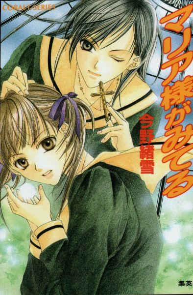
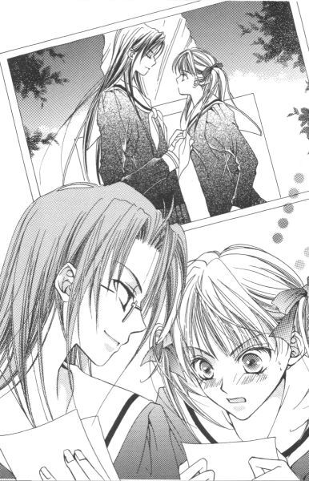
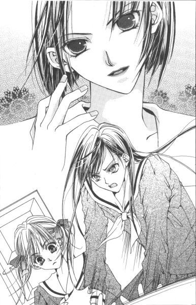
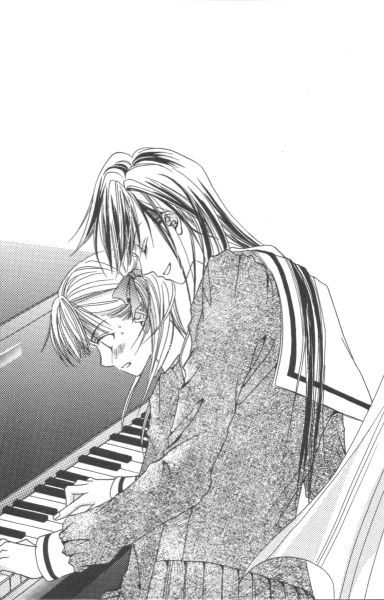
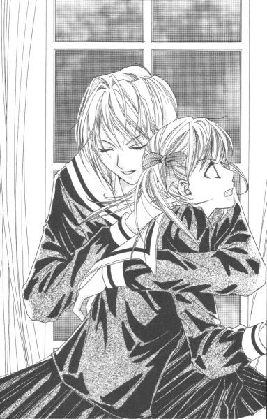
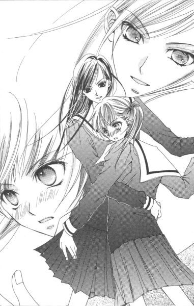
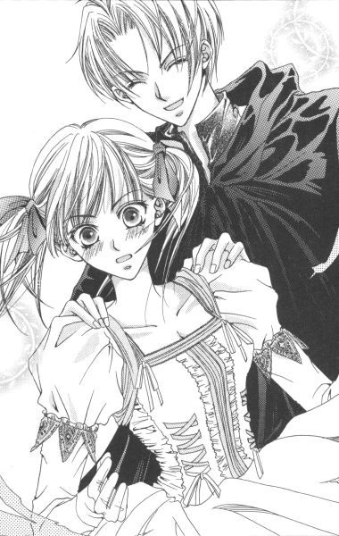
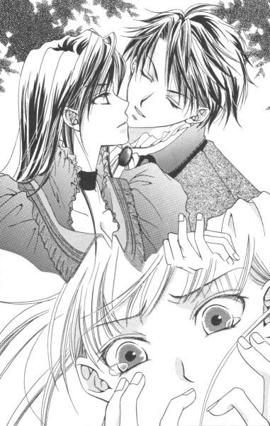

| [今野緒雪] マリア様がみてる01 | |
| 今野緒雪 | |
| (2015) | |
|
マリア様がみてる
今野緒雪
|

もくじ
胸さわぎの月曜日
波乱の火曜日
水曜日の物思い、金曜日のバトル
辛くて渋い週末
熱い二週目
ワルツな日曜日
あとがき
マリア様がみてる
「ごきげんよう」
「ごきげんよう」
さわやかな朝の挨拶が、澄みきった青空にこだまする。
マリア様のお庭に集う乙女たちが、今日も天使のような無垢な笑顔で、背の高い門をくぐり抜けていく。
汚れを知らない心身を包むのは、深い色の制服。
スカートのプリーツは乱さないように、白いセーラーカラーは翻らせないように、ゆっくりと歩くのがここでのたしなみ。もちろん、遅刻ギリギリで走り去るなどといった、はしたない生徒など存在していようはずもない。
私立リリアン女学園。
明治三十四年創立のこの学園は、もとは華族の令嬢のためにつくられたという、伝統あるカトリック系お嬢さま学校である。
東京都下。武蔵野の面影を未だに残している緑の多いこの地区で、神に見守られ、幼稚舎から大学までの一環教育が受けられる乙女の園。
時代は移り変わり、元号が明治から三回も改まった平成の今日でさえ、十八年通い続ければ温室育ちの純粋培養お嬢さまが箱入りで出荷される、という仕組みが未だ残っている貴重な学園である。
彼女──、福沢祐巳もそんな平凡なお嬢さまの一人だった。
胸さわぎの月曜日
１
「お待ちなさい」
とある月曜日。
銀杏並木の先にある二股の分かれ道で、祐巳は背後から呼び止められた。
マリア像の前であったから、一瞬マリア様に呼び止められたのかと思った。そんな錯覚を与えるほど、凛とした、よく通る声だった。
声をかけられたらまず立ち止まり、そうして「はい」と返事をしながら、身体全体で振り返る。不意のことでも、あわてた様子を見せてはいけない。ましてや顔だけで「振り向く」なんて行為、淑女としては失格。
あくまで優雅に、そして美しく。少しでも、上級生のお姉さま方に近づけるように。
だから振り返って相手の顔を真っ直ぐとらえたら、まずは何をおいても笑顔でごきげんよう──。
しかし残念ながら、祐巳の口から「ごきげんよう」は発せられることはなかった。
「──」
その声の主を認識したとたん絶句してしまったから。
辛うじて跳び上がらなかったのは、リリアン女学園の生徒としてはしたない行為をしないように日頃から心がけていた成果、......というわけでは決してない。驚きの度合いが激しすぎて、行動が追いつかないまま瞬間冷却されてしまっただけなのだ。
「あの......。私にご用でしょうか」
どうにか自力で半生解凍し、祐巳は半信半疑で尋ねてみた。もちろん、彼女の視線の先に自分がいることと、その延長線上に人がいないことはすでに確認済み。それでもやっぱり、疑わずにはいられない。
「呼び止めたのは私で、その相手はあなた。間違いなくってよ」
間違いない、と言われても。いいえお間違いのようですよ、と答えて逃げ出してしまいたい心境だった。声をかけられる理由に心当たりがない以上、頭の中はパニック寸前だった。
そんなことなど知る由もないその人は、うっすらと微笑を浮かべ、真っ直ぐ祐巳に向かって近づいてきた。
学年が違うので、このように間近でお顔を拝見することなどない。ちゃんとお声を聞いたのも、今回が初めてだった。
腰まで伸ばしたストレートヘアは、シャンプーのメーカーを教えて欲しいほどつやつやで。この長さをキープしていながら、もしや枝毛の一本もないのではないかと思われた。
「持って」
彼女は、手にしていた鞄を祐巳に差し出す。訳もわからず受け取ると、からになった両手を祐巳の首の後ろに回した。
（きゃー!!）
何が起こったのか一瞬わからず、祐巳は目を閉じて固く首をすくめた。
「タイが、曲がっていてよ」
「えっ？」
目を開けると、そこには依然として美しいお顔があった。何と彼女は、祐巳のタイを直していたのだ。
「身だしなみは、いつもきちんとね。マリア様が見ていらっしゃるわよ」
そう言って、その人は祐巳から鞄を取り戻すと、「ごきげんよう」を残して先に校舎に向かって歩いていった。
（あれは......あのお姿は......）
後に残された祐巳は、状況がわかってくるに従って徐々に頭に血が上っていった。
間違いない。
二年松組、小笠原祥子さま。ちなみに出席番号は七番。通称『 紅薔薇のつぼみ』。
ああ、お名前を口にすることさえもったいない。私のような者の口で、その名を語ってしまってもいいのでしょうか、──そんな気持ちになってしまう、全校生徒のあこがれの的。
（そんな......）
恥ずかしさに沸騰寸前である。
（こんなのって、ないよ）
祐巳はしばらく呆然と立ちつくしていた。
あこがれのお姉さまと、初めて言葉をかわしたというのに。こんな恥ずかしいエピソードなんて、ひどすぎる。
マリア様の意地悪。
悔し紛れに見上げたマリア様は、いつもと変わらず清らかな微笑を浮かべて、小さな緑のお庭の中にひっそりと立っていらっしゃるのであった。
２
「なーんだ、そんなこと」
前の席の桂さんは、話を聞くなりコロコロと笑った。
「暗い顔してご登校。私はまた、電車で痴漢にでもあったのかと思った」
「痴漢の方がましだったかも」
「どうして」
「後をひかない」
「祐巳さん、さては痴漢にあったことないな」
「私、バス通学だもの」
リリアン女学園の生徒は、大概はＪＲのＭ駅北口から出ている循環バスを利用して通学している。二人ともそれは同様なのだが、桂さんの場合Ｍ駅までメチャメチャ込む上り電車、祐巳はＭ駅南口までバス、という具合に通学における快適度（不快度）がまるで違っているわけだ。
「でも、最近はリリアン車両ができたっていう話じゃない？」
「できた、というか。山百合会の幹部メンバーたちの呼びかけで、リリアンの生徒は示し合わせて、後ろから二両目に固まって乗車するようにしただけよ。でも日直とか部活とかで少し早く出てきたりすると、生徒の数が少ないからあまり意味がないし」
それでも噂を聞きつけて、リリアン以外でもその車両を選んで乗車する女子学生が増えているようで、痴漢撃退対策に効果はあるらしい。もちろん男性を締め出す効力は何もないのだが、若い女性で溢れた車内に進んで乗り込む勇気のある殿方はあまりいないらしい。ましてや不審な動きなどできようはずもない。
リリアンの制服は、緑を一滴落としたような光沢のない黒い生地を使用していて、どこまでも上品。黒のラインが一本入っているアイボリーのセーラーカラーは、そのまま結んでタイになる。今時、ワンピースで、ローウエストのプリーツスカートは膝下丈。三つ折り白ソックスにバレーシューズ風の革靴がセットされてしまえばもう、天然記念物もので、制服マニアはもちろん一般人の中にも根強い人気がある。
人目を引くこの制服は、すでにお嬢さまブランドとして確立している。ただでさえセーラー服は狙われやすいというのに。
「電車が込んでいるから、私は駅で必ず身だしなみチェックするわよ」
桂さんはそう言いながら、祐巳を駅の鏡に見立てて、前髪を直しタイを結び直す仕草をしてみせた。こんな風にね、といった感じ。
「そうか。迂闊だったぁ」
祐巳は机に突っ伏した。すると桂さんが、その頭を「よしよし」と撫でる。
「まあね。優雅に座って通学できるような人は考えつかないわよ。気にしない気にしない」
「気になるわよ」
「こっちが忘れちゃえば、問題なしじゃないの？」
「どうして？」
「だって相手はリリアン女学園のスターよ。スターは素人のことなんか、いちいち覚えてやしないわよ」
スターと素人。
本当のことだけど、いや、だからこそグサッときた。桂さんの慰めは、ちょっとばかし荒療治だった。
ちなみに、桂というのは名前であって苗字ではない。リリアンではニックネームというものはほとんど存在しない。同級生同士は名前に「さん」をつけて呼び合うのが慣例となっている。上級生を呼ぶときは、名前に「さま」だ。
「声かけられて萎縮しちゃうのは、仕方ないわよ。『山百合会』の幹部に声をかけられて平気な一年生なんて、うちのクラスじゃ彼女くらいなものだもの」
そう言って、桂さんはチラリと視線を後方に向けた。祐巳がその先を追うと、ちょうど藤堂志摩子さんが教室に入ってきたところだった。
「ごきげんよう、桂さん。ごきげんよう、祐巳さん」
志摩子さんは二人に挨拶すると、優雅に自分の席に進んでいく。
「ご、ごきげんよう」
祐巳と桂さんは、「何を照れているのよ」とお互いに顔を見合わせた。
同級生なのに、何という違い。祥子さまとは全然違うが、志摩子さんも超がつくほどの美人だった。
彼女を見ていると、きれいな人というのは小さい頃からきれいなのだと、がっかりしてしまう。高校二年生になれば、祥子さまのように突然美しくなれるという希望的方程式は、だからたぶん存在しないのだ。
「聞いた？」
桂さんが囁いてきたので、祐巳も声をひそめた。
「志摩子さんが『 白薔薇のつぼみ』になった話でしょう？二年生を通り越して」
それは有名な話だった。志摩子さんが一年生でありながら、白薔薇さまと姉妹の契りを結んだという話は。
「そうじゃなくて」
「そうじゃなくて？」
最新スクープとばかり指を唇の前に立てて、桂さんは「お姉さまから聞いたんだけれど」と言った。彼女の『姉』はテニス部の先輩で、確か祥子さまと同じクラスだった。
「志摩子さん、白薔薇さまだけじゃなくて、祥子さまからも申し込まれていたんですって」
「えー!!」
「祐巳さん、声が大きい」
机一つはさんで、背を丸める二人。淑女とは言い難い光景であるが、その辺本人たちは気がついていない。──マリア様お許しください。いつの世も、女性は他人の噂話が大好きなんです。
そもそもリリアン女学園高等部に存在する姉妹というシステムは、生徒の自主性を尊重する学校側の姿勢によって生まれたといえる。義務教育中は教師及びシスターの管理下におかれていた学園生活が、生徒自らの手に委ねられ、自分たちの力で秩序ある生活を送らなければならなくなった時、姉が妹を導くごとく先輩が後輩を指導するという方法が採用された。以来それを徹底することにより、特別厳しい校則がなくとも、リリアンの清く正しい学園生活は代々受け継がれてきたのだ。
スールはフランス語で姉妹のこと。たぶん、シスターでは混乱するため、英語を避けたものと思われる。最初は広い意味で先輩後輩を姉妹と呼んでいたが、いつの頃からか個人的に強く結びついた二人を指すようになっていった。ロザリオの授受を行い、姉妹となることを約束する儀式がいつ頃から始められたかは定かではない。
「聞くところによるとね、祥子さまの方が先だったのに、後からきた白薔薇さまの差し出された手を取ったらしいわ」
桂さんは鼻を鳴らして言った。何だか興奮している。
「紅より白の方がよかったのかしら」
「そういう問題じゃないでしょう。もう、......祐巳さんたら、少しズレてるんだから。いい？志摩子さんクラスになると、二つの薔薇を両天秤にかけることができるってことよ」
「天秤にかける、なんて人聞きの悪い」
「でも、事実祥子さまが捨てられたのよ」
「うーん」
もったいないことをするものだ、と祐巳は思った。
「うーん、じゃないわよ。ひどいと思わないの？」
「どうして？ 二人をお姉さまにできないなら、どっちか選ばなきゃだめじゃない」
「後から申し込んだ方を選んでいいの？」
「早いもの勝ちじゃないでしょう」
「早いもの勝ちよ！」
桂さんは肩で息をきらしながら、ズバリ言いきった。そういえば、彼女の場合はテニス部に入ったその日のうちに姉妹の儀式をしたんだっけ。
「時に、黄 薔 薇は？」
「黄薔薇は三年二年一年、すべて安泰じゃない」
「そうよね」
祐巳にとっては、白薔薇さまと 紅薔薇のつぼみが志摩子さんを取り合った事実より、最近まで双方に『妹』が存在していなかったことの方が驚きだった。
「どっちにしろ、祥子さまに申し込まれて即お受けしなかった事実には変わりないわよ」
そう言いながら、桂さんは時計を見た。
朝拝の鐘が鳴る。
続いて校内放送で賛美歌が流れる。週一度のお聖堂朝拝以外は、教室で朝のお祈りをする。まず聖歌を歌い、学園長の話を聞き、心を静めて神に祈りを捧げるのだ。
今日一日、正しく暮らせますように。
けれど、手を合わせながらもいつもの平穏な生活から外れていくような予感をどこかに感じていた。
３
「祐巳さん、祐巳さん」
放課後、掃除当番だった音楽室から出たところで祐巳は声をかけられた。
「あ、蔦子さん。お教室の掃除はもうお済み？」
「ええ。ですから行き違いにならないように、早足で参りましたの。祐巳さん、鞄を持って掃除にいらしたみたいだから」
一年の教室から結構離れているので、音楽室の時は鞄持参で掃除にいく。その方が昇降口にもクラブハウスにも近いから、帰るにしても部活にいくにしても便利なのだ。
「何か、私にご用でも？」
「少々お話が」
「お話？」
聞き返すと、蔦子さんはフレームなしの眼鏡の両目の間に指をかけながら「ええ」とうなずいた。
「じゃあ、祐巳さん。私たちは、部活もあるので先に失礼しますね。掃除日誌は、職員室に返しておきますから」
一緒に掃除当番をしていた三人が、無垢な瞳でほほえんだ。
「まあ、......ありがとう」
「いえ。お気になさらないで。ごきげんよう」
「ごきげんよう」
カラスの濡れ羽色の制服が、緩やかに廊下を流れていく。その姿を、蔦子さんと並んで見送った。
「私が、写真部に所属しているのはご存じよね？」
蔦子さんは祐巳に向き直ると、唐突に言った。
「え、......ええ」
有名人ですから。
授業中以外は、ほぼカメラを手放さない。シャッターチャンスを逃した時の悔しさを思うと、そうせざるをえないという話を、いつだったか聞いたことがある。高等部に入学して初めて同じクラスになったが、いつ撮られていたか知れない写真を二度三度もらったことがある。カメラの腕なんてよくはわからないけれど、平凡な祐巳の顔が三割増しくらいに可愛らしく写っていた。
「学園祭が近いじゃない？ だから、このところ朝早く出てきて部活の早朝練習撮ったりしているの」
彼女の被写体は、もっぱら人物だ。細かく言えば、「女子高生」がテーマ。そこまではいいんだけれど、あまり構えすぎるといい写真が撮れないということで、隠し撮りまがいの真似をする。
「蔦子さん。覗き見みたいな撮り方、やめた方がいいのと違う？」
「現役のリリアン女学園生徒という特権を生かさずして、どうするの。私は、美しいものを美しいままにフレームの中に閉じこめておきたいだけなの。私たちもいずれは年老いてしまうけれど、『今』を輝いているままで保存できる。それはカメラに選ばれた私が、天から与えられた義務なのよ」
拳を力一杯振り上げた。
「それでもねぇ」
「大丈夫。被写体には、それぞれ筋を通しているから。ボツ写真は、ネガごと燃やすし。発表する場合は事前に必ず本人の同意を得ているわ」
「筋？」
「こんな風にね」
蔦子さんは二枚の写真を祐巳に差し出した。
「何？」
三、二、一。
それがどんな写真であるのかわかるまで、きっかり三秒は要した。
「えー！」
祐巳はリリアンの生徒にあるまじき大声を出して、蔦子さんから口を押さえられた。
「こ、これっ」
ああ、それは。
記憶の中からすっぽりと消し去ってしまいたい、朝の光景。小笠原祥子さまと祐巳との、ツーショット写真だった。
それにしても、さすが写真部のエース。シャッターチャンスは逃していない。祥子さまの両手は、しっかり祐巳のタイを握っていて。結び終わった時の、キュッっていう音までも聞こえてきそうだった。
鞄を落としそうになりながら、祐巳は尚も食い入るように写真を見つめた。
やっぱり、祥子さまはお美しい。側にいる祐巳までも、つられて天使のように写っていた。
「一枚は望遠で撮ったからアップね。でも、こっちの、全身が写っている方が『いけない』雰囲気出ていていいと思わない？」
ちなみにタイトルは『躾』、と言う蔦子さんに、祐巳はすがりついた。
「これ、ちょうだい！」
祐巳が言ったと同時に、蔦子さんは写真を取り上げて笑った。まるで魚が釣り糸に引っかかったといった表情で。
「いいけど。二つばかし条件が」
「条件？」
「その一。学園祭の写真部展示コーナーにパネルで飾らせること」
「えっ......」
展示？ パネル？ 何を血迷っているんだろう。
勉強も身長も体重も容姿も、すべてにおいて平均点の自分と、すべての条件を満たした小笠原祥子さまとを並べて全校生徒の前にさらそうだなんて、なんと無謀な。
「蔦子さん。ご冗談でしょう」
「ご冗談なものですか。この写真は今年一番の出来だと、撮った時から確信していたの。だから昼休み返上で現像したのよ」

そう言ったと同時に、蔦子さんのお腹からは淑女らしからぬグーという音が聞こえてきた。なるほど、お弁当は手つかずのまま鞄の中で眠っているらしい。趣味とは、育ち盛りの食欲をも越えてしまうわけだ。
「でも、パネルって......」
祐巳はうつむいた。
「この写真いらないの？」
蔦子さんは二枚の写真を摘むと、祐巳の顔の前でチラチラと揺らした。
「私は知っている。あなたが密かに小笠原祥子さまに憧れているということを。それなのに、ツーショットはおろか、バストショットの写真一枚所持していない事実も。修学旅行の写真が職員室の前に張り出された時、いい写真がいっぱいあったのに学年が違うから申し込めずに悔しい思いをしたわよね？部活をやっていないあなたは、二年の先輩に頼んで買ってもらうことすらできなかった。辛うじて持っているのは、運動会の時の写真。あなたの背後に偶然写っていたリレー待ちの祥子さまは、米粒とまではいかないけど、豆粒ほどの大きさだったわ」
「失礼な。鉛筆くらいはありました。あれでも、大切にしているんだから」
蔦子さんは、今すぐ私立探偵をやれそうだ。
「その鉛筆で、今日以降もあなたは満足できるのかしら」
眼鏡のレンズが、フラッシュのようにキラリと光った。
「......罪つくり」
こんなにいい写真を見せられたら、以前のもので我慢できるわけないじゃないか。
「けど、祥子さまが駄目だって言うかもしれないんじゃない？」
「だからね」
蔦子さんは人差し指を一本たてて、得意げに笑った。
「条件のもう一つは、 紅薔薇のつぼみに許可をもらってくること」
「ええっ!? そんなの、無理よ！ 絶対無理」
また、とんでもないことをサラリと言ってくれる。
「どうして？」
蔦子さんは目を丸くした。
「こんなに親しげなのに。まるで『姉妹』のよう」
「まさか！」
祐巳は説明した。今朝、登校途中に偶然声をかけられて、何事かと思ったら身だしなみを注意されただけなのだ、と。
「まあ。それなのにタイまで直していただくなんて、同級生たちが知ったらさぞかしうらやましがるでしょうね」
「うらやましいですって？」
思い出しただけで、赤面が復活しそうだ。
「祥子さまは、きっとだらしのない生徒だと思ったわ」
本当は、あんなはずじゃなかった。
いつか、近い未来に訪れるであろうあこがれのお姉さまとの出会いは、もっと美しいシチュエーションであるはずだった。
例えば、映画のワンシーンのように。卒業してからも、思い出すだけで心が熱くなるような。それは、一瞬だけでいい。風に飛ばされた祥子さまのハンカチを拾って差し上げるとか、そんな些細な出来事で。
それが、曲がったタイだなんて。おまけにあわてふためいて、挨拶もお礼も言えない礼儀知らずの下級生に成り下がっていた。
「だらしない生徒、結構じゃない？ あなた、そのお陰で憧れのお姉さまに接近できたんでしょう？」
「う......っ」
それを言われると、つらい。タイが曲がっていなかったら、一生声なんかかけてもらえなかったに違いないのだ。
「蔦子さん、自分で交渉したら？いつもは、そうしているんでしょう」
「いくら怖いもの知らずの蔦子さんとはいえ、さすがに山百合会の幹部は恐ろしい」
山百合会とは、リリアン女学園高等部の生徒会。その幹部、紅白黄の薔薇さまといえば、生徒でありながら、一般の生徒とは別格の地位にいる殿上人なわけである。祥子さまは、その紅薔薇さまの妹だった。
「それにね、ここは祐巳さん。あなたを使うことが交渉に有利とみた」
「ど、どうして」
「祥子さまの目にとまったから」
「だから、それはタイが──」
「ただタイが曲がっていたくらいで、祥子さまが直してくれるなら、リリアンの生徒全員がタイをほどいて歩くわよ」
蔦子さんはズバリと言い切った。
「まさか」
「実際、私はそういう計算ずくの一年生を見たことがあるのだ」
目にとまりたい一心で、わざとタイをゆるめて祥子さまの前を通り過ぎるという、大胆な行為を実行した一年生がどのような末路をたどったか。蔦子さんは、まるで舞台中央でスポットライトをあびる主演女優さながらに、朗々と語った。
「特に祥子さまは、学園一の潔癖性。だらしない身なりがお嫌いで有名だから、そんな馬鹿なことをしてしまう愚か者が出ちゃったんでしょうけれど」
正しい精神を宿すためには、まず身だしなみから正しなさい──。幼稚舎からであれば約十一年間、ことあるごとに言われ続けたその教えを破ってまで、憧れの先輩に声をかけてもらおうとしたその彼女を待っていたものは、祥子さまの冷ややかな一瞥。そして無視。
だがそれだけでは済まなくて、その生徒のお姉さまを呼び出して注意したという後日談があるという。
「祥子さま、......怖い」
「今頃知ったの？ 小笠原祥子さまは、怖いわよ。こと、筋が通らない話に限ってだけだけれど」
「その、怖い祥子さまに、私を立ち向かわせようと......？」
恐ろしいのは、蔦子さんも同じだと思う。
すでに祐巳は、逃げ腰になっていた。上履きのつま先は、しっかり昇降口の方向を向いている。
「わかっていないわね、祐巳さん。祥子さまだって鬼じゃないわよ。むしろ、天使。大天使ミカエル様」
「だ、大天使ミカエル様......？」
何を言っているんだか、自分ではわかっているんだろうか。蔦子さんは遠い目をしていた。
「あの方はね。本来、気高く寛容なお方なの。ただし、ご自分の美意識に反する行為に関してだけは、断じて許されない。生まれながらのお姫さまだからね。あの方の中には、あの方独自の法があるのよ」
蔦子さんは、一人で突っ走っている。祐巳はたまらず、「はい」と挙手をしてから言った。
「蔦子さん。私、国語の成績は中の中なんだけれど」
「はい？」
「もう少し、レベルを落として説明していただけない」
「レベルを落とせ？」
「つまり、もう少しわかりやすい言葉でお願い」
うーん、と蔦子さんは腕組みをした。自分の中で出来上がった理論を、他人に伝えることは難しい。
「簡単に言えば、祥子さまは理不尽には怒らないから大丈夫、っていうこと。あの方がお怒りになることは、常に道理が通っていること」
「だから？」
「安心して説得してちょうだい」
「どうして、私が」
「ウマがあいそうじゃない？ あなたと祥子さま」
もう、蔦子さんの思考回路、さっぱりわからない。
「何を根拠に」
「根拠？ 根拠なんてないわ。こういうものは、勘よ。直感」
下級生のタイごときに関わるようなお方ではない祥子さまが、今朝に限って声をかけて注意したばかりか、自らの手で結び直したというのは快挙である。蔦子さんはそう力説した。
「本人は気づかなくても、気の合う人間って知らずに歩み寄っていくものなのではないかしら」
「また、訳の分からないことを」
つまりは、自分かわいさに、嫌な用事を祐巳に押しつけているだけなのではないだろうか。
「だらしない女の子だと思われた、と気に病むくらいなら、別のイメージにすり替えればいいじゃない。『今朝は注意していただき、ありがとうございました』って丁寧にお礼を言えば、礼儀正しい女の子になれるわよ」
「うー。蔦子さん、口がうますぎる」
「ありがとう。弁論部に誘われたこともあるのよ」
ふふん、と笑ってみせる表情は、演劇部からも勧誘されそうなくらい堂に入っていた。
それから十分後、祐巳は山百合会の本部である『薔薇の館』の扉前に立たされていた。
最後は「写真、いらない？」という蔦子さんの殺し文句に押し切られ、祥子さまに交渉する役を引き受けさせられてしまったのである。
４
リリアン女学園高等部の生徒会、その名はマリア様のお心にちなんで山百合会という。
マリア様の心は、青空であり、樫の木であり、ウグイスであり、山百合であり、そしてサファイアなのである。それは、幼稚舎に入ってまず最初に覚えさせられる歌にあった。
（しかし、どうしてサファイアなんだ......？）
子供心に不思議に思い、未だにそれは引きずっている。青空、樫の木、ウグイス、山百合ときて、なぜサファイアなのか、と。
マリア様のお心を美しいものに喩えているのだろうけれど、宝石という俗物的な物を空や動植物と同列に並べることにどうしても違和感を覚えた。それにサファイアは高価な物だから、青空を見上げるくらい同等に誰もが平等に身を飾ることなどできないと思ったのだ。
（でも、祥子さまクラスのお嬢さまなら、サファイアに違和感なんか感じないんだろうな）
薔薇の館の前に立った祐巳は、ぼんやりとそんなことを考えていた。
お嬢様学校と呼ばれるリリアンの生徒は、比較的裕福な家庭の娘が多い。幼稚舎からこの学校に通っている祐巳も、父親が設計事務所を開いているから一応は社長令嬢といえなくもない。
クラスメイト同士、父親の職業をわざわざ教えあったりはしないが、日常的な会話から漏れ聞こえてくるところによると、医者とか弁護士とか中小企業の社長とか、大企業の部長とか、大学教授とか、確かに偉そうな肩書きも少なくない。
しかし、今から訪ねる小笠原祥子さまは、そんじょそこらのお嬢さまとは格が違った。百貨店やレジャー施設など幅広く経営する小笠原グループの会長の孫娘で、母の実家は元華族という、家柄も正しいお姫さまなのだ。
薔薇の館は。館とはいっても、高等部校舎の中庭の隅に建っている教室の半分ほどの建坪の小さな建物であった。しかし、れっきとした生徒会だけの独立した建物であり、木造二階建てという外観を見れば、館という趣は確かにある。
「祥子さまは、本当にここにいるかな」
祐巳はノックのために前に突き出した拳を一旦下ろし、蔦子さんに声をかけた。
「教室にはいなかったじゃない。山百合会の幹部の方たちは、学園祭準備で連日放課後は薔薇の館に集まっているっていう話よ」
そう言いながら、蔦子さんは祐巳を再び扉の方に向き直らせた。あくまで、彼女は付き添いという立場でそこにいるらしい。メインは祐巳。いったい、誰の用事でここまで来ているんだと文句を言いたいが、ツーショット写真をゲットするまでは、じっと我慢である。それに蔦子さんの言うように、うまくいけば朝の汚名を返上できるし、あわよくば親しくお話しできるかもしれないのだ。
「そう。連日きているんだ......」
ということは、もう後には引けないということだ。
祐巳はもう一度拳を上げた。しかし、なかなかそれで木の扉を打ちつけるまではいかない。
（ああ、何て気弱な）
しかし、ごく普通の一年生なら、祐巳に限らずこの扉を叩くことはかなりの度胸がいることではないだろうか。それを知っているからこそ、蔦子さんも急かさないのだ。「ノックくらいできないの？」と言われたら、「じゃあ、あなたがやって」と切り返してやろう、と祐巳は心の中で思っていた。
握った手の平に、汗を感じた。おかしいな、汗ばむ陽気ではないのに。
ドキドキ動悸が激しくなり、そのうち足も震えてきた。
扉が開いた先に何が待っているのか、まるで未知の世界だった。
やっぱり無理、と拳を下ろした時、二人の背後から声が聞こえた。
「山百合会に、何かご用？」
「はっ!?」
祐巳と蔦子さんは、バネ仕掛けのように振り返った。
「あら、ごめんなさい。驚かせてしまったかしら」
そこに立っていたのは、藤堂志摩子さんだった。
祐巳はホーッと息を吐いた。まだ心の準備ができていないところに祥子さまが現れでもしたら、気絶ものである。気絶はオーバーにしても、取り乱して今朝以上の失態をやらかしてしまうのは確実。
「志摩子さんこそ、どうして......」
祐巳が言いかけると、横の蔦子さんが「ばかね」と軽いひじ鉄をした。
「志摩子さんは 白薔薇のつぼみなんだから、ここにいるのは当たり前じゃない」
「あ、そうか」
彼女は「普通の一年生」ではないんだった。
「祐巳さんと私、 紅薔薇のつぼみにお話があって。志摩子さん、取り次いでいただけないかしら」
蔦子さんはちょうどいいとばかりに、クラスメイトの志摩子さんに話をつけようとした。同じつぼみでも、白と紅では気安さがずいぶん違った。
「あら、そういうことだったら、お入りになったら？祥子さまは多分二階にいらっしゃると思うし」
志摩子さんはやわらかな巻き毛を揺らしながら、扉を開けて怖じ気づく二人に手招きをした。
きれいなだけじゃなくて、やさしくてかわいい人だったんだ。藤堂志摩子さんって。祐巳はぽーっと見とれてしまった。
これなら、祥子さまと白薔薇さまが取り合いもするよなぁ。だって、一緒に並んで歩きたくなるようなタイプだもん。色白で、やわらかそうな茶色の巻き毛で。
それに引き替え、同じ天パーでも祐巳のはただの癖っ毛。跳ね放題の剛毛を二つに分けて、どうにかこうにかリボンで押さえているのだ。──片や綿菓子、片やサバンナの野生動物。
「どうぞ？」
志摩子さんは扉を押さえたまま、もう一度二人に声をかけた。
「行こう、祐巳さん」
ゴクリと唾を呑み込むと、蔦子さんは祐巳の腕をとった。あくまで、道連れにするつもりらしい。
中に一歩踏み込むと、そこは不思議な空間が広がっていた。
「うわ......」
入ってすぐは、小さいが吹き抜けのフロアになっている。向かって左にはやや急勾配の階段。二階に上り切った突き当たりに、扉ほどの大きな明かり取りのはめガラスがあるらしく、階段を真っ直ぐ下りるように夕方の日差しが階下まで伸びていた。
フロアに人気はなかった。右手に一つとその真上に一つ部屋があるようだったが、志摩子さんの言うように一階に人が集まっている気配はない。これでは、入り口で祐巳がノックしたとしても、気づいてもらえなかったのではないかと思うと、大仕事を前にドッと疲れてしまいそうだった。
「こちらよ」
志摩子さんはプリーツの襞を階段で擦らないように押さえながら、器用に階段を上っていった。祐巳と蔦子さんは顔を見合わせ、「うん」とうなずいてから、その後に続いた。
高等部に入学して約半年。祐巳の中で薔薇の館は、シスターの居住区と同率一位とも思える禁忌の空間であった。
「あの......、志摩子さん？」
祐巳は、急に不安になってきた。
「はい？」
「こんなに簡単に、部外者を入れてしまっていいの？」
最上の一段に足をかけたまま振り返った志摩子さんは、一瞬驚いたように目を瞬かせて「まあ」と言った。
「部外者だなんて、どうして思うの？ この建物は山百合会の本部として使っているから、役員たちが管理してはいるけれど。生徒全員が山百合会の会員なのよ？訪ねてきてくれるのは、もちろん大歓迎だわ。もっとも、一度に百人もの生徒が押し寄せたりしたら、床が抜けてしまうかもしれないけれど？」
肩を小さくすくめて、志摩子さんは笑った。
確かに、この古い木造の建物ではもってせいぜい五十人といったところかもしれない。
いったい、いつの時代に建てられたものなのだろう。リリアンの高等部校舎だって決して新しいものではないけれど、少なくともこんな風に階段がギシギシ音をたてたりはしない。
階段を上り切ると、右手にビスケットのような扉が現れた。先頭の志摩子さんに続いて扉の側までやってくると、中から突然耳をつんざくような声が聞こえてきた。
「だからって、どうして私がそれをしなければならないのですか！」
扉越しだから、これはそうとう大きな声だ。薔薇の館に大声はあまりそぐわないのではなかろうか、と思っていると、再び同じ声が叫んだ。
「横暴ですわ！ お姉さま方の意地悪！」
ドアにかけられた『会議中につきお静かに』のプレートと「意地悪」という言葉が、妙にアンバランスだった。
すごいな。上級生つかまえて、「意地悪」なんて言ってしまえる生徒。
ここは、薔薇の館で。中にはきっと薔薇さまはじめ、錚々たるメンバーが鎮座ましましているに違いないというのに。
会議に出席して、「お姉さま方の意地悪」なんて、言えないぞ。普通の生徒は。
「よかった。祥子さまいらっしゃるみたい」
志摩子さんはドアノブに手をかけた。
「えっ!?」
「ということは、今の声は祥子さまなの......」
祐巳は、素直にたじろいだ。祥子さまが、あのように大きなお声をお出しになるなんて。意地悪なんていう言葉を、拗ねたように言ってしまうなんて。それは、蔦子さんも同様だったらしい。
それに対して志摩子さんは、「いつものことよ」と微笑してから、ノックもせずにゆっくりと扉を開けた。
と、その瞬間。
「わかりました。そうまでおっしゃるなら、ここに連れてくればいいのでしょう！ええ、今すぐ連れて参ります！」
という捨て台詞ともいえる言葉とともに、一人の生徒が勢いよく部屋から弾き出されてきた。内側からドアノブに手をかけたところで、廊下側から扉を開かれてしまったために起きた不幸な事故だった。
「あっ！」
「うわっ！」
人が飛び出してきたと思った瞬間、祐巳は身体の前面に軽い衝撃を受けた。次いで視界が傾ぎ天井が回って、その後すぐにお尻に激痛が走った。
その人物は、ドアが盾になった志摩子さんでも、最後尾に控えた蔦子さんでもなく、二番手の祐巳の身体を狙ったように直撃したのだ。
だから、先の「あっ！」が飛び出してきた人の、後の「うわっ！」というのが祐巳の声だった。
「大丈夫!?」
志摩子さんと蔦子さんの声が聞こえた。
「う......ん」
何が何だかよくわからない、すごい状況になっていた。
ぶつけたのはお尻だけだったようだけれど、胸からお腹あたりにかけて「むぎゅ」っていう妙な圧迫感が残っている。おまけに、顔には自分以外の髪が覆い被さっているから、仰向けに倒れているはずなのに、辺りがよく見えなくて、方向はおろか天と地すら判別できなくなっていた。
「痛......」
つぶやきながら、上に被さっていた人物がゆっくりと身を起こした。視界が広がってまず見えたのは、間違いなくあこがれの 紅薔薇のつぼみ、小笠原祥子さまだった。彼女もまた何が起こったのか、すぐには判断できないようで、その場に座り込んだまま頭を小さく振っていた。
真っ直ぐな長い黒髪が、コマーシャルのモデルみたいにサラサラとねじれて揺れて、やがて定位置に戻った。テレビと違うところは、フローラルの香りが伴っているところだ。
「あーあ。ずいぶん派手に転んじゃったわね」
「え、祥子の五十キロに押しつぶされちゃったの？悲惨ー」
「おーい。被害者、生きている？」
部屋の中からは、騒ぎに気がついて生徒たちがゾロゾロと出てきた。山百合総会でしかお目にかかれないようなすごいメンバーが勢揃い。紅 薔 薇、黄 薔 薇、白 薔 薇。黄薔薇に至っては、つぼみもその妹までもいた。
「えっ、私が押しつぶしちゃったの!? ちょっと、あなた大丈夫!?」
やっと状況を把握した祥子さまは、あわてて祐巳を抱き起こそうとした。
「祥子。簡単に動かさない方がいいよ。頭打っていたら大変だから」
人波をかき分けて出てきたのは 黄薔薇のつぼみ。二年菊組三十番、支倉令さま。さすがは武道家の娘、受け身を失敗して脳しんとうを起こしたりするケースとかよく見ているのだろう。
しかし、セーラーカラーでローウエストのプリーツスカートという制服を着ていてなお、男装の麗人に見えるという存在もリリアンでは希少価値ではないだろうか。スレンダーな身体にベリーショートヘア。アンティークドールの着ているドレスにも似たこの制服を、袴のように着こなしていた。
「あ、大丈夫です。お尻を打っただけだから」
祐巳はあわてて起きあがった。まだお尻はジンジンと痛んでいたが、このままでは大事になってしまいそうだ。
「本当に？」
不安そうな顔をして、祥子さまは祐巳を覗き込んだ。
ああ、そんなに至近距離で見つめられては、いたたまれない。きれいなお目が汚れます。
「ええ、この通り」
その場の空気に耐えきれず、祐巳は不死鳥のように立ち上がってその場でピョンピョンと飛び跳ねた。いい加減、自分のピエロぶりが嫌になってしまうが、そうでもして見せないと救急車でも呼ばれかねない雰囲気があった。
「よかった」
安堵したのか、祥子さまは祐巳をキュッと抱きしめた。胸に、さっきと同じ圧迫感。ああ、そうか。それは祥子さまの胸の膨らみだったらしい。制服の構造上、体型の個人差は表に出にくいが、お胸はかなり豊かなほうらしい。......なんて考えている場合じゃない。畏れ多くも、今、祥子さまに抱擁されているのだ。
「時に」
抱きついたまま、祥子さまは祐巳の耳もとで囁いた。
「あなた、一年生よね？ お姉さまはいて？」
「は？」
瞬間に思ったのは、タイをわざと外して自爆した一年生のこと。その子の代わりに、祥子さまは彼女のお姉さまを注意した。
でも。
ぶつかったくらいで、姉までも巻き込むだろうか。この場合、事故といっていいし、何より、祥子さまのほうが止まっている祐巳を巻き込んだ形なのだ。
「どっちなの？」
祥子さまは小声で急かした。
「いません......けど？」
内緒話のような雰囲気があったので、祐巳も声を殺して答えた。すると。
「結構」
祥子さまは密着していた身体を離すと、祐巳の手をとって薔薇さまたちの前に進み出た。
「あ、あの」
「いいから。言う通りにして」
かなり強引。訳もわからず、それでも豪華メンバーの前に引きずられるようにして連れていかれた。
「お姉さま方にご報告いたしますわ」
扉越しのヒステリー気味な声とはうってかわって、凛としたいつもの祥子さまの声だった。
「まあ、いったい何が始まるの？」
紅薔薇さまが、知的な微笑を浮かべて尋ねた。さすが、祥子さまのお姉さま。あの祥子さまを、手の平の上で転がしてしまいそうな余裕と貫禄がある。
「この子──」
そうつぶやいてから祥子さまは口ごもり、祐巳に向かって「自己紹介なさい」と告げた。祐巳の名前を聞いていなかったことに、今更ながら気づいたのだ。
「あ、一年桃組三十五番。福沢祐巳です」
祥子さまに向かって自己紹介しようとしたら、そのまま身体を半回転されてしまった。どうやら、薔薇さまたちに知らせたかったらしい。
「なるほど、フクザワユミさん。漢字でどう書くの？」
紅薔薇さまは腕組みをして尋ねた。
「福沢諭吉の福沢、しめすへんに右を書いて祐、それに巳年の巳です」
「めでたそうで、いいお名前」
白薔薇さまが華やかにほほえんだ。
「それで？」
最後に黄薔薇さまが、値踏みするように上から下まで祐巳を見た。
「その、福沢祐巳さんが、どうなさって？」
いつの間にか、祐巳は三色の薔薇さま方に取り囲まれてしまっていた。
蛇ににらまれた蛙って、こんな状態をいうのだろうか。いくら名前に巳という字がついていて多少は親しみがあるとはいえ、こんなのは勘弁してほしい。蛇じゃなければ、茨の森か。きれいな薔薇には棘があるというけれど、やっぱり薔薇さまたちはただの美しいお姉さまだけじゃない気がした。
お尻しか打っていないけれど、目に見えない重圧に、頭がクラクラしそうだった。いったい祥子さまは、気弱な一年生を捕まえて何をさせるつもりなんだか。
「お姉さま方。そんな風にして見つめるの、失礼じゃありません？ほら、祐巳がすっかり怯えてしまって」
（ゆ、祐巳......!?）
おいおい。
さっきまで名前も知らなかったのに、いきなり呼び捨てか？と、突っ込みを入れたいところではあるが、相手が祥子さまだから何だかポーッとなってしまった。
祐巳。
名前に「さん」付けが定番のリリアンで、呼び捨てというのはごくごく親しい間柄だけに限られていた。友達みたいな親子関係がモットーなので、両親には「祐巳ちゃん」と呼ばれている。祐巳なんて呼ぶのは、最近生意気になってきた弟くらいなものだった。
何だか、いい感じ。祥子さまに「祐巳」って呼ばれるの。
状況は今ひとつ飲み込めていないのだけれど、ここは気分がいいのでもう少し祥子さまに付き合うことにした。こんな自分でも、何かお役に立てることがあるかもしれない。──そんなところだ。
「そうね。不快に感じられたとしたら、ごめんなさい。......えっと、福沢祐巳さん」
白薔薇さまが首を傾げるように小さく曲げた。この人が、志摩子さんのお姉さま。志摩子さんとは全くタイプは違うエキゾチックな顔立ちをしているけれど、アップに耐えられる美人という点は変わらない。段を入れたセミロングが、耳の後ろに風のように流れてきれいだった。
「でもね。私たちは 紅薔薇のつぼみである祥子の行動に、どうしても注目してしまうの。わかっていただけるわね？」
「......は、はあ」
薔薇さまたちが祥子さまを気にしていることは理解できるんだけれど。それがどうして自分をジロジロ眺めることにつながるのかは、祐巳にはわからなかった。
「白薔薇さま。勝手に祐巳に話しかけないでくださいな」
祥子さまが庇うように祐巳の前に出た。
「あら、いつから祐巳さんはあなたの所有物になったの？」
白薔薇さまは片眉を上げてクスリと笑った。揚げ足を取られた祥子さまが、美しいお顔のこめかみあたりを引きつらせたのが、斜め後ろの祐巳からも見えた。
「まあ、白薔薇さま。まずは、祥子の話を聞いてあげましょうよ」
「そうですわ。報告があるって言ってましたもの」
紅薔薇さまと黄薔薇さまに取りなされて冷静になったのか、祥子さまはぴりぴりしていた表情を戻してうなずいた。
「先ほどのお約束を果たさせていただきます」
「約束？」
紅薔薇さまが聞き返した。
「今すぐ決めれば文句はないのでしょう？ ですから私、この祐巳にします」
祥子さまは、祐巳の肩を抱いてどうだとばかりに前面に押し出した。まるで、買ってもらったばかりのおもちゃをひけらかすように。
「あの......」
問題の「さっきの話」の内容を知らない祐巳には、何のことだかさっぱりわからない。もしや、知らずにものすごいことに巻き込まれてしまったのではないだろうか。
蔦子さんや志摩子さんに目で助けを求めてみたものの、首を横に振られてしまった。彼女たちだって祐巳と一緒に来たわけだから、この事態を把握しきれるはずもなかった。
「それ、って。もしかしてドアを出る直前に叫いていた捨て台詞？」
三人の薔薇さまたちは、探るように祥子さまを見た。
「もちろん」
勝ち誇ったような笑みを浮かべ、祥子さまはそのまま流暢に、その場にいた全員の度肝を抜くような言葉を発した。
私は、今ここに福沢祐巳を 妹 とすることを宣言いたします、と。
５
「どうぞ」
湯気の立ち上る赤い液体が白いカップに七分目ほど注がれ、目の前に置かれた。
これは、紅茶という飲み物だ。
「ミルクとお砂糖は？」
背の低い、お下げ髪の少女が籠に入ったスティック状の物を差し出した。この子は確か、同じ一年生で。クラスと苗字はちょっと思い出せないけれど、 黄薔薇のつぼみである支倉令さまの妹で、確か由乃さん。
「いえ、結構です」
断ってからぼんやりと考えた。えっと、ミルクって何だっけ？
ああ、かなり混乱している。
祥子さまの宣言を聞いて、一番驚いたのは、他ならぬ祐巳自身だった。ドッカーンっていう周囲の騒ぎにも乗り遅れて、ただその場で固まってしまった。いったい一日に何回、祥子さまに石にさせられたら済むのだろう。
とにかく落ち着いて話をしようじゃないか、とそういうことになって、一同は会議中のプレートが掲げられた扉の中に場所を移動することになった。
勝手な宣言してくれた祥子さまは、仮初めにも「妹」と紹介した祐巳を置き去りに、肩をいからせて真っ先に部屋に入った。戦闘態勢、とでも表現するのが一番適当な感じだった。
（......祥子さまと、戦争）
本来ならば、イメージ的に一番離れた位置にいてしかるべき組み合わせではなかろうか。
「まあ。妹を置いてきぼりにするなんて、しようがないお姉さまね」
紅薔薇さまが祐巳の肩を抱いて部屋に入ると、祥子さまはやっと自分の不手際に気づいたようで、自分のすぐ横の椅子を引いて「ここにお座りなさい」と告げた。
で、一同が着席したところで紅茶が配られた、というわけだった。
その部屋は、校内にありながら学校のどの施設にもない雰囲気をもっていた。階段や廊下同様、床や壁は少々がたがきている板張り。廊下側を除く三方の壁にはそれぞれ一つずつ木枠の出窓があって、掛けられた清潔なコットンのカーテンは開いて細いリボンで止められている。広さは教室の半分ほどであろうか、中央に配置された八人がけくらいの楕円テーブルには生花が生けてあり、生徒会本部というよりも古い洋館のダイニングルームといった趣である。
テーブルには紅・白・黄の薔薇さま方はもちろん、祥子さま、祐巳、志摩子さん、一緒にきた蔦子さんもゲストとして席を用意された。令さまと由乃さんは、壁際にある小さな流し台の側に椅子を寄せて座った。
水を足したばかりの電気ポットが、コポコポと音をたてている。放課後、生徒が学校で優雅に紅茶を飲む図なんて、今まで想像したこともなかった。いつの間にか、広げたティッシュの上にクッキーまで置いてある。
山百合会の幹部になると、こんなに優遇されるものなのだろうか。
「断っておくけれど、私たちは個人的な努力で快適な空間を作っているのだから、その辺誤解のないように」
隣の祥子さまが、祐巳の心を読んだようにつぶやいた。山百合会の予算にお茶代を計上しているわけではない、と言っているらしい。お茶はメンバーが持参してきたものだし、クッキーは、たまたま調理実習のあったクラスからお裾分けがあったとか。
「ご希望ならコーヒーやココアもあるわよ。ただしインスタントだから、味は今ひとつだけど」
紅薔薇さまがニッコリと笑った。
「だから、いつでも遊びにいらっしゃい。あなたは祥子の妹だということだし、私たちにとっても大切な仲間だわ」
油断させておいて、さりげなく本題を振る。やはり薔薇さまと呼ばれるお人というのは、皆ただ者ではなさそうだ。
（そ、そうだ。肝心な話が済んでいなかったんだわ）
祥子さまの爆弾発言を受けて、一同が顔を突き合わせていたわけで。
忘れていたわけではないけれど、忘れてしまいたいという気持ちは正直祐巳にはあった。身に覚えが何もない、それどころか追突事故の被害者であるはずの自分が、なぜこのような席に座らされなければならないのか。これじゃ、何かの裁判か国会の証人喚問みたいだ。
「まあ、紅薔薇さま。祥子の主張をお認めになるの？」
「でも、黄薔薇さま。祥子が決めたのならば、もう私たちがどうこう言う次元ではありませんでしょう？白薔薇さまのご意見はいかが？」
「認める認めないという結論は、もう少し先でないと出せないんじゃない？少なくとも、主役のうちのお一人が目を白黒しているうちは、ね」
それと同時に、全員の視線が祐巳に注がれた。
（しゅ、主役の一人って、私のことー!?）
「かわいそうに。状況を把握できてないわよ、この子」
薔薇さまたちは、クスクスと笑う。もしや、いいようにからかわれているのではないだろうか、と祐巳は思い始めていた。
（そう、そうよ。きっとそうに違いない）
この豪華メンバーが、さっきの冗談を真に受けてしまうとも思えない。第一、祥子さまにどんな事情があるにせよ、祐巳を妹にするなんて設定、無理がありすぎたのだ。
（いや、待って）
もしかしたら、祥子さまぐるみのゲームなのではないか。そうだ、そうに違いない。だったらすんなりと納得できる。『ごめんなさいね、ちょっと冗談がきつかったかしら』──今そう言ってほほえまれたら、『おかしいと思ったんですよね』なんて笑って、ギリギリ許せるかもしれない。
しかし。
「誰が何と言おうと、祐巳は私の妹です」
祥子さまは尚も主張を曲げない。いったい、どういうつもりなのだろう。
「祥子だけじゃなく、祐巳さんにもお聞きしたいわね」
「わ、私ですか......!?」
いきなり振られて、祐巳は怯んだ。お歴々に見抜かれている通り、状況が把握できていないのだ。正直に「知らない」と言えれば簡単だが、そうすれば祥子さまを窮地に追い込む結果になりそうだと、その場の雰囲気から察せられる。
「えっと──」
できれば、憧れの祥子さまの味方につきたい。でも敵のことも味方のことも知らない人間に、いったいどうやって戦えるというのだろう。兵法でおなじみの孫子先生に、ぜひとも教えてもらいたいものだ。
「私がそう言うのですから、間違いないでしょう？祐巳に確認する必要はありません」
強気だ。あくまで祥子さまは、強気の姿勢を崩さない。
「あ、あの......」
「あなたは黙っていらっしゃい」
ピシャリ。味方であるはずの祐巳にさえ、容赦ない。
そりゃ、実際に姉妹の関係にあるのなら、お姉さまの命令は絶対であるから黙ってもいるけれど。本当は違うわけだから、もう少しやさしい言い方してくれてもいいのではないだろうか。
「祐巳さん抜きで話を進めるつもりでしょうけれど、そうはいかないわよ」
白薔薇さまの瞳が、キラリと光った。
「祥子。あなたは、自分に課せられた仕事から逃げ出したい一心で、通りすがりの祐巳さんを巻き込んでいるだけでしょう？」
（課せられた仕事......？）
祐巳が首を傾げた時、離れた席の人物が「はい」と挙手をした。それは、もうすっかり祐巳から存在を忘れられていた蔦子さんだった。
「何かしら、武嶋蔦子さん」
「お見知り置きとは、光栄です。白薔薇さま」
「祐巳さんはともかく、あなたのこと知らない生徒はいなくてよ。有名人ですもの」
目立たない存在ですみません。──祐巳は心の中でつぶやいた。
「恐れ入ります」
蔦子さんは眼鏡の位置を直してから、続けた。
「部外者と片づけられればそれまでなのですけれど、それでもこの場に同席をお許しいただけた者として一言よろしいでしょうか」
「もちろん？」
「私には、話が全然見えません」
なぜ、突然祥子さまが祐巳を妹として紹介しなければならなかったのか。そのことと、『課せられた仕事』というものがどこでつながっているのか。蔦子さんはその説明を求めた。
「その通りね。説明なしでは失礼だわ」
黄薔薇さまがうなずくと、祥子さまがあわてて立ち上がった。
「説明なんて必要ないわ。私が妹を決めた、それだけのことなのだから。今日はもう解散」
「何勝手なこと言っているの。解散したけりゃ、一人で帰りなさい。もちろん、祐巳さんはここに置いていってね」
紅薔薇さまの言葉に、祥子さまは仕方なく着席した。
「かいつまんで説明するとね。祥子は一度は請け負った、学園祭関係の仕事を今日になって拒否してきたわけ」
「だって、話が違うのだもの」
祥子さまはブーと膨れたが、紅薔薇さまはかまわず続けた。
「違わないわよ。それに、仮に説明が不十分だったとしても、あなたの仕事自体は変わらないじゃない」
「あの、......祥子さまの仕事って？」
今度は祐巳が尋ねてみた。
「ああ、また説明不足ね。実は、今年の学園祭で我々は劇をやることにしたわけ」
「山百合会の幹部が集まって、劇を」
何だか、すごく贅沢な気がする。それは、ぜひとも観に行きたい。
「私たち三薔薇は、学園祭の実行委員も兼ねていて連日多忙。当然、つぼみたちが中心となって演じてもらうことになるわよね」
エキストラとしてダンス部から人を借りる段取りになっているけれど、と黄薔薇さまが付け加えた。
「ダンス部って、いったい何を上演されるのです？」
蔦子さんが身を乗り出して尋ねた。カメラマンの血が騒ぐ、といった感じだ。
「シンデレラ。舞踏会シーンね」
うわっ。
「そ、それで、主役は」
自分の置かれている立場を忘れて、祐巳も興奮した。こちらは、隠れ祥子さまファンの血が騒ぐ、である。
「それは、もちろん祥子でしょう」
きゃー。
祥子さまの、シンデレラ。
それなら、令さまが王子さま!? 二色のつぼみの華麗なる競演。
想像しただけで美しい。美しすぎる。もうすでに宝塚の世界だ。
これは、何が何でも席を確保しなくちゃ。事前に整理券を配布、したりするのだろうか。ついでだから、帰る前に子細を聞いてみよう。
いや、待てよ。
さっき、祥子さまは仕事を拒否していると言っていた気がする。だとしたら、主役を降りたいという意味で──。
「今年は花寺からゲストを呼ぶことになったんだけど、祥子はそれが不服らしいの」
「ゲスト？」
「恒例なの。同じ丘に建つお隣同士、リリアンと花寺学院は文化祭に互いの生徒会から手伝いの人を出すの。先月行われた花寺学院の文化祭に、私たちもお手伝いにいったのよ」
何だか、田舎の近所付き合いみたいだ。葬式や結婚式や火事や引っ越し。何かあれば、仕事を休んでまでお手伝いにかけつけます、っていうあの風習。
山梨のお祖父ちゃんが亡くなった時、お祖父ちゃんの家のお隣の小父さんが期末の忙しい時期に銀行を休んで弔問の受付やっていたのを見た時もカルチャーショックを受けたけれど。それがこんなに身近で行われていたなんて。それも高校生同士が、だ。
「ゲストを呼ぶことに反対しているんじゃありません。でも、花寺の生徒会長をわざわざ王子にすることはないじゃありませんか」
祥子さまはぼそりと言った。
あ、何だ。王子は、令さまじゃないんだ。
「じゃあ、何をしてもらうの？ シンデレラ？だったら祥子が王子をやってくれる？」
そっちの方が面白そうだ、と思ったのは、祐巳だけではなかったと思う。
「どうしてそうなるのです。私は、例えば大道具とかそういった裏方の力仕事──」
「ゲストに裏方やらせるわけにいかないでしょう？私たちはあちらでメインイベントの審査員をしてきたわ。間違っても、彼らはお茶くみなんかさせなかったわよ。当日手伝いにこなかった祥子は、知らなかったかもしれないけれど？」
「私が納得できないのは、今になって配役を替えるということです。学園祭まであと二週間というのに」
紅薔薇さまと祥子さまの論戦。一対一の姉妹対決だ。
「だから、王子は最初から花寺の生徒会長に決まっていたの」
「嘘です。昨日の本読みまで、令が王子の台詞を言っていたではありませんか」
するとそこで、
「あ、私ははじめから代役って聞いていたけど」
電気ポットの蒸気ごしに、令さまは手を挙げた。
「ほら、見てみなさい。祥子以外はみんな知っていたわよ。まだ疑うなら衣装を発注している手芸部に聞いてごらん。王子の衣装は、花寺学院生徒会長のサイズで作っているはずだから」
「私のいないところでお決めになったのね」
形勢が不利になってきた祥子さまは歯ぎしりをした。
「何寝ぼけているの、内緒で会議を開いたりしないわよ。......あ、でも、そうだったわ。祥子は何度か話し合いをサボったことがあったわね。もしかしたらその時に、決まったのかもしれない。だとしたら自業自得じゃない？花寺との打ち合わせがあった日は、決まって逃げ回っていたものね。男嫌いもほどほどにしないと、こんな目にあうのよ」
（男嫌い？）
わかった。祐巳は心の中で、手をパチンと打った。
話を総合すると、まず祥子さまは三年生の薔薇さまたちに命じられ、舞台劇の主役を引き受けた。故意か不幸な伝達ミスかは定かではないが、花寺学院の生徒会長が王子役に決まっていることが祥子さまだけに伝わっていなかったのだ。それを今日になって知らされた祥子さまは、烈火のごとく怒り、そして主役降板を宣言したというわけだ。理由は、──そう、男嫌いだから。
（しかし、男嫌いかぁ......）
今まで考えたこともなかったけれど、そう考えてみると祥子さまに男嫌いという言葉はピッタリとはまりすぎだった。祐巳のクラスにも男性恐怖症とか男嫌いとか自認している生徒がいて、彼女たちと似たような雰囲気を持っている。
（お父さんとかも苦手なのかなぁ......）
そんなことをぼんやりと考えていた時、何やら視線を感じたので顔を上げると、白薔薇さまが顎を突き出し目を細めて笑っていた。
「面白いね」
「は？」
「百面相していたわよ」
「えっ!?」
祐巳はあわてて顔を押さえた。しかし、もう遅い。百面相は取り消せないし、追い打ちをかけるように赤面の大波が顔全体を襲った。
「意外性があって、なかなかよろしい」
それって。
絶対、誉め言葉じゃないことだけは確かだ。国語の成績平均点ですから、それくらい理解できるんです、白薔薇さま。
「えー。しかしなぜ、祥子さまが主役に難色を示したことと、祐巳さんを妹にすることがつながるのでしょうか。プレートには『会議中』とありましたが、それは主役交代の話し合いだったのですか？」
蔦子さんはマイペースで質問を続けた。すると、黄薔薇さまが苦笑いして肩をすくめた。
「最初は、確かに会議だったのよね」
学園祭の準備で、放課後は連日薔薇の館に詰めているという幹部メンバー。本日はいくつかもち上がった細かい問題点を、まとめて話し合う予定であったという。
日直で遅れるという志摩子さんを待たずに、会議は始められた。彼女はつぼみであるので、出席は義務づけられていない。
若干解説させていただくと、通常の学校では生徒会と呼ばれる山百合会。本来幹部と呼ばれる正式な役員メンバーは、紅 薔 薇・白 薔 薇・黄 薔 薇の三人のみである。この三人が生徒会長・副会長・書記・会計といった役職を同じ比重で受け持ち、代々運営されてきた。
それはもしかしたら、いつの時代か生徒会の役員を薔薇になぞらえたのが始まりだったかもしれない。たまごが先かニワトリが先か。とにかく山百合会の幹部といえば、紅白黄の三人の薔薇さま方を指す。
しかし、生徒会をはじめ学園祭実行委員会、新入生歓迎会や卒業生送別会など季節ものの行事の主催、派手ではないが予算委員会や生徒総会など、細かいものまで含めればかなりの量となる彼女らの仕事は、当然三人でこなせるわけがない。それで、見習いとでもいうのだろうか、薔薇さまたちは自分の妹をアシスタントとして手伝わせているわけだ。番狂わせがない限り、大抵はそのまま次代の山百合会幹部に持ち上がるので、薔薇さまの妹に限りつぼみという称号が与えられている。次に咲く薔薇として、皆に認められているのだ。
「議題の大半は、簡単に決定するものだったから、スムーズに進んだのだけど」
「最後に回した我々の劇の打ち合わせ中に、祥子がごねたものでね」
「黙らせようとして、ちょっと痛いところを突っついてみたら、爆発しちゃったの。祥子って外面がいいから人気があるんだけれど、気性が激しくて手が付けられないの」
薔薇さま方は、淡々と語った。
「ちょっとですって!? あれは、ちょっと突っつくなんて代物ではありませんでしたわ！ずしりと、私の心臓にめり込みました」
祥子さまは再び思い出して興奮した。
「 妹 一人作れない人間に発言権はない、っておっしゃったわ」
「確かに、言ったけど。でも、だからといって『誰でもいいから妹にしろ』という意味ではないわよ。部屋から出て一番はじめに出会った一年生を捕まえて妹にするなんて、何て短絡的なの。藁しべ長者じゃあるまいし」
（......藁しべ長者）
祐巳のこめかみに、たらりと汗がつたった。
（すると、私は藁しべだったわけか）
おかげさまで話はずいぶん見えてきたけれど、それとともにばかばかしくもなってきた。
「藁しべ長者、結構じゃないですか。あれは、確かラストはめでたしめでたしでしたわよね？」
祥子さま、めちゃくちゃ言っている。
「じゃあ、あなたは祐巳さんを別の誰かに交換するまでのつなぎにする気だったの？そんな関係、認めるわけにいかないわ。あなたの姉である私の品位まで疑われてしまう」
紅薔薇さまは、呆れたようにため息をついた。しかし祥子さまは、お姉さまを真っ直ぐ見据えて反論した。
「祐巳のことはずっと面倒みます。私が教育して、立派な紅薔薇にしてみせます。だったら問題ないのでしょう？」
いくら成り行きとはいえ、そんな大風呂敷広げていいのだろうか。これでは、いずれ撤回する時に大恥をかくはめになってしまう。
「思いつきで言うのはおやめなさい、祥子」
「なぜ思いつきだとおっしゃるの」
「あなた、祐巳さんとは今さっき会ったばかりじゃない。それなのに、どうしてそんな約束できるの」
バチバチと、目に見えない火花が散る。
だが、三対一。おまけに三の方は、リリアン女学園高等部最強の三年生である。
「本当はさっきまで、祐巳さんの名前すら知らなかったんじゃないの？」
「それは......」
祥子さまの声のトーンが落ちた。そこを突くように、白薔薇さまがやさしく追い打ちをかける。
「もう、いいんじゃない？ 片意地はるの、やめなさい」
その通りだ、と祐巳は思った。ここは潔く負けを認めた方がいいんじゃないかな。シンデレラが嫌だったら、別の方法で解決すればいいじゃない。妹なんか衝動買いするものじゃないよ。よく考えて、もっと自分に合った相手を見つければいい。
そりゃ。
祥子さまが、別の一年生を妹にしたら、それはそれでショックだろうけれど。祥子さまが自分のことを妹だと言ってくれたことは、たとえ出任せであってもうれしかったけれど。
「待ってください」
その時、志摩子さんがすっと立ち上がった。
「祥子さまと祐巳さんは、今さっきはじめて会ったのではないと思うのですが」
それまでは、いない者のように気配が消えていた。 黄薔薇のつぼみやその妹も同様で、つぼみとは本来必要以外ではあまり出しゃばらない存在でなければならないのかもしれない。唯一祥子さまだけ例外のようだ。
「なぜそう思うの？」
白薔薇さまが、自らの妹に聞きただした。
「だって祐巳さんは、祥子さまを訪ねてここにいらしたんですもの」
「え？ 志摩子がつれてきたんでしょう？」
紅薔薇さまは、祐巳と蔦子さん、志摩子さんを結ぶ三角形に視線を動かした。
「確かに。祐巳さんたちがどうしてここにいるのか、聞くのを失念していたみたいね」
志摩子さんが個人的な友人を連れてきたとか、学園祭の雑務を手伝ってくれる有志の生徒とか、どこかの部活が体育館の使用を巡って不都合を言いにきたのではないかとか。皆、勝手に思い込んでいたらしい。まあ、祥子さまのヒステリーとか衝突事故とか姉妹宣言などが次々と重なって、この場が混乱していたから仕方がないことではある。
「それは、本当なの？」
紅薔薇さまが、祥子さまではなく祐巳に直接聞いた。
「......はい」
消え入りそうな声を振り絞って、祐巳は答えた。悪いことはしていないのに、やはりこういうシチュエーションはちょっと苦手だ。子供の頃、姉弟げんかの後でお母さんに言い分を聞かれた、あの時の切ない感じにちょっと似ている。
「証拠もあります」
蔦子さんがここぞとばかり割って入って、紅薔薇さまに何かを手渡した。
（あ、今朝の写真......！）
チラッとだけ見えた。あれは間違いなく二人のツーショット写真だった。
それにしても。そろそろ決着がつきそうだったのに、クラスメイトたちは何を思ってか、またもや問題をまぜこぜにしてくれた。
「なるほど。二人は以前から知り合いだったわけね。それは失礼したわ」
スナップはぐるりと回覧され、祐巳の隣の祥子さまの手もとにも巡ってきた。はからずも、その写真の存在は祥子さまの知るところとなったわけだ。
どんな反応をされるのだろう、と祐巳は横目で祥子さまの表情を窺った。
祥子さまは写真を手にすると、まず小さく首を傾げ、そのままゆっくりと祐巳の方に顔を向けた。
眉間にしわを寄せている。でも「不快」というのとも、ちょっと違う。
（これは──、このつかみ所のない表情は──）
祥子さまは、他には聞こえないほどの小声でつぶやかれた。
「どこで会ったかしら」
やっぱり。
彼女は、完全に忘れていたのだ。
今朝というかなり近い過去であるにもかかわらず、記憶に残っていないということは、祐巳の印象があまりに薄かったということだろうか。それとも祥子さまにとって、記憶にとどめておくほどの価値もない出来事だったのだろうか。
どちらにしても、ガッカリである。顔を覚えられていないのならば、汚名返上なんて考える必要はまるっきりなかったのだ。
しかし、それを踏まえて考えれば、祥子さまの行動は大胆以外の何ものでもない。少なくとも彼女の中では、初対面の一年生を捕まえて姉妹宣言していたわけだから。
藁しべ長者と言われて怒るのは、筋違いであろう。
「ご覧になっておわかりとは思いますが、私と祐巳とは、この写真にあるようなごく親しい間柄ですの」
おっと。
小道具を味方につけた祥子さま。ヒステリー返上で、理論的に攻める作戦に出る気と見た。
復活が早いなぁ。「どこで会ったかしら」の舌の根を乾かす早さといったら、ガス乾燥機並みである。
祥子さまは尚も続ける。
「それに。他人が選んだ妹を、どうこう言われるのは筋違いじゃありませんこと？」
あくまで、祐巳を妹であるという嘘をつき通す気らしい。
いや、そうじゃない。祥子さまはきっと、口から出任せを真実にすり替えてしまうつもりでいるのだ。よくはわからないけれど、シンデレラを降りるための手段として。
「そうね。たとえその場しのぎの思いつきだったとしても、あなたが積極的に選んだ妹に異議をとなえたり、ましてや二人を引き裂く権利は我々にはないわ。まずあなたは、一生徒としてこの学園に存在しているわけだし」
そうは言っても、間違った方向に行きかけたのなら、多少口出しするべきではないだろうか。──祐巳はそう思った。
何といっても、祥子さまは 紅薔薇のつぼみであるわけで、半年後には紅薔薇さまとなられるお方。そのお方が、何もセールスポイントがない、ごくフツーの平凡な生徒を、一時的だとしても妹になんかしてしまったら、どんな騒ぎになることか、試してみなくてもわかりそうなものである。
それだったら、かえって蔦子さんの方が意外性があっていいと思う。それにしても、何だってあの時祥子さまにぶつかられたのは自分でなければならなかったのだろうか。
「いいわ、認めましょう」
やがて紅薔薇さまがそう言うと、祥子さまはぱあっと表情を明るくした。たったそれだけのことで、周辺の空気までもがキラキラと輝くようだ。そう、ちょうどシンデレラが魔法をかけられるシーンのように。
「ただし──」
紅薔薇さまは微笑して告げた。
「シンデレラの降板までも認めたわけではないわよ。その辺、忘れないでね」
「約束は!?」
祥子さまは、カップをひっくり返しかねない迫力で、テーブルを叩いた。魔法のとけたシンデレラ。
「約束？」
ふふん、と紅薔薇さまは鼻で笑った。
「それはあなたが勝手にわめいていただけでしょ？妹のいない人間に発言権はない、とは確かに言った。だから、今後はご自由にどうぞ発言してちょうだい」
「じゃあ、役を降ろしてください」
「だめ」
「なぜです」
「男嫌いは、『役を降りざるをえないほど重大な理由』にはなり得ないわ。あなたの場合、男性を見ただけでじんましんが出るとか、吐き気をもよおすとかじゃないでしょう？ただ『嫌』と言うのをいちいち認めてなんていたら、世の中はまわっていかないの。そういうの、我がままっていうの。それくらいのこと、次期紅 薔 薇のあなたなら十分理解できることだと思っていたけど？」

そう言ってから紅薔薇さまは、自らの手を頬にあて、わざとらしく大きなため息をおつきになった。
「私の指導不足ということになるのでしょうね。でも、そんな基本的なことがわからなかったなんて、思わなかったから」
お気の毒に。祥子さまは言い返すことができないようだった。
こうやって、代々の薔薇さま方はお強くなっていかれるのかもしれない。何か、すさまじい楽屋裏を見てしまったような気分になった。
「帰ります」
祥子さまはすっくと椅子を立ち上がった。
「待って」
紅薔薇さまは座ったままで、自分が打ちのめした妹を見上げて言った。
「一つ確認させて。祐巳さんは祥子の何？」
「え？」
「今でもあなたは、祐巳さんを妹と思っているのかしら」
シンデレラを降板するための材料にはならなかったけれど、それでも妹と言い張る気か。紅薔薇さまは、そう聞いているのだろう。
「もちろん──」
前言撤回します、どう考えても祥子さまはそう言うはずだった。
なぜって。祐巳を妹にするっていうのは、祥子さまがシンデレラを降板したいがためにうった大芝居だったわけで。そのもくろみが外れた今、名前も知らず顔も覚えていなかった祐巳を妹にしておく理由は何もなかった。
だが。
「もちろん、祐巳は私の妹ですわ」
祥子さまは、予想外の言葉を言ってのけた。祐巳はギョッとして、畏れ多いことであるが、祥子さまの顔をマジマジと見た。
さっきまで興奮していたし、混乱もしただろうから、日本語の使い方間違えたのではないだろうか。本当は「妹ではありません」と言いたかったのではないか。
「お姉さま、私を侮辱なさる気？それではまるで、利用するためにだけに祐巳を妹にしたみたいじゃないですか」
おいおい、違ったのか？ しかし、やっぱり相手は祥子さま。突っ込みたい衝動を、祐巳はぐっとこらえた。
誰か、代わりに何か言ってくれないものか。
「結構」
紅薔薇さまは満足そうにうなずいた。
「ここで祐巳さんを捨てるようなら、私もあなたと姉妹の縁を切らなければならないところだったわ」
事が、どうしてこんなに大げさにならなくてはならないのだろう。
今朝、起きた時に何も予感はなかった。家の玄関を出た時も、校門をくぐった時も、いつもと何も変わっていなかった。
ただ、セーラーのタイが曲がっていた。そんなささいなことがきっかけで、こんなことに巻き込まれて。現在、渦中の人となっている。
渦中の人にしては、どこか外野にいるようなんだけど。
「もうロザリオはあげたの？」
「まだです。ご希望ならば皆さま方の前で、儀式をしてもかまいませんけれど？」
「それもいいわね」
ちょっと待って。
みんな、祥子さまを止めなくていいの？ このままだったら、私みたいなフツーの女の子が 紅薔薇のつぼみの妹になってしまうんだよ。冷めたお茶を、微笑して優雅に飲んで「それもいいわね」はないんじゃないの？
「どうしたの、この子何か言いたげ」
白薔薇さまが、祐巳に気がついた。
「今ここで儀式を行うことに、何か不満でもあるのかしら」
「まさか。ロザリオをもらって正式な姉妹になれるのに、不満に思う生徒がいて？」
方程式の話でもしているように、黄薔薇さまがつぶやく。
「でも、ほら二人きりの方がいいとか」
「案外ロマンチストなのね」
そういうことじゃない。そういうことじゃないんだけれど──。しかし薔薇さま方の会話に割り込むタイミングがつかめず、祐巳はただおろおろするばかりだった。
祐巳がおろおろしている間に祥子さまが何をしていたかというと、早くも胸もとのポケットからロザリオを取り出していた。
（正気!?）
それを下級生の首に掛けたらもう、「今のなし」とは言えなくなっちゃう。大げさかもしれないけれど、ロザリオの授受は婚姻届と同じで。
それとも、正気じゃないのは自分の方だったのだろうか。これは夢で。ロザリオが掛けられた瞬間目覚まし時計が鳴る、というありきたりなパターンの。
（でも、夢に痛覚ってある？）
廊下でお尻を打った時、確かに痛かった。試しに今自分の手の甲をつねってみたけれど、やっぱりそれなりに痛い。
「動かないで、祐巳」
祥子さまが命じる。手にしたロザリオはすでに、掛けやすいように大きく輪になって祐巳の頭上にスタンバイされていた。
これが首に掛かったら、あこがれの祥子さまの妹になる。
棚からぼた餅。ヒョウタンから独楽。
いや、それをいうなら駒だ。そうだよね、独楽が出たくらいじゃ驚かない。駒が出たから「まさか」なわけで。
ああ、今はそんなことを考えている時じゃない。考えるべきことは、ただ一つ。
これでいいの？
このまま妹になってしまって、本当にいいの？
「あ、あのっ......」
「お待ちになって」
祐巳と同時に志摩子さんが叫んだ。
「祥子さまも他のお姉さま方も、皆さま大切なことをお忘れになっていませんか」
「大切なこと、って？」
「祐巳さんのお気持ちです」
「祐巳さんのお気持ち、ですって？」
薔薇さま方は鼻で笑った。
「この子が、ロザリオを受け取らないとでも思って？」
「そうは申しません。けれど一応、お気持ちを聞くのが筋というものですわ」
志摩子さんは、毅然とした態度で言い切った。おとなしそうな外見からは信じられないほど、堂々と自分の意見を言う。さすが 白薔薇のつぼみというところか。同じ一年生なのだろうか、と疑いたくなるほどしっかり者。
取りあえず儀式は中断したので、志摩子さんには感謝である。
「なるほど。たとえ 紅薔薇のつぼみからの申し出であろうと、志摩子のように『ごめんなさい』してしまう人がいないとも限らないわね」
紅薔薇さまは、志摩子さんに軽く牽制球を投げた。やっぱりあの噂は本当だったらしい。
「でも、祐巳さんは祥子さまの信奉者よ。断るわけないわよ？」
蔦子さんが隣の志摩子さんに、雑談のように言った。
「私も、そう思う。この子......祐巳さんをちょっと観察していたら、祥子のファンだってすぐにわかったもの」
白薔薇さまがうなずいた。そうか、百面相を見られたのは、観察されていたからだったのか。
だとしたら、もしや祥子さまにも瞬時に感知されていたのかもしれない。だからこそ、祐巳をここまで巻き込むのに躊躇なかったとか。
すぐ側の祥子さまは、成り行きなんか全然気にならないといった感じで、ロザリオを手の平の上で転がしていた。きっと、絶対に祐巳が断るはずはない、という揺るぎない自信があるのだろう。
「でも。万が一ということもあるから、一応聞いてみましょうか？」
紅薔薇さまは祐巳に向き合って尋ねた。
「祥子があなたを 妹 にしたいそうだけれど。あなたは、ロザリオを受け取る気持ちはあって？」
そうストレートに聞かれると。次の言葉が見つからなかった。
祥子さまの妹になるということは、ハリウッドの映画スターと結婚するくらい途方もない夢物語であって。叶わない夢であるから、勝手に空想を広げて楽しんだりもできるわけで。
今、その夢への直行便のチケットが目の前にちらつかされている。
イエスと言わない方が嘘だ。
けれど、やっぱり「こんなのでいいの？」と心のどこかで言っている。
黙り込んだ祐巳に、一同の注目が集まっていた。祐巳は意を決して言った。
「申し訳ありません。私、やっぱり祥子さまの妹にはなれません」
小さなざわめきが起きた。
「面白くなってきた」
白薔薇さまが無責任に笑い、紅薔薇さまは目を瞬かせ、黄薔薇さまは口をＯの字に開けたまま固まってしまった。
「どうして、って聞く権利くらい私にはあるわよね」
祥子さまは、こめかみをピクピクと震わせて言った。
「確かに私、祥子さまのファンでしたけれど」
「どうしたの、本性を見て嫌いになった？」
紅薔薇さまが間に割って入って、祐巳に尋ねた。
「そうじゃなくて」
勝手に想像していた祥子さまとは少し違っていたけれど、拗ねたり怒ったりする人間的なところが見られて嬉しかった。だから理由は、祥子さまの性格が嫌とかそんな風に言い切れない部分にある。
「うまく説明できないけれど。ファンだからって、必ずしも妹になりたいかっていうと、そうじゃないんじゃないかと......」
「ふうん」
「ファンだからこそ、ファンなりのプライドとかあるわけで」
「当然しっぽを振ってついてくる、なんて思われるのは心外だ、と」
「ちょっと違うと思うけれど......」
気持ちをことばに変換する作業は、とても難しいことだと思った。
「どっちにしろ、祥子はまたもや振られたというわけ」
「かわいそうな祥子。番狂わせの二連敗」
「今年の一年生、やってくれるわね」
薔薇さま方は、祥子さまを取り囲んで口々に言った。慰めているというより、面白がっているように見える。
「かわいそう、とおっしゃるなら。シンデレラの一件をどうにかしていただけない？」
祥子さまは無理に笑顔を作って言った。
「おや。同情されるの嫌いな祥子が泣き言を言っている」
「珍しいわね」
「どうにかって、どうしたらいいの？」
わかっているくせに。
一歩下がって全体を見渡せば、不思議に人々の様子が見えてくるものだ。祥子さまは薔薇さま方のおもちゃと化している。
「私か花寺学院の生徒会長か、どちらか役から降ろしてください」
「何言っているの。祐巳さんに振られたからって、どうしてあなたに同情してあげなくちゃならないの」
確かに、そんな理屈成り立たない。だけど、このまま無理矢理男の人とダンス踊らせるのも気の毒に思えてきた。
男の人と共演したくないから、祐巳を妹に仕立て上げようとまでしたのに。
「あ、あのっ」
思わず、祐巳は叫んでいた。
「あなた、まだいらしたの？」
振られた気まずさか、祥子さまはツンとすまして憎まれ口を言った。隣にいるんだから、帰ったかどうかくらいわかっているだろうに。可愛くないんだから。
「あの。花寺学院の方にお願いして、今回は遠慮していただくわけにはいかないのでしょうか」
「なあに、あなた。今頃祥子をフォローしようというの？」
紅薔薇さまは顎のラインで切りそろえた髪を、愉快そうに揺らした。
「フォローとか、そういうのとは違います」
言いながら、祐巳自身が驚いた。紅薔薇さまに向かって、意見している。
何だろう。いつもの自分じゃないみたい。
「花寺の生徒会長には正式な依頼をしてしまったから無理」
「じゃあ、せめて祥子さまの役を替えて差しあげたらどうなのでしょう」
「役を替える？」
「たとえば志摩子さんの役と交換するとか。志摩子さんなら、祥子さまに負けず劣らずきれいなんだし。おまけに 白薔薇のつぼみなんだし」
名指しされた志摩子さんが、「何いうつもり」と言うように祐巳を見た。心の中で「ごめん」と手を合わせる。たとえば、なんだけれど、やっぱりまずかったかな。
「一年生の志摩子に、主役を？」
「一年とか二年とか、この際関係ないのではないでしょうか」
「それもそうね」
もう一押しだ、と思った。紅薔薇さまは、少し考えるように天井を見つめた。
「もともとの連絡ミスだって、祥子さまだけに責任があるようにおっしゃいましたけれど。皆さんにだって──」
そこまで言いかけた時。
「お黙りなさい！」
真横の祥子さまが、突然叫んだ。
「それ以上言ったら、私が許しません」
「祥子さま......」
いつものヒステリーではなくて、もっと重みのある言葉だった。
「私のために言ってくれていることくらい、わかっていてよ。でも、私のためなら、それ以上お姉さま方を非難しないで」
祥子さまはそっと祐巳の肩にふれると、回れ右をして薔薇さま方に頭を下げた。
「申し訳ありませんでした。後で、ちゃんと言い聞かせますので」
触れられた肩が、せつなかった。祥子さまを助けようとしたのに、もしかして空回りなことしてしまったのだろうか。
「確かにね」
白薔薇さまがぼそりと言った。
「祐巳さんの言おうとしたことも間違っていない。今日になって祥子が知ったということであるなら、やっぱり私たちにも責任の一端はある。役のこと、もう一度考えてあげたらどうかな」
他の薔薇さまたちは、すぐさま異論を唱えた。理由はどうあれ、衣装やポスターの発注も済み、じきに立ち稽古も始まるという今になって、配役交代は厳しいというのが主な意見であった。
「でも、このまま無理矢理男子生徒とダンスさせるの、どうかと思うのよ。祥子のためにも、私たちのためにも」
「なるほど。後輩に納得できないことを強要させるような人間に、生徒会を引っ張っていくことができるか、ってことね。おまけにこの『シンデレラ』は山百合会幹部の看板背負って上演するわけだし」
「でも。今更変更するの、厳しいわね」
紅薔薇さまや黄薔薇さまのつぶやきに、白薔薇さまは「そうでもないわよ」と答えた。
「要は、祥子に納得してシンデレラをやってもらえればいいわけ」
「王子役は替えられないのに？」
「そう。キャストは替えないで」
白薔薇さまは提案をした。
「一つ賭けをしましょう」
「賭け？」
「頭ごなしにシンデレラをやれ、っていうんじゃフェアじゃない。だから祥子にもチャンスを与えて、納得して罰ゲームを受けてもらおうっていうわけ」
なるほど。
しかし気になるのは、はじめから祥子さまが負けることを確信しているような口振りだということ。
白薔薇さまは紅薔薇さま黄薔薇さまに耳打ちして、すでに賛同を得ているようだ。そのことも、祥子さまの劣勢を裏付けているように感じられた。
「私が勝ったら？」
しかし祥子さまは、構わず尋ねた。
「今度こそ約束するわ。シンデレラを降りていい」
「わかりました。その賭け、乗りましょう」
「ちょっと祥子さま！ 内容も聞かずに、返事しちゃっていいんですか!?」
余計なお節介かもしれないけれど、つい祐巳は口を出してしまった。
「構わないわ。負けたって、現状維持なんだから」
祥子さまって、見かけによらずギャンブラー。潔癖性だからって、賭け事に嫌悪感もったりはしないらしい。
「じゃあ、祐巳さんのリクエストに答えて賭けの内容を発表するわね」
含み笑いをしてから、白薔薇さまは簡潔に述べた。
「祥子が祐巳さんを妹にできるか否か。もちろん祥子には『できる』の方に賭けてもらうわ」
「えっ!?」
一番驚いたのは、もちろん祐巳である。
（もう、私の話は済んでいるんじゃなかったのー!?）
「一度は断られたあなた。学園祭前日までにロザリオを受け取らせるのは至難の業よ？それができたのなら、その時点でシンデレラを降りていいことにしましょう。その代わり、それまでは主役としてちゃんと練習に参加するのよ」
「なるほど。花寺の生徒会長と手をつなぎたくなければ、一日でも早く祐巳を落としなさい、というわけですわね？」
「その通り。我々は何も手を出さないわ。勝敗はあなたの努力次第。条件的にも悪くはないんじゃないかしら？」
「やりがいがあること」
祥子さまは勝ち気にほほえんだ。
「そうそう。一つ言っておくけど」
白薔薇さまはクルリと祐巳に向き直って告げた。
「祥子の味方をしようとして、その気がないのにロザリオ受け取ったりしないでね。あなたがＯＫしてシンデレラの役に穴が空いたら、その場所にあなたが入るんですからね」
「えっ。どうして私が」
「何言っているの、ロザリオを受け取った時点であなたは祥子の妹。お姉さまが空けた穴を、ふさぐの当たり前でしょ？」
そんな、馬鹿な。
「わ、私なんかに、祥子さまの代わりは無理です！それだけは、もう絶対に！」
「大丈夫。決してロザリオを受け取らない、それさえ守れば祥子の負けが決定するんだから」
それに祐巳に決まるならそれも面白いからいい、などと恐ろしいことを紅薔薇さまなどは言ってくれる。
「そ、それじゃあ、薔薇さま方と祥子さまの賭けというより、祥子さまと私の勝負になるのでは──」
「そうとも言えるわね。......ま。悔やむなら、祥子を助けたいなんて仏心を一瞬でも出した自分を悔やみなさい」
黄薔薇さまの言い放った『仏心』は、ちょっとリリアン女学園には浮いているような気がした。
＊ ＊ ＊
「まったく」
銀杏並木を歩きながら、蔦子さんがつぶやいた。
「どうして、すぐにＯＫしなかったのよ。祐巳さんが妹になれば、祥子さまとの交渉もしやすかったのに」
秋の日は釣瓶落としで、祐巳が薔薇の館から解放された時には、すでに黄昏と呼ばれる時間帯になっていた。
「じゃあ蔦子さんは、あの場で私じゃなくて写真の心配していたわけ？」
「当たり前でしょう。私を誰だと思っているの」
写真部のエース、武嶋蔦子さんでしたっけ。
「でも、面白くなってきたわね」
蔦子さんは白薔薇さまと同じようなことを言って笑った。
「他人事だと思って」
「他人事だから気楽なの。そうか、祐巳さんもとうとう年貢の納め時かな。貴重な姉妹なしの仲間が一人減るのは惜しいけれど、ま、相手が祥子さまじゃ、落ちるの時間の問題かな？どうせなら、『何日目』まで細かく指定したら面白かったのに」
「蔦子さん、祥子さまが勝つと思っているの？」
「だって、祐巳さんの方がエネルギーなさそうじゃない」
「......」
実は、自分でもそう思っていたりしたのだ。いざ真っ正面から攻められれば、そのパワーに押されて、思わず首を縦に振ってしまいそうな予感がした。
「でも。シンデレラがかかっているんだから、負けるわけにはいかないわ」
握り拳を振り上げる祐巳に、蔦子さんは「その言い方だと、やりたいみたいに聞こえるよ」とボソリと訂正してくれた。
マリア像の所まで来ると、二人は立ち止まって手を合わせた。これは習慣。登校と下校と、毎日一度ずつ。それ以外でも、この像の前を通りかかったら、必ず挨拶をする。
（マリア様、今日は大変な一日でした。できましたら私に、速やかに平穏な日々をお返しください）
目を開けて身体の向きを変えると、その時。
「お待ちなさい」
背後から声が聞こえた。
まるでデジャブ。朝と同じ、マリア様ではないかと思える凛とした声。
「祥子さま......」
走ってきたのか、少し肩で息をしながら、祥子さまは祐巳の背後約十メートルの所に立っていた。
「覚えていらっしゃい。必ずあなたの姉になってみせるから」
異臭をはなつ銀杏の実が落ち始めた中にあっても、背筋を伸ばして宣言する祥子さまの姿はそれは格好よかった
「ごきげんよう。気をつけてお帰りなさい」
言いたいことだけ言うと、ニッコリとほほえんで、祥子さまは校舎側に去っていった。
「何か、格好いいね」
後ろ姿を見送りながら、蔦子さんがつぶやいた。
祐巳もその時、自分の心がグラリと傾きかけたことが確かにわかった。
波乱の火曜日
１
噂の伝わるのは早いもので。
翌日の昼までには高等部の生徒全部が、祐巳が祥子さまを振ったという事実を知っていた。
「蔦子さん、言った？」
「まさか。こういうのは参加するより、離れて見ていた方が数倍面白いもの」
すると、一癖も二癖もある薔薇さまたちが積極的に流したか。もしかしなくても、祥子さまが出所という可能性も十分にある。
別に、あの場での出来事を内緒にしようという言い交わしなどなかったから、噂を流した人間をつかまえて苦情を言うのは筋違いなのだろうけれど、それでも平凡な一生徒の平和な学園生活に支障が生じるのであれば、文句の一つが出てもいいのではないか。
最初に感じたのは、クラスメイトの視線。でも、祐巳と目が合えば「まさかね」という感じで目をそらし、直接何も言ってこない。
『何か変な噂がたっているみたいだけれど、あまり気にしたらだめよ』
授業中に、桂さんから結び文が回ってきた。
身近にいる生徒たちは実物の祐巳を知っているだけに、噂と現実のギャップの大きさに混乱し、結局は根も葉もない噂として理解するに落ち着くパターンらしい。
しかし、福沢祐巳という人間を、今日まで知らなかった（実際そっちの方が大部分なのだが）者の反響はすごかった。
あの祥子さまが、あの藤堂志摩子の後に目を付けたほどの人材が、まだ手つかずのまま残っていたとは──。噂は勝手に一人歩きし、謎の美少女を一目見ようと、休み時間ごとに一年桃組の前には見物人が増えていった。
「誰が噂の本人か教えてもらわなきゃわからないのが、幸せであり不幸でもあるわね」
四時間目が終わって教科書を片づけていると、背後から蔦子さんがボソリと言った。
「確かにね。気持ちは複雑だけど」
祐巳はげっそりと笑った。蔦子さんが言うように、祐巳は平凡を絵に描いたような生徒だったから、何もなくても目立つ志摩子さんのような存在を期待して見に来た見物人には、それと指さされなければ本人であることは気づかれないのだった。
クラスメイトたちは今のところ気を利かせてくれて、「祐巳さんは今いないわよ」とガードしてくれている。だから見物人の前を堂々と通って、お手洗いにもいってこられた。
「じゃあ、私からも一つアドバイス。昼休み、教室にいない方がいいわよ」
蔦子さんは和やかな笑顔を浮かべ、傍からはたわいもない雑談をしているように見せると、小声で素早く言った。
「どうして？」
「新聞部が祐巳さんを取材しにくるという情報をキャッチしたから。新聞部はしつこいわよ。ワイドショーの芸能レポーター並みの人材がゴロゴロいるし」
「ふぇ......」
さーっと血の気が引いていった。芸能レポーターっていったら、「結婚するんですか」とか「不倫したんですか」とか言って突撃取材するあのすごい人たちでしょ？祥子さまのパワーもすごいけれど、新聞部っていうのも勘弁してほしい。
「わかった？ じゃ、はい、お弁当持って」
蔦子さんは机の脇に掛かっていた手提げ袋からお弁当包みを出すと、祐巳に持たせて背中を押した。
「あれ、祐巳さんどこにいくの？」
いつもは一緒にお弁当を食べる桂さんが、不思議そうに尋ねた。
「ちょっと、祐巳さん借りるわね」
祐巳の代わりに蔦子さんが答えた。おまけに通りがかりに自分のお弁当箱をさっと取って、「早く早く」と急かす。早くしないと新聞部が来てしまう、そんな感じだった。
「わっ」
ちょうど廊下に出たところに、いかにも「新聞部」という生徒が三人立っていた。
「......遅かったか」
蔦子さんの無念そうなつぶやきは、祐巳の耳にだけ届いた。
カメラ、テープレコーダー、メモ帳......。先ほどの「芸能レポーター」とは喩えであって、もちろんハンドマイクや担ぐタイプのテレビカメラなど持参していない。
「あら、ごきげんよう。あなたもこちらのクラスだったの？」
先頭の一人が蔦子さんを見つけて声を掛けてきた。新聞部と写真部。何かと関わりがあるらしい。
「ごきげんよう、新聞部の皆さま。今日はいかがなさいまして？」
本当は全部承知しているくせに、蔦子さんは友好的な笑みで迎えた。
「福沢祐巳さんのインタビューに参りましたの。ちょうどよかったわ、呼んでくださる？」
「えーっと。祐巳さん、祐巳さんは......っと」
すっ惚けた蔦子さんは、すぐ隣にいる福沢祐巳さんには目もくれず、扉の向こう側、今出てきた一年桃組の教室をぐるりと眺めた。
教室の中は、お昼の準備真っ最中だった。机をくっつけ合ってテーブルクロスを広げたり、ミルクやパンの係が注文の品を配ったり、別のクラスの生徒も加わっていたりするから、かなりゴチャゴチャしている。
「あ、あそこにいるの、祐巳さんかしら？」
蔦子さんは眼鏡をずらす仕草をして、一番奥の席辺りを指さした。
「呼んでまいりますわ。どうぞお待ちになって」
いったいどうするつもりなんだろう、と祐巳が訝しんでいると、教室に戻りかけた蔦子さんは「そうそう」と言って振り返った。
「ナツメさんはお急ぎでしたわね？ どうぞお先にいらっしゃって」
「は？ ......あ、はい」
わざわざ祐巳の目を見て、その上小さくウインクまでしてくれたのだから、蔦子さんの言ったナツメさんというのは多分自分のことであろう。
「では、お先に」
祐巳は蔦子さんと新聞部の生徒に小さく会釈して、その場を去った。廊下を歩きながら、ナツメ→夏目漱石→福沢諭吉→福沢祐巳という図式を思いつき、なるほど、と手を打った。共通点はお札。
それにしても、この後蔦子さんはどうするつもりだろう。彼女のことだから「人違いでした」とでも言って、うまく切り抜けるのかもしれないけれど。まったく、離れて見ていた方が面白いとか言いながら、結構面倒見がいいじゃないか。
蔦子さんもいなくなってしまったことだし、さて、どこに行こう。そう思って階段をブラブラ下りていると、どこからか声がする。
「祐巳さん。こっち」
手すりから下を見ると、白い手がひらひらと手招きしている。もっと身を乗り出してみると、そこには志摩子さんの顔がちょこんと現れた。
「一緒にお昼食べましょう」
その天使のようなほほえみになぜかホッとして、祐巳はリズミカルに階段を下りていくこととなった。
志摩子さんは、彼女の指定席に祐巳を招待してくれた。
「こんな所で、毎日お弁当を食べているの？」
そこは講堂の裏手。銀杏の中に一本だけ桜の木が混ざって生えている、目立たない場所だった。そこにお弁当包みを広げて二人は座った。
「季節限定よ。春と秋の天気のいい日」
「夏は？」
「この桜の木にね、毛虫がわくからちょっと嫌ね。でもあと少ししたらギンナンがたくさん落ちるから、それは楽しみ」
塗りの四角いお弁当箱から里芋を摘みながら、志摩子さんはうっとりと銀杏の木を見上げた。西洋人形を思わせる容姿と、少しアンバランス。ギンナンの話題も、渋いお弁当箱も、ついでに言えば芋の煮っ転がしも。
「......変わっているね、志摩子さん」
「そう？ でもギンナンって、踏んでグチャグチャにならなければ、それほど臭わないわよ。だからみんなが通る銀杏並木は、悲惨なの」
「志摩子さん、もしかしてその潰れていないギンナン持って帰る？」
「あたり」
志摩子さんは、幸せそうにふふふと笑った。
「ギンナンなんて、好きなの？」
「祐巳さん、嫌いなの？」
逆に質問されて、ふーんと思った。あんな物、好んで食べる人がいたんだ。
お刺身の盛り合わせについているシソの葉っぱみたいに、茶碗蒸しのお飾りかと今日まで思っていたけど。
「ギンナンとかユリネとか大豆とか、そういうの大好きなの。十代の娘らしくない、って両親からよく言われるけれど、嗜好なんて環境もかなり影響していると思わない？あの両親に育てられたから、好みが渋いのよ、きっと」
聞けば、志摩子さんの家は純和風建築で洋間というものがないらしい。イメージでいうとどう考えても、白亜の豪邸に白いグランドピアノなんだけれど。お弁当だって、クラブサンドとかフライドチキンとかの方が絶対に似合う。
「見かけによらない？」
志摩子さんは祐巳の顔を覗き込んで尋ねた。
「うん、ちょっとね。でも、意外で面白い」
正直な感想を述べると、志摩子さんは「祐巳さんも同じよ」と笑った。
「本当に。お近づきになれて、よかったわ」
二人は空を見上げた。
澄んだ空に、雲がゆっくりと流れていく。
空色に雲の白、その下には黄葉した銀杏の葉が太陽の光を透かして金色に輝いている。もし自分が画家だったら、この光景を大きなキャンバスに描き写せるのに。詩人だったら詩に、音楽家だったら曲に、きっと残すに違いない。
「志摩子さんは、どうして祥子さまの申し出を断ったの？」
ふと、思って尋ねてみた。すると志摩子さんは「その質問は、私があなたに聞くのではなくて？」と伸びをした。
「そうか。二人とも同じことをしたんだ」
だからといって、ますます親近感がわくというものでもなかった。志摩子さんと祐巳では、祥子さまへの向かい合い方がまるで違っていた気がしたから。
「私の場合はね」
少し考えるように、志摩子さんは斜め上を見つめて言った。
「私では祥子さまはだめだと思ったの。逆に、私にも祥子さまではだめなのよ、きっと」
「どういう風に？」
「祥子さまのこと好きだけれど、私たちは相手に求めるものが違うの。だから、与えられるものも違うわ」
「......難しすぎてわからない」
「祥子さまにも言われたわ。言いたいことはわかったけれど、具体的じゃないって。私自身だって、漠然とそう感じただけだからそれは仕方ないわね」
相手に与えられるものと、相手に求めるもの。一対一の人間関係だから、それが合致することは重要なことかもしれないけれど──。
「志摩子さんでもだめなら、祥子さまと釣り合う相手なんていないんじゃない？」
「わからないわよ。もちろん、簡単には見つからないから、今まで妹をもたなかったんでしょうけれど。それに紅薔薇さまは祥子さまとちゃんと向き合っているでしょう？相性ってあるのよ」
「そうか......」
だったら志摩子さんは白薔薇さまとの相性がピッタリだったのだろう、と祐巳は思った。二股をかけたわけではなく、自分も相手もきちんと見つめた結果の選択だったのだ。
「そろそろ戻りましょうか」
志摩子さんが立ち上がった。あと五分もすれば五時間目が始まる。
「新聞部の人だって、授業があるんだから大丈夫よ」
先ほどの話に従って、落ちているギンナンを踏まないように歩いた。
これまで地面なんてじっくり見て歩かなかったけれど、よく見ると転がっているギンナンって熟した梅に似ていた。
「祥子さまね。私の時より祐巳さんに断られた時の方が、ショック大きかったと思う」
「どうして」
「私の時は、何となく予感があったと思うの。祥子さまだって、私を妹と仮定してみたことがあったでしょうから、しっくりはまらないことくらいわかっていたのよ」
でも祐巳の場合、絶対の自信があったのだ。
「そんなショックは受けていなかったみたいだったけど？」
「あの方、負けず嫌いのあまのじゃくだから。本当に悔しい時にはすましているのよ」
すでに人気のなくなった階段を、二人は並んで歩いていった。チャイムとともに教室に入る几帳面な老教師を会釈して追い抜き、教室の前まで着いた時には始業一分前だった。
新聞部の生徒や他のクラスの生徒たちも、志摩子さんが言ったように、すでに廊下からは消えていた。
後方の扉を開けながら、志摩子さんは言った。
「もしかしたら、祐巳さんは祥子さまと合うかもしれないわね」
先に教室の中に入っていったクラスメイトの後ろ姿を眺めながら、祐巳は「なーに言ってんだか」とつぶやいた。
負けず嫌いとかあまのじゃくとか、そこまで祥子さまを理解している志摩子さんがだめで、どうして祐巳が合うというのだ。
まったく、志摩子さんたら変わり者なんだから。
２
学校に掃除当番という制度を導入している国というのは、日本以外にあまりないらしい。欧米では学校は勉強をしに行くところである、という考え方が徹底されているから。──いつだか忘れたけれど、テレビで外国人のコメンテーターが言っていた。
（確かに、ね）
自分の部屋はお母さんに掃除機をかけてもらっておいて、教室の床を磨くというのはちょっと変な気もする。家庭科の一環と言われればそれまでだけど、一般家庭と学校の施設では、掃除の方法はまるっきり違う。
やっぱり、道徳というところなのだろうか。使った物はきれいにして返しましょう。
ところで、祐巳はごく一般的な生徒なので清掃の時間はあまり好きではないが、それでも音楽室の時は他の時ほど嫌ではなかった。
防音の関係からか、床はフェルトに似ている床材が敷き詰められていて、水拭きや週に一度のワックスがけもない。壁も特殊な防音壁だからたまに埃をはらう程度でいいし、机と椅子は造り付けなので移動させる手間もない。
専用の掃除機をカラカラと走らせ、机の上を水拭きし、黒板や桟などの窓周りをきれいにすればそれでいい。お約束のベートーベンやモーツァルトの絵は、さしずめ現場監督といったところか。
「祐巳さん。そろそろおしまいにしましょう」
同じ掃除グループのクラスメイトが、窓を閉めながら言った。
「ええ......」
いつもだったら、掃除が終わり次第さっさと帰る。けれど今日はぐずぐずしていた。
「掃除日誌をまだ書き終わっていないから、皆さんお先にいらして」
今校舎を出たら、帰宅部の下校ピークにぶつかる。多少バスが混むのは構わないのだが、噂の人となってしまった今日、高等部の生徒がかたまっている中に自ら進んで飛び込む勇気はやはりない。かといって時間をつぶすような場所も、心当たりはなかった。
「でしたら、終わるまでお付き合いしますわ。祐巳さんお一人を残して行けませんもの」
親切なクラスメイトたちは、口々にそう言った。
「でもクラブ活動がおありでしょう？ あと私は帰るだけですし、昨日も日誌を届けていただいたので今日は私が持っていきます」
祐巳がそう言うと、他の三人は「じゃあそうしていただく？」と相談し合って、音楽室を後にした。
「ごきげんよう」
「また、明日」
パタパタと早足で、三つの足音は去っていった。
プリーツは乱さないで、セーラーカラーは翻さないで。そんなたしなみを忘れてしまうほど、本当はみんな忙しかったのだ。
「あーあ。退屈」
クラブにも委員会にも所属していないと、この時期少し寂しくなる。
クラスの出し物は『十字架の道行』についての展示発表で。キリストの死刑宣告場面からゴルゴタの丘に上り、磔となって死に葬られるまでの十四枚の絵を複製し、その絵の下に解説文をつけるのだが、実直なリリアンの生徒らしくすでに夏休み明けにはその準備のほとんどができてしまっていた。学園祭が近づけばクラブ活動や委員会などで忙しくなり、クラスのことまで手が回らなくなるであろうことが、皆わかっていたのかもしれない。
「どれくらい時間つぶししたらいいのかな」
あまり遅くなりすぎて、クラブ活動が終わった生徒たちとかち合ったりしたらものすごく間抜けだ。
「そうだ。日誌も届けなきゃならなかったんだ」
でも、まだ動こうという気分にはならなかった。半開きになった扉の向こう側からは、教室やクラブハウス、体育館などへ移動する生徒たちのはしゃぎ声が聞こえていた。
祐巳は何とはなしにピアノの蓋を開けた。音楽室に一人でいても、別に怖いことなどない。
──この学校は、マリア様が守ってくださっているから。
だから、真夜中にグランドピアノが勝手に鳴るとか、ベートーベンの目が光るとか、学校特有の怪談はリリアンには一切存在しなかった。
ミ──
右手の人差し指で、高いミのキーを鳴らしてみた。うん、確かこの音から始まったんだと思う。祐巳は椅子を引き、ちゃんと鍵盤と向かい合った。
ピアノに触るのは久しぶり。小学部に通っていた六年間、週一回ピアノ教室に通っていたけれど、あまり身にならなくて中学入学と同時にやめたのだ。
ミ───
もう一度、同じ音を出してみる。そうして今度は記憶と音感をたよりに、半年ほど前に聞いたあの曲を再現してみる。右手の人差し指一本だったら、メロディくらいどうにかなる。
ファ───
ソ──レミ──
これはグノーのアヴェ・マリア。
半年前、山百合会主催の一年生歓迎式で、 紅薔薇のつぼみと紹介された二年生の小笠原祥子さまがこの曲を新入生のために弾いてくれた。思えば祥子さまを意識したのは、あの時が最初だった。
オルガンでの演奏だったけれど、お聖堂の中ということもあって、それは厳かに響きわたり、心の中に染みわたった。弾いている祥子さまが、アヴェ・マリアの曲そのもののように気高く感じられた。
演奏が終わっても、祐巳はずっと祥子さまの姿を目で追っていた。美しい容姿だけでなく、所作の一つ一つに品格があり、そして少しだけきつい口調が上級生らしくて、素敵だった。
あんな人になりたい。
あの人に少しでも近づきたい。
そう願った半年前のあの時、まさかこんな事態に展開するなんて予測できなかった。ううん、昨日の今頃だって、それは同じことだった。
学園人生が変わっちゃったな。──そう思ってピアノにこつんともたれると、視界の端に何かが映った。
「☆×■◎※△────!?」
それが何であるかわかる以前に、言葉で表現できない奇声が、祐巳の声帯から飛び出していた。
なぜって、自分の背後から人の手がぬっと伸びて鍵盤に触れようとしていたのだから。心臓が飛び出しそうになるのも、仕方ないと思う。
「何て声だしているの。まるで私が襲っているみたいじゃない」
その手の所有者の顔を見て、再び飛び上がった。
「お、音もなく背後から現れれば、誰だって悲鳴あげますよ。祥子さまっ」
その上、今の今まで頭の中で思い描いていた人であれば、尚のこと。
「ピアノ演奏の邪魔したらいけない、という配慮からよ」
祥子さまはそのまま伸ばした左手の小指で、ト音記号のドの音を出した。ピアノを習い始めて最初に右手の親指が押さえるキーだ。
「弾いて」
「えっ!?」
「もう一度。さっきの通り弾いてみて」
「ええっ？」
あわてて椅子を下りようとすると、祥子さまは空いている右手で祐巳の肩を押さえた。
「リズムは......一、二、三、四、二、二、三、四」
「あ、あの......」
祥子さまは、メトロノームのように規則正しく祐巳の右肩にリズムを刻み、三のカウントの後に「はい」と出だしの合図をした。
人間、「はい」と言われれば、何かを開始してしまう習性があるらしい。祐巳も弾みでミの音を出していた。
するとそれに合わせるように、別の音が重なった。
ドミソドドミソド
何と、祥子さまが左手の部分を弾いていたのだ。おまけにペダルまで踏んでいるから、音にエコーがかかっていた。
（連弾だぁ）

自分の指が押さえた音が、別の音ときれいに重なり合い、耳に気持ちよく戻ってくる。
けれど、ワクワクしたのはつかの間だった。すぐに祥子さまの存在を意識してしまい、ワクワクがドキドキに変わってしまった。
もともと連弾用に作曲されたものではない上に、祐巳の右手と祥子さまの左手で演奏しているものだから、一人分のスペースに二人が身を寄せ合っているということになる。祥子さまの胸が祐巳の左腕に触れてしまったり、艶やかなストレートヘアが祐巳の肩にパサリと落ちたり、何だかいい匂いがしてきたりは当たり前のようにしてしまう。
それでも演奏は続いている。多分、祐巳が右手のメロディラインを弾き続けられるうちは、祥子さまもやめはしないだろう。
いつまでもこうしていたいと願う反面、早く終わってしまえと思っている自分。祐巳の中で、相反する二つの感情が交差していた。
祥子さまの呼吸が、祐巳の前髪をかすかに揺らしている。しかしその息づかいは、腹が立つほど穏やかだった。祐巳と違って祥子さまは、これっぽっちのことで動じたりしないのだ。
美しいハーモニーが、壊れた。
祐巳が、わざと音を外したから。
「やっぱり、だめですね。祥子さまにはついていけません」
小さく笑って椅子を下り、ピアノから離れて背中を向けた。
「そう？ とても気持ちよく弾けていてよ」
祥子さまは、ピアノの蓋をそっと下ろした。カタンというため息ほど小さな音が、二人だけの音楽室では妙にはっきりと耳に残った。
ゆっくりと、祥子さまがこちらに向かって歩いてくるのがわかった。上履きの音はやわらかな床に吸収され、これでは先ほど気配が読めなかったのもしかたない、と思われた。
「じゃ、そろそろ行きましょうか」
「は!?」
「は、じゃないわよ。いったい、私が何をしにここまで来たと思っているの？」
「そういえば、祥子さまはなぜここに」
「もちろん、あなたを迎えにきたのよ」
祥子さまは、当然でしょう、というように片眉を上げて斜に構えた。
どちらに、とは聞かずに済んだ。その前に、祥子さまが説明してくれたからだ。
「いい？ これから学園祭までずっと、放課後は私たちの芝居の稽古に付き合ってもらうわよ。それはあなたの義務ですからね」
祥子さまの言い分は、こうである。
ただでさえ忙しい身の祥子さまがタイムリミットまでの短い時間で、学年の異なる祐巳を説得するには相当の無理がある。ここは条件をフェアにするためにも、部活のない祐巳は放課後の数時間を山百合会のために提供してしかるべきである、という結論に達した、と。
「そんな無茶苦茶な」
「無茶苦茶なものですか。薔薇のお姉さま方だって、そのことは承認済みよ。それに」
祥子さまは祐巳の顎に人差し指をかけて、顔を正面に向けた。
「考えてもご覧なさい？ あなたはシンデレラの代役なんですからね。練習に出ないなんてこと、もちろん許されるわけないでしょ？」
「代役......って。でもそれは、私がロザリオを受け取った時の話で──」
「受け取らないという確固たる自信があるから、祐巳は練習に出ないつもりなの？だったら、私も出なくていいという理屈になるわね」
「そんな」
静かな淡々とした口調で、祥子さまは祐巳を諫めた。
「でも、私は練習には出るわ。『絶対』なんて言い切れることは、世の中にそう多くはないし。お姉さまたちとの賭けにしても、自信や確率はともかく、未来に待っている結果は二つに一つだもの。シンデレラをやるのは、私かあなたのどちらかしかないというのなら、私は練習するわよ。たとえ自分の自信と矛盾する行動だとしても、本番でみっともない姿をさらすよりましだもの」
祥子さまは祐巳の後れ毛をそっと耳にかけると、うつむいて小さく笑った。
「祥子さま......」
何も言い返せなかった。ヒステリーを起こして拒絶しようとも、祥子さまはちゃんと道理をわきまえているのだ。彼女の中では、正しいことと間違ったことが、ゴミの分別のように明快に仕分けされているに違いない。
失望させてしまっただろうか、と思うと胸がキュッと締めつけられた。ピアノの連弾をしていた時に感じた、ワクワクともドキドキとも違って、放っておくと訳もなく涙があふれてきそうな不思議な心境になった。幼い頃、人混みでお母さんの姿を見失いそうになった、あの時の気持ちに似ていたかもしれない。
祥子さまが顔を上げるのがもう少し遅かったら、祐巳はきっと「ごめんなさい」と言ってすがりついていた。
「そうね」
思い直したように、祥子さまはつぶやいた。
「あなたにはあなたの考え方があるのだし、強制はしないわ。でも、私が練習するところを見にきてくれない？」
「......はい」
「じゃ、鞄持って」
促されるまま、祐巳は机の上に放置したままにしてあった自分の鞄と、掃除日誌を手に持った。
何だかうまい具合に、祥子さまのペースに乗せられてしまっているのではないだろうか。首を傾げながら、しかし、そんなことを考えるなんて罰当たりな、とすぐさま自省した。
たまたま昨日はヒステリックになってはいたものの、祥子さまは本来マリア様のような清く正しく美しい、絵に描いたような理想的なお姉さまであるはず。いや、そうあってもらわなければならないのだ。
「どうしたの？ 祐巳、いらっしゃい」
扉の前で、祥子さまが呼んだ。
「あ、はい」
小走りで行くと、祥子さまは「静かにね」と告げて祐巳のタイの形を直した。
昨日の朝と同じ感じ。一瞬、銀杏並木の風景とシンクロした。
「あ」
祥子さまはつぶやいて、祐巳を見た。
「あの写真。昨日の朝撮られたの？」
「ええ？」
信じられないことに、祥子さまはたった今、祐巳との出会いのシーンを思い出したらしい。
「写真を見て思い出さなかったんですか」
「あれが自分だっていうことと、一緒にいる子が祐巳だってことはわかったけれど。それがいつのことなのかまではね、思い出せなかったのよ。だって武嶋蔦子さんの撮った写真、日付が入っていなかったんだもの」
そういう問題ではないと思ったけれど、言わずにおいた。すぐに忘れてしまうほど印象が薄かったということを、わざわざ認識してもらう必要もないし。
「じゃあ祐巳とは、本当に昨日初めて会ったのね」
「そうです」
祐巳は音楽室の扉を閉めながらうなずいた。初めて声をかけていただいたのは、祥子さまが姉妹宣言するたかだか数時間前のことで。だから『藁しべ長者』と呼ばれようと、反論なんてできるはずもない。
「思い出してスッキリしたわ」
二人は並んで廊下を歩いた。噂がすごい勢いで広まった今日、連れ添って歩いているのもどうかと思ったが、祥子さまが何も気にしていないようなのでいいことにした。さっきまで廊下にいた生徒の数も少なくなったことだし、祥子さまならたぶんコソコソする方を嫌うと思う。
「祥子さまは、そんなに頻繁に下級生のタイを直してあげているんですか？」
だったら、祐巳のことも覚えていなくても仕方ないと思った。しかし祥子さまの、整った唇から出た答えはというと。
「逆よ」
「え？」
「滅多に。......いいえ、ほとんどそんなことしないの。どうしてそんな気になったのかしら」
階段を下りながら、祥子さまは本当に不思議そうにつぶやいた。それからしばらく考えていたようだが、一階分の階段を下り終わった頃には彼女なりの解答を導き出していた。
「朝は弱くて頭の中がぼんやりしているから、無意識に呼び止めたのかもしれないわね。すぐに思い出せなかったのもきっとそのせいよ」
「朝が弱いようには見えませんでしたけど」
「よくそう言われる。......でも実は、低血圧なの」
「はあ。低血圧」
何だか、知れば知るほど小笠原祥子さまという人がわからなくなっていく。確かにここにいるのは憧れのあの人であるのだけれど、三日前と今とではその印象が全然違ってしまっていた。
普通は時間の経過とともに、だんだん相手のことが理解されていくものであるはずなのに。
＊ ＊ ＊
日誌を提出するために職員室に寄ると、祐巳のクラスを担任している山村先生が「あらまあ」と言って笑った。
「何かの間違いだと思っていたけれど、あの噂、本当だったの？」
どうやら教師の間にも、広まっているらしい。
「でも、不思議ね。小笠原さんは福沢さんに断られたんでしょ？なのにどうして一緒にいるの？それとも、本当のところＯＫしたの？」
さすがもとリリアンの生徒。二十も年上とは思えないほど瞳をキラキラさせて、少女のように聞いてくる。
「えっと、ですね。それは──」
祐巳が口ごもると、脇から祥子さまがサラリと言った。
「お騒がせして申し訳ありません。私たちのことは、ご想像にお任せしますわ」
ニッコリ笑って「では、失礼」。祥子さまは祐巳の手を取って、優雅に職員室を後にした。
口を挟む隙を封じられた山村先生は、苦笑していた。
「さ、祥子さま」
どんどん歩いて職員室の扉が見えなくなった頃、やっと祥子さまは祐巳の手を離した。
「わざわざ余計なこと言わなくていいの」
「でも」
「こちらが反応すればするほど、噂っていうのは面白おかしくなっていくの。弁解すべきことがあるなら小出しにしないで、周囲に聞く態勢が整った時に一度だけはっきり言いなさい。騒いでいる間は、柳に風よ」
でも祥子さまのように微笑で黙らせちゃうなんて技、普通の高校生にはとても真似できない。祥子さまの理論は、理屈ではわかるけれど、なかなか実践するのは難しいことばかりだった。
３
連れてこられたのは、第二体育館だった。
ここは校舎の裏手の少し離れた場所にあり、中等部と高等部の生徒をあわせて全員収容できる第一体育館ほど広くない。広さはバスケットコート一枚分が入る程度ではあるが舞台がなく、そのスペースを使って更衣室、トイレ、洗面所、休憩室が充実されているので、生徒たちには結構人気があった。他校を招いての親善試合などに、ちょうどいい造りになっていて、体育や部活などで広く使用されている。
「そこのスリッパ履いて、上がって」
来客用に棚に備えてあるベージュのビニールスリッパを、祥子さまは指さした。すべての体育館は、専用の運動靴以外の靴は厳禁とされていた。
祐巳が指示通りに上履きを脱ぎ、スリッパに履き替えている間に、祥子さまは靴下のまま中に入っていった。
「あ、祥子が来た」
「遅いよ」
薔薇さまたちの声が響きわたる中、祐巳も後を追って体育館の中へ入った。一歩足を踏み入れると、痛いほどの視線を感じた。
そこに待っていたのは蔦子さんを除く昨日のメンバー、別に二十人ほどの生徒が確認できた。その中に一人、祐巳のクラスメイトが混じっていた。彼女の所属クラブから、その集団がダンス部だと思い当たった。
祥子さまは祐巳に端で見学するように告げてから、ダンス部の生徒たちの中に入っていった。
「練習を中断させてごめんなさい。さ、続けてください」
すると、どこからかクラシック音楽が流れてきて、祥子さまは真ん中で支倉令さまと手を取り合った。他の生徒たちも同様にペアになって、曲に合わせて踊り始めた。
三拍子だから、これはワルツ。
どうやら今日は、ダンスの練習だったらしい。
「いらっしゃい。福沢祐巳ちゃん」
呼ばれて振り向くと、紅薔薇さまが手招きをしている。
「こっちの方が、よく見えるわよ」
見れば、白薔薇さまも黄薔薇さまも一緒だ。三人がそろって壁に寄りかかり、ダンスの練習風景を眺めている。祐巳は勧められるまま、紅薔薇さまの隣に立った。
優雅な音楽にのって、少女たちが踊る。
同じ制服を着ているのに、祥子さまにだけ目が引きつけられた。難しいステップも、ただ普通に歩いているように自然で、まるで身体から音楽が奏でられるように、クルクルと華やかに回った。
決して他の生徒が悪いのではない。彼女たちも、リリアン女学園ダンス部の名に恥じないほど、スマートに踊っていた。だが、華という意味では誰も祥子さまには勝てないだろう。衣装などつけていなくても、祥子さまが主役だと一目でわかってしまう。
「まあまあの出来でしょう？」
紅薔薇さまは顔を正面に向けたまま、脇の祐巳に尋ねた。
「まあまあ、なんて......。こんなにすばらしいのに」
どれくらい前から練習しているのか尋ねると、驚くことに今日が初めてだったらしい。
「祥子が来るまで三十分くらいかな？ 志摩子と令がダンス部の生徒にステップを習って、今初めて合わせてみたのよ」
「初めて!?」
「初歩は授業でやっているし、志摩子は日本舞踊やっているから、振りを覚えるのは得意みたい。令は武道で鍛えた集中力で覚えたみたいだけど、まだ無理があるな......。あ、やっぱり踏んだ」
ちょうど、令さまが祥子さまの足を踏んだところだった。それでも二人は、何もなかったようにまた踊り続けている。靴を履いていないのは、初合わせということもあって、パートナーの足を踏んだ時の配慮なのだろう。
「祥子はね。正真正銘のお嬢さまだから、社交ダンスくらい踊れて当たり前なのよ」
紅薔薇さまは、少し自慢げに祥子さまを語った。五歳の時からバレエを習っていたが、中一から三年間は社交ダンスの個人授業を受けたとか。英会話やピアノ、茶道、華道など、中学までは毎日何かしらの家庭教師が来ていたとか。
「何だか、別世界の話みたい」
ため息がもれた。十五年生きてきたけど、まだまだ世の中って計り知れない。
「でしょう？ 息が詰まっちゃいそう。だから、私が全部やめさせたの。やめざるを得なくした、ってところかしら？妹にして、山百合会の雑用に引っ張り回しちゃったから」
「......すごい」
お稽古ごとをすべてこなしていた中学生の祥子さまもすごいけれど、それをすべてやめさせてしまった高二の紅薔薇さまもすごい。
「祥子ね。根はまじめだから、期待されるとその通りやっちゃうのよ。だから、たまには息抜きが必要なの。わかる？」
「......何となく」
「何となく。......それでいいわ」
曲はすでにクライマックスになっていた。祥子さまはひたいにうっすらと汗をかき、一筋の黒髪が白い首筋に張り付いていた。
「でも、せっかくダンスを踊れるのに、踊る機会はないんでしょうか？」
疑問のまま口にすると、紅薔薇さまは「どうして、そう思うの？」と逆に聞き返してきた。
「頻繁に踊っているなら、今更男の人が相手だからって嫌がらないんじゃないかな......って」
「そうなの。実は、私たちもそれが疑問だったの。祥子にとっては、『たかだかダンス』なわけ。それなのにどうしてああまで拒絶するのかしらね。あまりに嫌がるから、私たちも理由を知りたくて、すぐには降板を許さなかったんだけれど──」
もっと面白いことになったわね、と言って、紅薔薇さまは愉快そうに笑った。
「福沢祐巳、っていうスパイスが加わって、料理がどんな風に仕上がるか楽しみだわ」
（ひぇ......）
ヒュルルと乾いた風が、身体の中を吹き抜けていく気がした。
時代劇なんかでよく観るシーンで、無宿人のはびこる街道筋の荒れた宿場町に一人たたずんでいるような気分になった。埃っぽい乾いた風が肌にヒリヒリと痛い。この先に何が待ち受けているかわからなくて、右も左も敵だらけ。
バックに流れているのは、優雅なワルツだっていうのに。ああ、もう全然似合わない。
「白薔薇さまの言うとおり」
「え？」
「考え込むと、祐巳ちゃん百面相しちゃうのね」
紅薔薇さまは知的な顔を崩して、ククククッと笑った。
音楽が終わると、紅薔薇さまは舞台に立った時のことを想定して、最初の立ち位置や身体の向きなどを指示し始めた。祐巳とおしゃべりしていたのに、ちゃんと見るべきところは見ていたんだ。
「祐巳ちゃんダンスは？」
白薔薇さまが近づいてきて、二つに分けて結んだ祐巳の癖っ毛をいじった。
「い、いいえ。全然」
「あれー？ ねえ、ダンスの授業って二年生になってからあるんだっけ？」
身体をのけ反らせて、黄薔薇さまに聞く。
「そうだった、と思うけど」
カセットテープを巻き戻しながら、黄薔薇さまは興味なさげに答えた。
「じゃ、教えてあげよう。手、出して」
「へ!?」
「ほら」
白薔薇さまは無理矢理祐巳の手を取ると、身体を密着させた。
「あっ」
「祐巳ちゃん、『へ』とか『え』とか『あっ』とかが多い」
そんなこと言われても、出てしまった声はもう引っ込められないわけで。驚かせるような人間にだって、責任の一端はあると思う。
「ワルツだから三拍子ね。一、二、三、一、二、三」
仕方なく、祐巳はスリッパを脱いだ。
一で左足を一歩下げて、二で３／８回転しながら右足は横に開き、三で左足を右足にそろえる。次の一で右足を一歩前に出して右に半回転、二で左足を斜め後ろに下げてさらに右へ３／８回転して両足をそろえ、三で右足を小さく前に出す。
言われた通りにやっているつもりなのに、どうもうまくいかない。
「腰引けてる。ほら、下見ないで。足踏んでもいいから」
一、二、三。
一、二、三。
どうにか下を見ないで済むようになった頃になって、ようやくと自分たちを取り囲む空気に気がついた。振り付けの打ち合わせを済ませたダンス部の一団が、奇妙なものでも見るように祐巳と白薔薇さまのダンスを見つめていたのだ。
「あ、まずい。今度は祐巳ちゃんの二股説が広まっちゃうかな」
白薔薇さまは笑いながら身体を離した。それから大きく片手を上げて、皆に告げた。
「はーい。それでは皆さんに新しいお友達を紹介します。福沢祐巳ちゃんです。今日から群舞に参加しますから、仲良くしてあげてくださーい」
「っ──」
「えっ！」と叫びたいところであったが、さっき指摘されたことを思い出して、祐巳は自分の口を押さえた。
「ただ見学しているだけじゃ、つまんないでしょ？それに『いざ』という時のことを考えたら、ダンスに慣れておいた方がいいわよ」
耳もとで恐ろしいことを囁いてから、白薔薇さまは祐巳の背中を押した。
しかし、『いざ』っていったら、祥子さまの代わりに舞台に立つっていうことで。
（仮にも私が落とされない方に賭けている白薔薇さまが、駒にマイナスイメージを与えてしまっていいわけ!?）
しかし薔薇さまたちにとっては、勝とうが負けようが自分たちは一切傷つかないのだった。ただ成り行きを面白がって見ているだけ、そんな風に見て取れた。
「誰か、組んであげて」
周囲がにわかにざわつく中、黄薔薇さまは面々の顔を見ながら言った。
「じゃ、私が」
簡単に手をあげた人を見ると、何と 黄薔薇のつぼみである、支倉令さまだった。
「で、でもっ。令さまは、祥子さまと」
「私は代役だもの。本物の王子さまが参加したらお役ご免だし、祐巳ちゃんとペア組んでも問題なし」
どうしよう。空っ風くらいじゃ済まなくなるのではないだろうか。
いくら疎くても、肌に痛いほど突き刺さる好奇の視線は感じられる。いや、好奇ではなく嫉妬であるかもしれない。
まずは、 紅薔薇のつぼみである祥子さまを振ったという噂が立って。それなのに仲良く体育館に登場したかと思うと、今度は紅薔薇さまと親しく談笑し。それが済んだら白薔薇さまにダンスを教えてもらい、極めつけに 黄薔薇のつぼみの令さまのダンスパートナーになるなんて。
何さまのつもりなの、あの子。──絶対にそう思われていると思う。
そんな風に、注目をあびるつもりなんか毛頭ないのに。どうしてこう、希望とはまるで別の方角へ流れていってしまうのだろう。
それから再開された練習はというと、当然針のむしろだった。
一緒に踊っているつぼみたちはそんなことないのだが、数の上では断然多いダンス部の視線が妙に痛かった。
正面からも背中からもバチバチと感じられるし、右を向いても左を向いてもダンス部の生徒と目があってしまう。その上、白薔薇さまとの練習ではかなりゆっくりだったので、音楽の速さに足はついていかず、令さまの足を踏み、令さまからも足を踏まれ、散々だった。
そんな中、やはり祥子さまは優雅だった。相手になろうか、という白薔薇さまの申し出を断り、一人でステップを踏んでいた。胸を反り、腕をやわらかく曲げただけでも、あたかもそこに王子さまがいるかのように見えた。
祥子さまが今見つめているのは、どんな王子さまなんだろう。どんな王子さまなら、祥子さまは自分から手をつなぐ気になるのだろう。
「よそ見しない」
注意されて我に返ると、令さまがわざと怖い顔をしてみせた。
「祥子のことが、気になるみたいね」
「いえ。そんな」
答えながらも、やっぱり気になるのかな、と思った。だって、またすぐに祥子さまの姿を目で追っている。
見えない王子さまと踊っている祥子さまは、羽が生えたように軽やかだった。
祥子さまの思い描く王子さまがこの世のどこかにいるとして──、祐巳は思った。確実に言えることは、花寺学院の生徒会長ではないということだ。それを考えると、まだ見ぬ花寺の彼がこの上もなく哀れな男のように感じられた。
お気の毒なのは王子さま。
リリアン女学園のシンデレラは、物語とは違って高慢で理想が高いのだ。
水曜日の物思い、金曜日のバトル
１
「どうなっているの、祐巳さん」
水曜日の朝、教室に入るなり桂さんが飛んできた。
「な、何？」
自分の机に行こうとするのを、肩を抱かれてロッカー前に連行される。何か悪いことでも相談するかのように、桂さんは声をひそめて聞いてきた。
「祐巳さんが山百合会幹部の主催する劇に出るって、もっぱらの噂になっているわよ」
「出るっていっても、目立たない所でダンスを踊るだけなんだけど」
祐巳は事実そのままを答えた。
「でも、相手は 黄薔薇のつぼみだって」
「うん......、まあ」
「本当なの!?」
桂さんの声は、ピアニシモからフォルテシモに急激に変わった。耳が痛くなるほどのその声のお陰で、せっかくのコソコソも台無し。まだ気づいていなかったクラスメイトたちにも、祐巳の姿は見つかってしまった。
「祐巳さん、ごきげんよう」
「ごきげんよう、祐巳さん」
天使のような笑顔が、集団で近づいてくる。あまりに多いと、それはそれで恐ろしいものだと思った。
ヒヨコの集団とか、人間の赤ん坊の集団とかが近づいてきたら、同じように嫌だろうな。
「私たち、ちょうど祐巳さんのお噂をしていましたのよ」
「は、はい」
そりゃ、一昨日の薔薇の館での一件が翌日の昼前には全高等部中に流れたことを考えれば、昨日の体育館での出来事なんて簡単に広まることくらい予想はできる。なんせ、証人の数が約三倍なんだから。このクラスのダンス部の生徒も、その場にしっかりいたことだし。
「ね、この際はっきり教えていただけないかしら？」
「祥子さまのお申し出をお断りになったって本当？」
「なのにどうしてご一緒に行動なさっているの？」
「祐巳さんは山百合会幹部グループの中で、どういった役割を果たしていらっしゃるの？」
「どのお姉さまのことが一番お好きなの？」
今まで我慢していた分、クラスメイトたちは堰を切ったように質問を投げかけてきた。
「ええっと......」
ジワジワと押し寄せてくるクラスメイトたちの波に、祐巳はたじろいだ。
お嬢さま学校の生徒で、平均すればやっぱりお嬢さま度が高いと思われる少女たちであっても、所詮は女。誰が誰と仲がよい的な噂が、やはり大好きなようで。これが、どこかの委員会が集団で学校の備品を私物化したとか、そんな話題だったらここまでは盛り上がらないことだろう。
「どうなさったの祐巳さん。どうぞ思う存分申し開きなさって」
そんな風にたたみかけられても。第一、数が多すぎて、一番最初の質問なんかもう忘れてしまっていた。質問に、一つずつ答えていたら埒があかない。おまけに皆、答えを聞く前から自分なりの結論を用意しちゃっているみたいだし。
（こういう時は、どうするんだっけ）
とっさに祥子さまを思い出した。
（ええっと、祥子さまは）
あわてず騒がず、ニッコリ優雅に笑って──。
「皆さん、お騒がせして申し訳ありません」
優雅に、というのは無理だったけれど、まあまあの出来だったと祐巳は自己評価した。点数でいえば、七十五点くらいかな。
「訳あって、山百合会幹部主催の劇をお手伝いすることになりました。幹部の方々にお声をかけていただくのは、そういう理由からです」
祐巳がハッキリと告げると、意外にも皆すんなりと引き下がった。
確かに、自分は何もやましいことはしていない。紅薔薇さまや白薔薇さまがやさしくしてくれるのも、令さまがパートナーになってくれたのも、彼女たちが親切だからであって、相手が祐巳だから特別というわけではないのだ。
「じゃあ、祥子さまの件は？」
その中で、一人の生徒が聞いてきた。
「祥子さま？」
「祥子さまが妹にっておっしゃったの、本当？祐巳さんは、それを断ったことになっているけれど」
それは聞きたいとばかり、一同「うんうん」とうなずく。
「祥子さまは」
答えようとして、言葉に詰まった。
「祥子さまは──」
あれ、何だっけ？ 祥子さまなら、どうするんだっけ？
えっと、祥子さまだったら、多分ニッコリ笑ってこう言うんだ。──ご想像にお任せしますわ。
だけど、祐巳にはそんな風には言えなかった。ご想像にお任せします、っていうのは、どっちにとられてもいいっていうわけで、自分でそう思っていない以上、その言葉は適当ではないと思った。
「祥子さまが、本気で私なんか妹に選ぶはずないじゃない」
あ、だめだ。言葉にしてみたら、涙も一緒にこぼれてしまった。
「祐巳さん!?」
祐巳の突然の涙に、クラスメイトたちはオロオロとした。
「まあ、どうしましょう。ごめんなさい、私たち泣かせるつもりで聞いたんじゃないのよ。もういいわ、言いたくないのだったらそれで」
祐巳は首を横に振った。クラスメイトたちの攻撃をかわすために泣いたんじゃない。
祐巳は祥子さまを好きで。
今でも好きで。好きだからこそ、最後のプライドで祥子さまを拒んだ。
たまたま近くにいた誰か、では悲しすぎる。どうしてそれが、祥子さまにはわからないのだろう。
遠くから見つめているだけの方が、どんなにか幸せだった。祐巳の名前も顔も知らない祥子さまならば、間違ってもロザリオを差し出したりしない。そうしたら、気持ちとは正反対の行動など、とらなくても済むのだ。
「悪かったわ。ね、泣きやんで」
クラスメイトたちはハンカチを差しだし、肩を抱いてくれる。
でも、祐巳が本当にそうしてもらいたかったのは、祥子さまにだったのかもしれない。
２
「はい」
手渡されたのは、一冊の冊子だった。簡単に綴じてあるけれど、ちゃんとワープロ打ちされている。
「リリアン女学園山百合版シンデレラ......」
祐巳は表紙の飾り文字を声に出して読んでみた。どうやらシンデレラの台本らしい。
「そう。蛍光ペンでピンクとブルーの印を打っておいたから」
「から？」
「覚えるに決まっているでしょ？」
祥子さまは呆れたように息を吐いた。
「覚える、って──」
パラパラとめくってみれば、ほとんどピンク。ブルーなんて、ほとんどないに等しい。
「いい？ 私に同じことを二度も三度も言わせないでね。学園祭で恥をかきたくなかったら、何が何でもピンクとブルーを暗記するのよ」
「は、はい」
とは言ったものの、あらためて見てギョッとした。ピンクっていったら全部、シンデレラの台詞じゃないですか。ブルーの箇所は、姉Ｂとある。聞けば一人二役を強いられているほどの人手不足で、本人の知らない間に祐巳には姉Ｂが割り当てられてしまったそうである。
まあ、シンデレラをやることを考えたら、姉の一人や二人喜んでやらせていただきますけれど。
「それにしても、なぜこんな所でお昼食べているの？」
祥子さまは頭に浮かんだ疑問を、一年桃組の三人に素直にぶつけた。彼女は昼休みに祐巳を訪ねたものの留守だったため、蔦子さんの案内でここまで連れてこられたというわけだった。
祐巳と志摩子さんは新聞部の生徒から逃れるために、昨日に引き続き講堂の裏手で昼休みを過ごしていた。
「それはですね、祥子さま」
蔦子さんは持参したパンのビニール包装を破りながら告げた。
「深いようで浅い事情がありまして」
何も蔦子さんまで新聞部から隠れる必要はなかったのだが、昨日祐巳を逃がしたことが少し後ろめたいようだ。蔦子さんがかくかくしかじかと説明し終わると、祥子さまは「ふうん」と興味なさげにつぶやいた。
「我が校の新聞部は取材方法が強引だから、逃げたくなる気持ちはわからないでもないけれど。雨が降ったらどうするの？」
「困りますねぇ」
しかし写真部の部室に逃げ込めばいい蔦子さんは、さほど困りはしない。志摩子さんだって、祐巳につき合ってくれているだけで、外で食べなければならない理由などない。
「明日あたり一雨きそう」
「えっ!?」
祐巳はあわてて空を見上げた。しかし、晴れ渡っている今日の空を見上げたところで、明日の天気までは予想がつかない。
「ロザリオを受け取りなさい。そうしたら、私が代わりにインタビューに答えてあげる」
「ご冗談を」
「そ？ その気になったらいつでもどうぞ」
祥子さまは、楽しげに笑って背を向けた。
「あっ、祥子さま。よろしければ、ご一緒にお昼いかがですか？」
蔦子さんが引き留めたが、「せっかくだけど」と断られてしまった。わざわざ弁当を教室に取りに戻ってまで、この面々と食事したいかと問われれば、それは当然の結論であろう。
「写真のこと切り出そうと思ったのに、逃げられた」
首をすくめる蔦子さんに、志摩子さんが言った。
「仕方ないわよ。祥子さまは桜も銀杏もお嫌いだから」
「桜も銀杏も？」
祐巳は聞き返した。それじゃ、この学園に通うこと自体が苦痛ではあるまいか。
「そう。時期的なものね。私とちょうど正反対」
桜の花が咲く時期、銀杏の実が落ちる時期。祥子さまは少しブルーになる。
「アレルギーとか？」
「違うの。あの方のは単純に好き嫌い」
何だか、どこかで聞いたような話だった。──じんましんが出るとかじゃないけれど、手をつなぐのは嫌。
「味がまずいから、見たくもないそうよ」
「桜の花を食べるの？」
「祐巳さん、結婚式場の結婚式に参列したことないでしょ？」
カラカラと蔦子さんが笑った。聞けばおめでたい席には桜湯なるものが出るらしい。確かに、唯一出たことがある従姉の結婚式は場所が教会だったから、そういうのなかったような気がする。
「あんパンにも上にのっていることがあるわね」
あんパンっていうのも志摩子さんのイメージとは遠いなぁ、と祐巳は思った。
志摩子さんは桜が好きで、ギンナンが好きで、煮豆が好きで、ユリネが好きで。
祥子さまは桜が嫌いで、ギンナンが嫌いで、同情が嫌いで、男が嫌い。
「だからね」
志摩子さんが微笑して言った。
「よくここまで祐巳さんを探しにきたって、驚いているの」
放課後でも構わないはずなのに、少しでも早く渡してあげたかったのね──。そう指さされた台本の裏表紙を見れば、きれいな文字で小笠原祥子と書かれていた。
祥子さまは、自分の使っている台本を持ってきてくれたのだ。
その上、わざわざ姉Ｂの台詞に蛍光ペンで印をつける作業までして。
「全然、似合わないよ」
祐巳はマリア様のお心のような青空を見上げた。雲なんかほとんどなくて、どうしたら明日雨が降るなんていう予報をすることができるのだろう。
志摩子さんは桜が好きで、ギンナンが好きで、煮豆が好きで、ユリネが好きで。
祥子さまは桜が嫌いで、ギンナンが嫌いで、同情が嫌いで、男が嫌い。
蔦子さんは写真が好きで、女の子の被写体が好きで、新聞部は少し苦手。
それで、自分はというと。
桜は好きだけどギンナンは嫌い。
それで。
似合わないことをしてしまう祥子さまは、やっぱり格好いいなと思ったりするのだ。
３
出窓に座って外を見ていた白薔薇さまは、祐巳に気がついて顔を上げた。
「感心だね。お迎えなしで来られたの？」
それじゃ、まるで保護者抜きで家に帰り着いた幼稚園生だ。
「姉Ｂの役をいただいた以上は、来ないと悪いでしょう」
「おや、皮肉の一つも言えるようになったか。よしよし」
白薔薇さまは薄ら笑いをしながら床に下りると、祐巳の頭をいいこいいこした。
「ちょっと早すぎちゃったみたい、ですね」
薔薇の館の二階にある部屋には、他に人影がなかった。
「気にしない、気にしない。何か好きなものをセルフで飲んで」
出窓には白薔薇さまの飲みかけとおぼしき、湯気の立ち上ったティーカップが置いてあった。
「それは？」
「純粋なインスタントコーヒーのお湯割り。これにするんだったら、お砂糖とかは勝手に探して」
「はあ」
じゃあ遠慮なく、といった感じで、伏せてあったティーカップにインスタントコーヒーを入れてお湯を注いだ。ポットのお湯はちゃんと沸騰していたし、簡単に見つかった砂糖と粉末ミルクをたっぷり入れたお陰で、インスタントなのに結構おいしくできた。
「祐巳ちゃん、掃除は？」
「あ。合唱部に音楽室を占拠されてしまいました。終わったら掃除して帰ってくれる、っていうので」
かき混ぜたスプーンを流しに置きながら、祐巳は答えた。
「学園祭が近いからね。どこも躍起だ」
白薔薇さまのつぶやきは、まるで他人事みたいだった。
シンデレラのお芝居だって、すでにお尻に火がついた状態のはずなのに。こんなにのんびりしていていいのか、と心配してしまう。実質十日を切ったというのに、まだ配役交代なんかをやっているし。
「そういう白薔薇さまこそ、掃除は？」
ただいま高等部は掃除の時間で、だから祐巳は同じクラスの志摩子さんを置いて先に来たのだ。
「三年になると、要領よくなるものなの」
「サボり、ですか」
「ばーか。山百合会の幹部がサボってどうする。示しがつかないじゃない。そうじゃなくて、清掃のグループを更に二つに分けて、一日交代で二倍の掃除しているの。ま、三年生は下級生より掃除の担当区域が少ないからそういうこともできるんだけど？」
自然、一グループの人数が多くなる。大人数でダラダラやるより、少人数で集中的にやるといったシステムらしい。
「えー、いいなー」
つい、言葉遣いが友達口調になってしまった。何だか白薔薇さまといるとペースが崩れるっていうか、二つも上の先輩なのに緊張の糸がゆるんでしまうようで。
「いいだろー。でも、私たちだって、一年生の時は真面目に掃除してたんだから」
「白薔薇さまが、一年生......」
「何、その目」
祐巳の感嘆のため息をとがめるみたいに、白薔薇さまはわざとにらんだ顔を作った。
「信じられない、と思って」
ずっと三年生だったみたいな貫禄だから。
「お誉めの言葉よね？」
「はい、もちろん」
祐巳が力一杯答えると、白薔薇さまはハハハハハと笑って、それから再び出窓に腰掛け外に視線を向けた。
考えてみれば。
自信満々に見える三年生にも、リリアンでの一年前、二年前の生活が確かにあって。白薔薇さまだって下級生だった頃、以前の白薔薇さまにロザリオをもらった経験があったはずで。儀式というのには、それなりにドラマがつきものだから、その時はやっぱり悩んだり迷ったりしたのかな、と思うと、ちょっと不思議な気がした。
「あの」
「ん？」
「質問してもいいですか？」
「難しい質問は嫌よ」
前の時間が数学だったとかで、白薔薇さまの頭脳は相当お疲れとのことだった。いくら学年十位以内の成績をキープしているお方といえど、数式と睡魔との戦いは厳しいものらしい。
「なぜ白薔薇さまは、志摩子さんを妹に選んだんですか？」
「難しくないけど、珍しい質問するね。志摩子を選んだ理由なんて、普通は誰も聞かないよ」
「それは、きっと選ばれて当然みたいな人だから」
「そうね」
誰からも文句つけられない人材だから、たぶん皆聞かずとも納得してしまうのだ。ああ、やっぱりね、って。
「私とは正反対」
言いながら、少し落ち込んできた。
「ずいぶん弱気なんだ？」
「だって、藁しべだもの」
「藁しべ？ 何、それ？」
一昨日の会話を白薔薇さまはすっかり忘れてしまったようで、改めて説明すると「ああ、そうだった」と言って、涙を流しながら笑った。まあ、こういうことは言われた本人が一番よく（しつっこく）覚えているものなんだけれどね。
「藁しべ、いいじゃない」
涙を手の平で拭いながら、白薔薇さまはそう言った。
「どこがですか？」
「祥子がずっと握ったままでいるところかな」
白薔薇さまはインスタントのブラックコーヒーを飲み干して、空になったカップを出窓に置いた。
「はあ」
本当に、頭のいい人の話というのは、たまにとんでもない展開をする。感性で話をしているのか、それとも起承転結の承と転の部分は省略してしまっているのか、その辺わからないけれど。
「志摩子のような人材は、山百合会のために生かすべきだと思わない？」
「それは、さっきの答えじゃないですよね」
「白 薔 薇として答えるなら、そうよ。でも個人的には、別の理由があるけれど。それは秘密」
白薔薇さまは胸の真ん中を両手で隠した。きっと、心の中にしまっておく、と言っているのだろう。
「志摩子さんは、相手に求めているものが近いからって言ってました」
「うん、そうね。それも一つあるかな。私たちはどこか似ていて、相手との距離の取り方がよくわかるからね。一緒にいて楽なのよ」
高校生活もあと半分という今の時期になるまで、白薔薇さまは妹をつくらなかった。今の二年生の中にだって、素敵な人はたくさんいたと思う。けれどその人たちではきっとだめで、志摩子さんだったらよくって。
それに応えるように、志摩子さんも祥子さまじゃなくて白薔薇さまを選んで──。複雑なのか単純なのか、人間関係は奥が深い。
「私が考えるに、志摩子の方が祐巳ちゃんをうらやましく思っているんじゃないかな？」
「また、どうしてそう話が飛ぶんですか」
あまり唐突だったものだから、冷めかけたコーヒーが気管の方に流れちゃいそうになった。
「それはねー」
そう言ったかと思うと、白薔薇さまは突然祐巳をキュッと抱きしめた。
「祐巳ちゃんの可愛い百面相が見たいからかな」
「ちょっ......、白薔薇さま!!」
コーヒーがこぼれそうなんですけれど。
いや、そんなことより。白薔薇さまがどういうつもりか知らないが、こんなところを誰かに見られたりしたら、ますます話が複雑にこんがらがって大変なことになるんじゃないか。
しかし、そういう時に限って、何があれするわけで。
ティーカップを水平に保ちながら逃れようとジタバタしていると、フッと身体が楽になった。
「長者がきたからおしまい」
「長者？」
見ればビスケットのような扉の所に、祥子さまが立っていた。
「ずいぶんと、楽しそうですこと。階段をギシギシいわせながら上ってきましたのに、それにお気づきにならないくらいお戯れなんて」
祥子さまは部屋に入ってくると、鞄を椅子に預けた。何か気まずいな、と思いながら、祐巳は白薔薇さまの側をそそくさと離れた。
「嫌だなぁ。祥子が入ってくるのが見えたからサービスしたんでしょ？」
悪びれもせず、白薔薇さまは言う。
「サービスですって？」
祥子さまのこめかみがピクピクと動いた。
「本気で襲うなら、やっぱり誰も来ないところを選ぶでしょう」
あ。まずい。

潔癖性の祥子さまをわざと刺激するような発言。どうしよう、このままじゃ切れる。切れるぞ、切れるぞ──。
「あーっ！」
祐巳は叫んだ。
「何事!?」
白薔薇さまと祥子さまは、ほぼ同時に振り返った。
「えっと......」
叫んではみたものの、何も準備していないものだから後が続かない。仕方ないから、ふと目に留まった腕時計を大げさに見て言った。
「もうこんな時間。そろそろ皆さんいらっしゃる頃ですよね。白薔薇さま、カップもういいですか？私、洗っちゃいますから」
ああ、どうしてこんな風にしかできないんだろう。他の誰であろうと、自分よりはスマートにことを運べるに違いない、と祐巳は思った。確かに、祥子さまのヒステリーは回避できた模様ではあるが。
「祐巳ちゃん、いい子だねぇ」
白薔薇さまが肩を震わせながら、カップを差し出した。目を合わせないところをみると、絶対に笑っている。彼女は小声で祐巳に囁いた。
「祥子を妬かせてあげたわよ」
「え？」
振り返ると、白薔薇さまはうーんと伸びをして、「さて、私は階下の様子でも見てくるかな」と、わざとらしく説明をしてから部屋を出ていった。
何か甚だしく勘違いされている気がした。抱擁シーンを見せつけたところで、祥子さまが妬いてくれるわけないじゃない。
祐巳は二つ分のティーカップを流しに運んで、スポンジに食器用洗剤つけて泡立てた。
祥子さまは、先ほど鞄を置いた席の隣の椅子を新たに引いて腰掛け、文庫本を取り出した。
（ほらね）
祐巳のことなんか、祥子さまは全然気にしていない。
「あ、お湯が出ないのか」
ガスは供給されていないようで、湯沸かし器がついていない。仕方なく水で濯ぎながら、今が秋でよかったと思った。
「冬は水道が凍るわよ」
「へえ......！」
驚いた。
水道が凍ることより何より、祐巳の独り言をちゃんと聞いていたことに。読書は周囲をシャットアウトするサインかと思っていたから。視線の方は、依然開いた文庫本に落としたままだけれどね。
水切り籠にカップとスプーンを置いて蓋をすると、祐巳は回れ右をして言った。
「祥子さま。昼間は台本ありがとうございました」
ペラリ、と一枚ページがめくられる。その文庫には、難しい漢字ばかりがギッシリと詰まっていた。
「目を通してみて？」
「あ、......はい。一応」
「どうして声が小さくなるの」
祥子さまは、やっと文庫本から顔を上げた。
「さすがに、シンデレラの台詞すべてを覚えるというわけには......」
うつむいてモジモジしていると、「馬鹿ね」というありがたい声が降ってきた。
「そんなところまでは要求していないわよ」
じゃあ「どんなところまで」なら要求しているのだろうか。そう思いはじめた時、祥子さまは文庫本をテーブルの上に置いてすっくと立ち上がって言った。
『私は赤いビロードのドレスを着て、イギリス製の縁飾りをつけていくわ』
祥子さま、いったいどうなさったの!? ──と一瞬ギョッとしたが、すぐにその言葉がどこかで聞いたことがあることを思い出した。正確にいえば読んだことがあるというのだろうけれど、リリアン版シンデレラの台本にそんな一文が載っていたっけ。ブルーの蛍光ペンで印された姉Ｂの台詞の一つ前。姉Ａの台詞だ。
なぜ突然そんなことを言い出したかわからないが、明らかに祥子さまは祐巳の反応を待っている。ここで応じなければ、やっぱり許されない感じがした。
『私はいつものスカートでいいわ』
覚悟を決めて、祐巳は口を開いた。
『でもその代わりに、金の花模様がついたマントを着て、ダイヤモンドのブローチをつけるの。あれはかなり珍しい品ですもの』
どうにか祐巳が台詞を言い終わると、祥子さまは近づいてきて背後に立った。
『お義姉さま。お髪はこんな感じでいかがですか？』
場面が変わって、今度の祥子さまはシンデレラだ。
一難去ってまた一難。祐巳は懸命に、台本の文字を思い出した。えっと──。
『シンデレラ。あなたも舞踏会に行けたら嬉しいと思わない？』
「いいわ」
そう言って、祥子さまはそっと祐巳の肩に触れた。
「ちゃんと覚えているじゃない」
（あれ......？）
どうしたんだろう。急にドキドキしてきた。
右肩に二回訪れた、ぎこちなく、かすかな感触は、「いいこいいこ」とも「よしよし」とも違って新鮮だった。
だから、こんなに意識してしまうのだろうか。白薔薇さまに頭を撫でられても、抱きしめられても、全然心拍数は上がらなかったのに。
「みんな遅いわね」
祥子さまは突然クルリと背を向けて、扉の方に歩いていった。それで祐巳は、少しだけ息をつけた。
こんなことでドキドキしている自分が、妙に恥ずかしかった。
「階下に行った白薔薇さまも戻ってきませんね」
「集合場所の変更でもあったのかしら？ ちょっと見にいってくるわ」
「じゃあ、私も」
赤面した顔を手の平で冷やしながら、祐巳も後に続いた。
階段の途中で、祥子さまは立ち止まって振り返った。
「......には気をつけなさい」
はじめ急な階段のことを注意されたのかと思った。だが、聞こえなかった最初の部分の、わずかに耳に残った発音は白薔薇さまと酷似している気がした。
「何に、ですか？」
聞き返すと、祥子さまは「階段」というにべもない返事をして、残りの階段をギシギシと下りていった。
（なーんだ）
少しは気にしてくれたかと思ったのに。
世の中、そうそう都合よくはいかないものなのだ。
祐巳は祥子さまの教えに従い、一段一段踏みしめて階段を下りていった。
４
「あ、下りてきた」
薔薇の館の一階にある部屋に、主要メンバーは揃っていた。いつもはどんな風に使っているか知らないが、現在は劇で使用する大道具小道具の置き場と呼ぶのがピッタリだった。
部屋のほぼ半分が物に占領されていて、残りの半分に人間六人が台本を持って立っている。
「今日は二階で立ち稽古の予定じゃなかったかしら？それとも私と祐巳にだけ、変更の連絡がこなかったとか？」
一見穏やかそうな祥子さまの口調の中には、明らかに皆への抗議が含まれていた。
「あなた方がお取り込み中だっていうので、急きょ場所が変更になったんでしょ」
心外だわ、と紅薔薇さまは答えた。残りのメンバーも、薔薇の館に着くとすぐにこの部屋に誘導されたということだった。
「お取り込み中ですって？」
祥子さまと祐巳は、同時に心当たりの人を見た。すると白薔薇さまは悪びれもせず、そっぽを向いて口笛を吹いた。
「だって、そうでもしないと全然進展しなさそうなんだもの。あなたたち」
彼女の言い訳は、かなり自分勝手なものだったが、なぜか「あなたたち」と呼ばれた二人以外のメンバーからは支持された。
「そうよね。学園祭に向けてせっかく盛り上がるネタができたというのに、何か地味よね」
「いったいどうなっているの？」
「祥子も一日一回、ロザリオを差し出すくらい積極的にならなきゃ」
真面目な口調で次々に飛び出す発言。本当にこの人たちが、生徒会のトップなのかと疑いたくなる。その様子から、もしかしたら彼女たちこそが噂を流している張本人なのかもしれない。
「私と祐巳のことはお構いなく。さ、稽古いたしましょう」
祥子さまはうんざりしたように提案した。すると稽古で思い出したのか、紅薔薇さまがポンと手を一つ叩いた。
「そうだ祐巳ちゃんに台本渡さなきゃ。急で悪いけれど、姉Ｂお願い」
「あ、台本なら持っています。これ」
祐巳は祥子さまの台本を鞄から出して見せた。
「へえ。祥子もやるもんじゃない？」
裏表紙に書かれた『小笠原祥子』という名前を見つけて、紅薔薇さまは意味ありげに笑った。
「別に。もう覚えてしまったので、私には不要の物ですから」
「そんなこと言って。祐巳ちゃん、台本にロザリオが挟まっていなかった？」
「えっ！」
あわててページをバサバサめくると、祥子さまは「馬鹿ね。からかわれているのよ」と冷たく言って、令さまや志摩子さんがスタンバイしているところへ行ってしまった。それを裏付けるように、紅薔薇さまはうつむいて肩を震わせていた。
考えてみれば、物が挟まっていたとしたら当然気づくだろうし。それに、祥子さまがそんなせこい真似をするはずはないのだ。
「じゃ、頭からやろうか。祐巳ちゃんは向かって右袖にいて」
「はい」
どうやら紅薔薇さまが舞台監督らしい。そのまま指示された位置に立つと、台本を持っていてもいいと言われた。確かに、令さまの手には台本があった。
「ご心配無用ですわ」
祐巳が行動を起こす前に、祥子さまが答えた。
「祐巳はちゃんと台詞が頭に入っていますから」
大丈夫です、と胸を張って言い切る祥子さまはどこか誇らしげで、そんな表情をさせたのは自分かもしれないと考えるだけで、ちょっぴり幸せな気分になった。
もしかしたら、自分でもがんばれば期待に応えられるのではないだろうか。祥子さまに恥をかかせてばかりいるわけでもないのではないか──。そんな祥子さまのほんのささいな仕草でさえ、祐巳をはりきらせてしまうのだ。
「すみませーん」
立ち稽古を始めようという段になって、薔薇の館に訪問者があった。
「あ、私が」
取りあえず一番新入りだと自認している祐巳が、部屋を出て出入り口に向かった。扉を開けると、六人の生徒が立っていて、いきなり「ごきげんよう」と頭を下げた。
「ご、ごきげんよう」
祐巳もあわてて返事をした。
六人は一つのグループではなくて、二人ずつが三組という感じで、並び方も雰囲気もくっきりと分かれていた。
「手芸部です。黄薔薇さまにお取り次ぎください」
「美術部です。白薔薇さまにお取り次ぎください」
「発明部です。紅薔薇さまにお取り次ぎください」
下読みしてこなかった国語の教科書を読まされているみたいに、彼女たちはカチンコチンと緊張していた。
「はい。少しお待ちくださいね」
祐巳が言い置いて背を向けると、聞こえないと思ったのか、「ほら、福沢祐巳さんよ」という声が耳に届いた。
特に取り柄もない新参者が我がもの顔で薔薇の館の取り次ぎに出たりするのは、あまり気持ちいいものではなかったかもしれない、と反省した。ましてや祐巳の現在の立場はというと、祥子さまの妹でもなんでもなく、「申し出を断った身の程知らず」なわけだから、反感を買っても仕方がないのだ。
一階の部屋に行ってご指名の三人に来客を告げると、「入ってもらって」ということだったので、気まずいけれど六人を呼びに戻った。
「どうぞ」
「お邪魔します」
六人は一礼すると、礼儀正しく中に入った。
「でも、よかったわ」
手芸部の一人が、玄関フロアでつぶやいた。
「いきなり紅薔薇さまが出てきたらどうしようかと思っていたの。でも福沢さんだったでしょ？」
「え？」
扉を閉めながら、祐巳は耳を疑った。
「薔薇さま方って、憧れてはいるけれどやっぱり近寄りがたくって。福沢さんは、申し訳ないけれど、親しみやすい感じだったから」
「そうね。私も肩の力が少し抜けたわ」
美術部の生徒もうなずく。
聞けば、彼女たちは示し合わせて来たわけではなく、薔薇の館に入りあぐねて溜まってしまったとか。意を決して中に声をかけて、出てきたのが祐巳だったというわけだ。それはきっと祐巳が蔦子さんと薔薇の館の前で迷っていた時に、志摩子さんに会った時の感覚と似ているのかもしれない。
「福沢さんみたいな人が薔薇の館に出入りしていると、何だか薔薇さま方がもっと身近な存在に感じられてくるから不思議ね」
あれ。何だか、思っていたのとはずいぶん違う反応だ。
「いろいろ事情があるのでしょうけれど、私、福沢さんが祥子さまの妹になったらいいな、って思っているの」
ああ、そうか。──と祐巳は思った。
自分勝手な想像をしていじけてみたりしたけれど、みんながみんな、祐巳に対して批判的な感情ばかり抱いてはいないらしい。それを知って、祐巳の方こそ少しホッとできたのだ。
美術部の部員は、現在進行形で進めている背景で不明な点が出たのでその打ち合わせに、手芸部員は明日の衣装合わせについての確認をしに、発明部員は魔法がかかるシーンの仕掛けを持参して薔薇の館にやって来た。
稽古はまたもや中断してしまったが、薔薇さま方の真剣な顔は久々に見ることができた。この館では、いつでもふざけている印象しかないんだけれど、もともとは祐巳だって山百合会幹部といったら真面目で近寄りがたいというイメージだったのだ。
「結構、他の部活の手助けがあるんですね」
すでに出来上がっている背景の一部が、部屋の隅に置いてある。さすが美術部の生徒の手にかかると、本物みたいにリアルに、そして幻想的に描かれている。背景とかそういうのってあまり頭になくて、無理に想像しても握り寿司の間に入っている緑色のビニールでできたギザギザ葉っぱみたいな物くらいしか浮かばなかった。
「正式に依頼したのはダンス部くらいなんだけれどね、山百合会幹部主催の舞台劇の噂は口コミで広まって、手伝いを志願してくれる人たちが多く集まったの。はじめは衣装は私服、背景は学校の倉庫に眠っている物を使い回そうとしていたのに」
今日の稽古では、魔法使いと王子の二役を割り当てられている令さまが説明してくれた。
「どのクラブも学園祭間近で忙しいだろうに、力入れてくれているの。気分転換とかインスピレーションがわくからとか言ってね。......確かにね、個人的な作品でもいいもの作るんだ。彼女たち」
気持ちの余裕があったり、何かを面白がったりすることは、創作の栄養になるのかもしれない。
それぞれの用事が無事済んで、さて芝居の稽古を再開しようかという雰囲気になった時、帰りかけていた六人が遠慮がちに尋ねた。
「あの、少し見ていっていいですか？」
すると紅薔薇さまが「どーぞ」と機嫌よく答え、それを受けて美術部、手芸部、発明部の生徒たちは入り交じって団子になって「きゃあ」と叫んだ。
（ひぇ......）
祐巳にしてみれば、稽古参加初日の初合わせであるのに、いきなりお客さんありである。
「大丈夫よ」
祥子さまはサラリと言って、華やかに笑った。
「さっきと同じようにしてご覧なさい」
それで、気持ちが一気に楽になった。そうか、二階でやったあの通りでいいんだ、と。
不思議。
魔法使いは令さまのはずなのに。魔法をかけられるのは、シンデレラであるはずなのに。
祥子さまは台本を不要と言い切っただけあって、完璧に台詞が入っていた。その上、華があって、同じ場に立っている共演者でありながらつい視線が釘付けになってしまう。
部屋の隅を見ると、観客の六人も同じようにシンデレラに注目していた。
祐巳は誇らしく感じた。
祥子さまって素敵でしょう？
心の中で、大きな声で叫んだ。
５
金曜日の放課後、リリアン女学園高等部の被服室では仮縫いの試着が行われた。
「まー、シンデレラお美しいわ」
金や銀の糸で飾られた光沢のあるアイボリーのドレスは、清楚でゴージャスでため息が出るほど祥子さまに似合っていた。
「胸もと、少し開きすぎじゃないかしら？」
祥子さまは心配そうにつぶやいた。すると、義母役のドレスをたくし上げて黄薔薇さまが飛んできた。
「だめよ、勝手に襟を詰めちゃ。少しくらいサービスしてよ」
「いったい何のサービスですの？」
「祥子ファンに一番美しい姿をプレゼント。ね？」
黄薔薇さまは祥子さまをクルリと回転させると、姉Ｂ用のドレスを被りかけていた祐巳の正面で止めた。
「祐巳ちゃん。どーお？ 今のままの方がいいわよね」
「あ、は、はい。もちろん」
何だか無理矢理言わされたといった感じだが、もちろん白い胸もとがチラリと見える方が色っぽくていい。女の子同士だけど、やっぱりきれいなものはきれいなものとして、鑑賞していたいもの。
「本当？」
祥子さまが顔を覗き込んで聞いてきたので、力強くブンブンとうなずいた。少しは慣れたものの、やっぱり美人のアップはど迫力だ。おまけに今日は衣装の力もあるし。
「祐巳がそう言うなら、いいことにする」
祥子さまは案外簡単に引き下がった。「ね、髪はどうするの？」なんて言いながら、紅薔薇さまの方に歩いていく。
「──だって。意味ありげ」
軽く冷やかしてから、黄薔薇さまは祐巳の背中のボタンを留めた。確かに「祐巳がそういうなら」という祥子さまの言葉は、祐巳自身も聞き捨てならなかったけれど。
「あら。祐巳ちゃん意外と胸ないのね。少し小さくしてもらおうか」
確定していなかった配役の衣装は、高校生の標準サイズよりやや大きめに仮縫いしてあった。やや大きめというのに、ウエストはピッタリ胸囲の部分だけブカブカというところがちょっと悲しい。
手芸部員が余分な布にまち針をうってタックを寄せると、今度は祥子さまが「だめよ」と言って駆け寄ってきた。
「それ。今から私が着るんだから」
「え？」
「はい、交換」
祥子さまはさっさとアイボリーのドレスを脱ぐと、祐巳に差し出した。
「忘れないでね。まだ、どちらがシンデレラかは決まっていないんですから。......何しているの、早く脱ぎなさい」
「さ、祥子さまっ。そんなっ」
祥子さまはスリップ姿で迫ってきて、祐巳を壁際に追い込んだ。周囲の者たちは、誰も助けてくれない。面白いことが始まったとばかり、手を休めて見物している。
「助けて」
後ろを向かされ、ボタンが外された。
「きゃー！」
話せばわかる、話せばわかる。そう思うのだが、なかなかその「話」というのが出てこない。逃げるから追われるわけだし、自分で脱げば脱がされることもないんだけど。
あっという間に祐巳は姉Ｂのドレスを脱がされ、シンデレラの衣装を着せられてしまった。
「──」
「ああ、祐巳ちゃんも可愛い可愛い」
薔薇さま方はそう言って慰めてくれるけれど、どうひいき目で見ても、見劣りのする姉Ｂの衣装を身につけた祥子さまの方が華やかだった。
「みんなハンカチ出して。あ、タオルがあったからいいわ」
黄薔薇さまは一枚のタオルを両端からクルクル丸めて、それを祐巳の胸もとに押し込んだ。
「うーん。タオル一枚、もしくは肉まん二つ分の上げ底が必要ね」
お陰さまで憧れの谷間ができたのだが、それが何ともいやらしい。
「やっぱり、胸もとが開きすぎだと思います......けど」
祐巳は上げ底でちょうどいい状態でドレスにフィットした胸を、指さして言った。
「でも祐巳。あなた、さっきはこれでいいって言ったじゃない」
祥子さまは首を傾げた。
そりゃ、確かに言いましたけれど。あの時は、自分に当てはめていなかったからであって。
「あれ？ それじゃ祥子さまはあの時、私が着るということを考慮に入れて、私の意見を聞いたんですか？」
「そうよ」
何を今更、って感じで答えが返ってきた。
なんだ。それじゃさっき言っていた「祐巳がいいなら」の意味は、そういうことだったわけだ。浮かれた自分が馬鹿みたい。
いや、そんなことより。
祥子さまは、まだ主役交代を諦めていないらしい。
「黄薔薇さま。これなんかいかがですか？」
手芸部員の一人が、餃子みたいな白い物体を二つ差し出した。一見するとピンクッションみたいなんだけれど、それにしては形が不安定で装飾性に欠ける。二つワンセットで、どこかで見たことがあるような気がしないでもないんだけれど──。
「ああ、肩パット」
その場にいた数人が同時に叫んだ。
「これなら大きさも素材もピッタリね」
「上げ底ブラにもこんなのが縫い込まれていますもの」
「あら、どうしてそんなことご存じなの？」
「失礼ね、私は使ってなどいません」
手芸部のメンバーは上げ底ブラの話題で盛り上がり、祐巳が意見を言う隙などどこにもなかった。
かくして、めでたく肩パットは小道具として採用されることになった。祥子さまとの著しい体型差のせいで、当日祐巳が演じるのがシンデレラであろうと姉Ｂであろうと詰め物だけは決定したわけである。
辛くて渋い週末
１
土曜日。
お昼の二時半を少し回った頃、薔薇の館に調理室から差し入れがあった。
「二年桜です。当日カレー屋を開くので、お味見お願いしまーす」
「わあ！」
本格的なスパイシーな香りが食欲をそそる。ちょうど二階で芝居の稽古をしていたところだったのだが、全員一致で中断し、端に寄せていたテーブルを手早く戻した。
「どうぞ」
桜亭と書かれたピンクのエプロンドレスを着た生徒三人が、ラーメン屋さんの出前で使うみたいな箱からそれぞれ三つずつお皿を取りだしてテーブルに置いた。
「あれ。一つ多い」
彼女たちは首を傾げた。八人に対してお皿は九つ。
「誰よ。三かける三なんて言ったの」
「あ、そうか。白薔薇さまのところは二年生がいないんだ」
コソコソと話しているけれど丸聞こえだった。すでに当たり前のように、祐巳は数に含まれているらしい。
「足りないよりいいじゃない？ 残りの一つもいただいていい？」
白薔薇さまがそう提案したお陰で桜亭の三人もホッとしたようで、取りあえず数の件は落着し、やっと試食にありつけた。
「試作品ですので、率直なご意見をいただきたいんです」
それは楕円のお皿の真ん中にライスで堤防を作って、両端に二種類のカレーが盛りつけてあるものだった。完熟トマトのたっぷり入った赤いカレーと、ココナッツミルクがベースの白いカレーだという。
二時間ほど前にお弁当は食べたけれど、食べ盛りということで、誰もが上機嫌で箸、もといスプーンをつけた。
「一皿で二種類食べられるのはいいわね。......でも、ご飯に比べてカレーの量が多少多いかな？」
と、いうのが紅薔薇さまの感想。
「色的に地味じゃない？」
白薔薇さまは言った。
「足りないのは緑よ。茹でたブロッコリー、アスパラガス......野沢菜でもピクルスでもいいから、緑のものをお皿に載せた方がいいと思う」
「緑。確かに、そうですね」
桜亭の生徒たちは、真剣にメモをとる。
「ご飯を炊くとき水分を気持ち少な目にしてみたらどうかしら？個人的に、カレーはパラパラのライスが好き」
と、黄薔薇さまが提案すると、志摩子さんが「私はこれくらいふっくら炊けている方が好き」と言った。そこで急きょ全員のアンケートをとったところ「パラパラ」派が三で「ふっくら」派が三、残り二は「どっちでもいい」派という結果になった。祐巳は「どっちでもいい」派に手を挙げたが、こんなことにも性格が出てしまうような気がした。
中には「ココナッツ自体が嫌い」という祥子さまの我がままな意見もあったが、さすがは薔薇の館の住人、みんな真剣に試食し的確なアドバイスをしていた。それに対して祐巳は「とてもおいしいです」という当たり障りのない感想しか言えず、何だか申し訳ない気がした。
「帰って皆で検討してみます。お皿は後ほど取りに来ますので、そのまま置いておいてくださいね」
これから職員室を覗いて、まだ残っている先生の数を数え、出前する予定だとかで、彼女たちは早々に帰っていった。
「あれ、何時？」
白薔薇さまの言葉に、紅薔薇さまは手首をひっくり返して銀の細い時計を見た。紅薔薇さまだけではなく、ほとんどの人がどこかしらの時計で確認していた。──二時五十分。一年生の三人は、カレー皿の片づけを始めていた。
「じき三時。あ、そうか」
「迎えにいかなきゃ」
「誰が行く？」
薔薇さまたちはヒソヒソと何やら相談している。
「あの、残った一つはどうしましょう？」
祐巳はテーブルを拭きながら、先ほど白薔薇さまが引き取った皿を指さして聞いた。白薔薇さまが今から食べるつもりなのか、それとも稽古後の楽しみにとっておくのか。もしすぐに食べないのであれば、別の皿にでもあけて冷蔵庫に保存しておいた方がいいと思って。お皿も洗ってしまいたいし。
「ちょうどいい。祐巳ちゃん急いでお使いお願い」
白薔薇さまが言った。
「え？」
「正門で待ち合わせている人を、ここまで連れてきて欲しいんだけど」
「いいですけれど......？」
誰だろう、と祐巳は思った。正門というからには、学校内部の人間ではないことだけは確かだ。
「カレーはその人に食べてもらうからね」
「はあ」
白薔薇さまの説明によると、今日は例の花寺学院の生徒会長が練習に参加する日らしい。学園側の許可はもらっているが、女子校の敷地内に若い男性が入るわけだから、迎えを出す約束をしてあった。
「どうして部外者にごちそうなんか」
祥子さまは不快そうに言ったが、紅薔薇さまの一言で口をつぐんだ。
「我々だけスパイシーじゃ、失礼でしょ？」
さすがの祥子さまも、「ニンニク入ってます」って感じのカレーを食べた人間たちに囲まれる花寺の彼に同情したらしい。それとも相手が誰であれ、そういうイメージをもたれることが嫌なだけなのか。
「あと、八分」
黄薔薇さまがカウントを取り始めた。
「でも、私その方の顔を知らないんですけれど？」
「正門に立っている花寺の生徒なんて、何人もいないわよ。名前は柏木さん。結構いい男だから、すぐわかるわよ」
あと七分三十秒、という声に急かされて外に出た。
薔薇の館から正門まで通常なら十数分はかかる。早歩きだと、どれくらいだろう。
（ああっ、しまった）
外に出かかった祐巳は、あわてて引き返す。中庭くらいなら上履きのまま行くけれど、正門までだとやはり靴を履き替えないと。途中にはギンナンの転がる、難関の銀杏並木がある。
靴箱経由で約一分のロス。これでは走るしかない。
ほんの少しプリーツスカートを乱し、わずかにセーラーカラーを翻させながら、ギンナンを踏まないように気をつけた。正門までたどりついた時には、三時ジャストだった。
（どうかまだ来ていませんように）
門の外に出てみると、そこにはちゃんと花寺学院の学ランが待っていた。しかし弟と同じ制服なのに、身長が高いとそれだけで二割増しくらいに見えるから不思議だ。
「失礼ですが、柏木さんですか？」
「あ、はい」
彼は顔を上げてさわやかに笑った。
「山百合会のお迎えの人？ 柏木優です。今日はよろしくお願いします」
シンデレラに嫌われた気の毒な王子さまは、なかなかの好青年だった。
２
柏木さんは花寺学院高等部の三年生。すでに花寺大学に優先入学が決まっているので、三年のこの時期に生徒会長なんかやってられるし、他校の学園祭の手伝いもできる優雅な身分である、と道すがら祐巳に自己紹介した。
「でも花寺は、リリアンとは違って結構受験態勢整っていますよね？」
「そう。だから優先組が減って助かった」
「まさか」
花寺大学はレベルが高くて、成績優秀者上位三十名くらいしか付属高校からの無試験合格者は出さないという話である。優先にもれた者が花寺大学、そして他大学を受験するので、受験校というイメージがあるのだ。
（ということは、この人超エリートだ......！）
すらっとした体躯、甘いマスク、人当たりのいい性格、おまけに頭脳明晰指導力あり。祥子さまは、この男性にどんな文句をつけるというのか。
「あ、マリア像だ」
柏木さんは二股の分かれ道で足を止めた。
「リリアンの生徒は、ここを通る時には必ず手を合わせるんだろう？」
「よく、ご存じですね」
「うん。どういうわけかうちの一族って、男は花寺、女はリリアンって感じだから。母も祖母も叔母も従姉妹もみんなリリアン」
形ばかりであろうが、彼は手を合わせて目を閉じた。だから祐巳も、遠慮なくお祈りすることができた。やっぱり習慣になっていることは、やらないと何だか気持ち悪い。
「マリア様に見られているんじゃ、リリアンの生徒は悪いこともできないね」
目を開けて、柏木さんはつぶやいた。
「悪いことって？」
「さあ？ 女子校の悪いことって、男子校の悪いこととは違うだろうから、具体的にはわからないけど」
「花寺だって、お釈迦様が見ているでしょう？」
「それでも、こんな風にドキッとするような場所に仏像はないからね」
花寺学院は、仏教関係の学校だった。
マリア様の分かれ道を左に進むと、更に次の分かれ道がある。それを右に進んで、左手が高等部の校舎だった。
「こちらから入ってください」
来客用の玄関に回って、靴箱からスリッパを出す。
「上履きを持ってくればよかったね。体育館で練習するって聞いたから、屋内用の運動靴は持ってきたんだけど」
「大丈夫ですよ」
学生服に来客用のスリッパを履いて、少しだけ彼は居心地悪そうだった。
「申し訳ありませんが、こちらで少々お待ちいただいていいですか？私、上履きに履き替えてきますから」
言い置いて、祐巳は急いで外に出た。ああ忙しい。ぐるっと回って、また昇降口から入って、靴を履き替えて、内側通って玄関に戻らなければならない。
（あれ......？）
今、そこに祥子さまがいたような。
（気のせい？ 祥子さまだったら、まだ薔薇の館にいるはずだもの）
その人影は、祐巳がそちらを見たと同時に図書館の脇の道に消えた。追いかけようかとも思ったが、やめた。それが祥子さまだったとしてもいちいち祐巳が詮索することではないし、それに今はお客を待たせている身だった。
（ま、いいか。祥子さまには後で聞いておこう）
というわけで祐巳は当初の任を思い出し、反対側にパタパタと走っていった。
＊ ＊ ＊
「ようこそ柏木さま」
「今日はわざわざのお運び、ありがとうございます」
「ああ、お荷物こちらにお置きになって」
薔薇のお三方は、とっておきの笑顔を振りまいて客人を迎えた。
「お招きありがとう。とても素敵な館ですね」
柏木優という人は妙に場慣れしているというか、落ち着いているというか、とにかく不思議な男性で、薔薇の館などという外部者から見れば得体の知れない小さな建物に連れてこられ、同年代の女性に囲まれるような事態になっても、臆することなく社交的に振る舞える人であった。
「うちの弟だったら、赤面して泣いて帰ってくるな......」
道案内という大任を果たした祐巳は、ほっと一息ついて少し離れた場所からその様子をぼんやり眺めていた。
「あれ、祐巳ちゃん弟いるの？」
いつの間にか白薔薇さまは輪から抜けて、祐巳の側でカレー皿にかかっていたラップを外していた。
「はい。花寺学院に」
「赤面するくらいの方が、普通っぽくていいよ。高校生で世慣れてちゃ、気持ち悪いよ」
柏木さんのことを言っているのだろうか。離れているから聞こえはしないだろうけれど、ちょっとハラハラした。
「白薔薇さまったら、ココナッツのカレーくらい辛口......」
「じゃ、そんなに辛くないじゃない」
白薔薇さまは呵々と笑った。
手振りが探し物をしていたので、祐巳はペーパーナプキンでガードしていたスプーンを差し出した。
「サンキュ」
「冷めちゃったの、出すんですか？」
小声で尋ねると、「あたぼうよ」というへんちくりんな答えが返ってきた。
「そりゃスピードが勝負でしょう。早く食べさせないと、リリアンの生徒はカレー臭いレッテルを貼られてしまう。あいにく薔薇の館には、電子レンジなんていう気の利いた物はないからね」
そう言うが早いか、白薔薇さまは「お待たせしました」なんてやり慣れないしなを作って、冷たいカレーを隣の学校の生徒会長の前に置いた。
「桜亭特製、名付けて『冷めてもおいしいカレー』です」
嘘ばっかり。
こちらに戻ってくる時、白薔薇さまはお客に見えないように、舌を出して笑った。
「お昼を食べていらっしゃったかもしれませんが、男の方ですもの、これくらいお腹の中に入りますわよね？」
「これからお稽古につき合っていただくのですから、まずは腹ごしらえですわ」
紅薔薇さまも黄薔薇さまも、さり気なさを装いつつ、かなり積極的に勧めた。やっぱりね、たとえ気づかれなかったとしても、カレーを食べなかった男の人が側にいるって、許せないと思う。
「もちろん。ごちそうになります」
さすがは男柏木。気持ちよく「いただきます」を言って、二色カレーを食べ始めた。見物人が見守る中、どこまでもさわやかな食べっぷり。
「どう思う？」
「どう、って？」
「彼を見てどう思うか、ってこと」
はじめ、白薔薇さまが何を聞いてきたのかわからなかった。だから「カレーのコマーシャルみたいな食べっぷりですね」と答えたら、大ボケだったらしい。
「違うわよ。花寺学院高校の生徒会長、初めて見たんでしょ？」
「はあ」
「ここまでの印象を聞いているの」
「印象ですか」
祐巳は柏木さんをチラと見た。彼はすでに半分ほど食べ終わっていた。性格なのだろうが、カレーは白も赤も均等に減っていた。
「知的で、社交的で、几帳面。あと、さわやかですよね」
白薔薇さまは、祐巳の言うことを「ふんふん」とうなずきながら聞いていた。
「客観的に、異性としてどう？」
「どう、って？」
だから、何を言いたいんですか、白薔薇さま。お見合いばーさんにでもなったつもりでいるのだろうか。
「私は、そういうの弱いから、普通の女の子の祐巳ちゃんに聞いてるの」
「はぁ!?」
もう全然わからない。だからもう、半分やけくそで答えた。
「客観的だったら、かなりいい線いっているんじゃないか......と」
今まさにカレーを平らげんばかりの彼は、流しの側で女の子二人がコソコソそんな話をしているとは、夢にも思っていないんだろうな。
「──ってことは合格よね」
祥子の相手役として、と白薔薇さまは言った。今回の舞台劇には、祥子さまの男嫌い克服という裏の目標があるという。
「祥子の家庭って複雑でね。お祖父さまもお父さまも、外に女の人を何人も囲っているの。そういうの男の甲斐性なんて信じている馬鹿な人もいるけれど、そういう人間に限って女の気持ちなんか全然わかっていないのよ。お陰で、祥子みたいに男性に嫌悪感を抱く女性が出来上がり、ってわけ」
小笠原父子のお妾さんの話は結構有名なのだと、白薔薇さまは囁いた。地位とか名誉とかがあって他人の注目を浴びる人というのは、うまく隠し事もできないのだ。だから当然、祥子さまもお父さまの女性関係を知っていて──。
「そうか。男嫌いになるって、それなりに理由があるんだ」
「まあね。好きになるのには、それほどの理由はいらないけれどね」
必要なのは、欠点の見あたらない好感度満点の清潔そうな男性。
そんな人と芝居を作り上げていくことができたら、男性に対する新たなる認識と免疫ができてめでたしめでたし、というのが筋書きらしい。
「でも、そんなにうまくいくかなぁ」
「大丈夫。彼なら、間違っても祥子に迫ったりしないから」
別に恋人同士にさせようとか、そういうことではない。第一段階はただ、身近に「いい男」を置いておくだけ。そういう役目ならば、彼は適任だと白羽の矢を立てたのは他ならぬ白薔薇さまだった。で、引き合わせる段になって、他の人の意見が急に聞きたくなったというわけだ。
「祥子さまは、まだ柏木さんと会っていないんですか？」
言いながら、祐巳はやっとそこで気がついた。
祥子さまがいない。
（あれ？ この部屋に戻ってきた時には、いたっけ？いなかったっけ？）
「祐巳ちゃんも聞いてたでしょ？ あの子はずっと逃げ回っていたのよ」
花寺学院の文化祭の手伝いには行かず、打ち合わせがあると聞けば欠席し、あげくの果ては花寺の生徒会長が王子と聞いて役を降りたいとまで言い出した祥子さま。
「そういえば、シンデレラはどこにいるんだろう」
タイムリーにも、スプーンを置いて柏木さんが尋ねた。
「祥子は、何が気にくわないんだか、先に体育館に行くって言って出ていっちゃって」
黄薔薇さまはしらばっくれていたけれど、彼以外の全員が知っていることだ。
気にくわないといったら、それはもう王子さまのことしかない。シンデレラは王子が嫌いで、十二時の鐘も鳴ってないのにどこかに逃げ去ってしまったのでした。──ああ、とうとう別の話になっちゃった。
「お目にかかるのを楽しみにしていたんだ」
ごちそうさま、と言って彼は立ち上がった。ビニールバッグから、屋内運動靴と台本を出す。意欲満々だ。
皿を下げながら、祐巳はさっきのことを思い出していた。
来客用玄関を出たところで見た人影は、やっぱり祥子さまだったのだろう。
（でも、どうしてあんな所にいたの......？）
姿を消した図書館の脇の道をそのまま行けば、マリア様の分かれ道に出る。三叉路の残り二方は正門と講堂へ続いていて、体育館に行くには第一だろうが第二だろうが遠回りになる。
（まさか、帰った!?）
ほんの少し、本当にわずかな時間であっても男の人と手をつなぐのが嫌で、それで逃げ出したとしたら──。祐巳はたまらなくなって、飛び出した。
「祐巳ちゃん？」
「ごめんなさい。私も先に行っています」
祐巳は体育館履きを手に、ギシギシのおんぼろ階段を一人下りていった。
３
もしあのまま祥子さまが帰ったとしたら、もう追いつくはずはなかったけれど、とにかくいても立ってもいられなかった。
中庭から校舎に入って、廊下を小走り。途中シスターとすれ違う時は、「ずーっと歩いてきました」という顔をして会釈した。裏表があるのは誉められたことじゃないけれど、今は祥子さまを探すことが最優先だったので、いらぬお説教に引っかかっている暇はないのだ。
祐巳はまず、来客用の玄関まで行ってみた。確かここを出た所で、祥子さまらしい人を見たのだ。そのまま外に出て、図書館の脇の道を走った。マリア様の分かれ道を右に校門まで進み、帰りは講堂の方まで足を伸ばしてみたが、祥子さまの姿は探せなかった。
本当に、逃げてしまったのだろうか──。祐巳は考えながら、とぼとぼと校舎の方に引き返してきた。
あの誇り高い祥子さまが、しっぽを巻いて逃げるなんて似合わない。ヒステリーでも起こして戦ってくれた方が、よっぽど彼女らしいのに。
祐巳はふと足もとを見た。上履きのまま飛び出してしまったようだ。
そうまでして祥子さまを探し出したとして、自分がどうしようとしていたのかわからなかった。
連れ戻して、いっぱしのお説教を言って、無理矢理男の人と手をつながせて、満足するつもりだったのだろうか。
そんなのもっと似合わない。絶対によくない。
祐巳は来客用玄関の方には戻らず、そのまま第一体育館へと向かった。今日の予定は、主に柏木さんを加えてのダンスレッスン、できれば本番用の舞台を使って通し稽古をすることになっていた。
体育館の靴箱には、上履きが一つ入っていた。
「先客......？」
靴下のまま中に入ると、舞台に人影が一つ見えた。
「祥子さま!?」
祐巳は駆け出した。舞台に腰掛けていたその人は、うつむき気味だった顔を上げた。
「ああ、祐巳」
「帰ったんじゃなかったんですか!?」
どうして、どうして、どうして、どうして、こんな所にいるんだろう。
「みんなには、ちゃんと『先に体育館に行く』って言ってきたわよ」
──そうだった。確かに、祐巳もそう聞いた。
「私、馬鹿だ」
舞台に突っ伏して自己嫌悪。祥子さまが帰ったなんて、誰も言ってない。それは、ただ祐巳が勝手に想像力を暴走させてしまっただけの話だった。
「でも、さっき図書館の脇の道に入っていったでしょう？」
「......いかないわ」
それは嘘だ。
今まで半信半疑だったけれど、あれはやっぱり祥子さまだったのだ。答えるまでの一瞬の間とそらした目が、それを正直に認めていた。
「そうですか」
祐巳はそれ以上聞かなかった。聞かずに舞台に手をついて飛び乗ると、祥子さまの隣に腰掛けた。
「スカートが汚れるわよ」
祥子さまは横目で笑った。
「だったら祥子さまは？」
「今気がついたんだもの」
今更あわてない、と祥子さまは悠然と座り続けたので、祐巳もそのまま隣にいた。
広い体育館に、たった二人きりだった。学園祭当日は、この体育館にパイプ椅子を出して会場になる。
何だか今座っている舞台に立って、大勢の前で芝居をすることが信じられなかった。思えばこの一週間というもの、強烈で新鮮でめまぐるしくて、いつも夢の中にいるような気分だった。だからあと一週間で本番がくるとわかっていても、現実味がわいてこないのだ。
祥子さまはこの広い体育館で、祐巳が来る前何を考えていたのだろう。そして今、祐巳を隣において考えることは一体何なのだろう。
「いたのよ」
突然、祥子さまは言った。
「え？」
突然すぎて、何を指して「いた」と言っているのかわからなかった。だから誰か入ってきたのかと、出入り口を見たくらいだ。
「本当はいたの、あの場所に」
「ええっ!?」
「祐巳が花寺の生徒会長を迎えにいったでしょう？だから、まず先に姿を見てやろうと思って」
密かに待ち伏せして、顔を拝んできたということだった。とっさに「いかない」と答えてしまったものの、どうしたわけか突然打ち明ける気持ちになったらしい。
「図書館の脇に入ったのは？」
「祐巳に気づかれそうになったから。別に祐巳だけならいいけれど、花寺の生徒会長に知られたらまずいでしょう？」
「......そりゃ、失礼ですからね」
祐巳はため息が出た。対面前に物陰から盗み見するなんて、少々せこいやり方ではなかろうか。しかし考え方を変えれば、そういう心の準備を必要とするほど、祥子さまにとっては厳しいことなのかもしれないし──。
「見て、どうでした？」
「どう、って。別に感想とかないわよ。ただ相手より先に見たかったから見た、それだけ」
祥子さまはぴょんと舞台から飛び下りた。
「いい？ 確かに花寺の生徒会長と踊るのは不本意だけど、私は自分からは絶対逃げない。逃げたら負けよ。私は負けるのが何よりも大嫌いなの」
格好いい。
やっぱり祥子さまは強気でなくちゃ。
でも祥子さまが勝つということは、祐巳がシンデレラをやるということであるから、ここは手放しで応援もできない。
「祐巳」
言ってすっきりしたのか、祥子さまは伸びをして言った。
「みんなが来るまで、ダンスの相手してあげるわ」
「え？」
うろたえているうちに祥子さまは祐巳を舞台から引きずり下ろし、左手で祐巳の右手をとり、残った右手で祐巳の腰を引き寄せた。
「えっ、いいですいいです」
祥子さまが練習相手なんて、滅相もございません。祐巳は堅く辞退した。しかし。
「あなたはよくっても、私がよくないの。ステップは覚えたみたいだけど、祐巳のはなんか滑らかじゃないから気になっちゃって」
そう言われてしまうと、身もふたもない。
一、二、三、二、二、三。
カウントをとられて、仕方なく左足を下げる。
「緊張しないで。ダンスは誰とでも踊れるようにならないと」
重ねた手が、腰に回された手が気になって仕方ない。ギクシャクギクシャクと、確かにステップを流れ作業で行っているような気がする。手の平の汗。祥子さまには、気づかれているだろうか。

「考えなくていいのよ。身体が覚えているままを信じて任すの」
令さまと違って、身長差があまりないから、顔が妙に近くにあるように感じる。
一、二、三、二、二、三。
「焦らない。笑って」
こんなに相手が下手なのに、祥子さまは楽しそうだった。はじめは少し引きつったけれど、真似して笑っているうちに、自然と肩の力が抜けてきた。
「そう。素敵になってきた」
素敵なのは、祥子さまの方だった。やり慣れていないはずの男性のステップを、完璧に踊り、そればかりかリードがものすごくうまい。
「ダンスって、こんなに楽しいものだったんだ」
そうつぶやくと、祥子さまは目を細めてうなずいた。
「本当ね。私も知らなかったわ」
このままずっと踊っていたい。今だけは祥子さまも同じ気持ちなのだと、自惚れていいと思った。
＊ ＊ ＊
シンデレラと王子のご対面は、さしたる混乱もなく、滞りなく行われた。
（ま、初対面で噛みついたりするわけないとは思っていたけど）
それにしても、祥子さまから進んで挨拶したのには、正直祐巳も驚いた。
「初めまして、小笠原と申します。よろしくお願いいたします」
「......こんにちは」
祥子さまの前評判を聞かされていたのだろうか、柏木さんは祥子さまの積極的な挨拶に少し戸惑っている様子だった。
ああ、でも祥子さま。笑顔は笑顔だけれど、随分引きつっている。そんなに無理しなくてもいいんじゃないかな。
「それにしても、祥子や祐巳ちゃんにも見せてあげたかったわ。柏木さまの王子姿。ここに来る前に被服室で仮縫いを試着してもらったんだけれど、もう文句なく白馬に乗った王子さま！」
瞳をキラキラさせている黄薔薇さまには悪いけれど、あんまり興味がなかった。
物語っていうのは名前をタイトルにいただいたキャラクターが主役なんだから、今回の場合シンデレラが美しければそれでいいんじゃないかな、と。あくまで王子は添え物で、カレーでたとえれば福神漬けもしくは刻んだラッキョ。ヒロインと差がつきすぎない程度の見栄えで十分だ。
それに、シンデレラの王子は白馬に乗ってやって来たりしない。何も努力しなくてお城にいるだけで、たいていの物が手に入ってしまう幸せなお人だった。
少し遅れてダンス部が合流すると、舞踏会のダンスシーンを合わせてみることになった。最初の立ち位置や広さに慣れるよう、舞台の上で踊ってみることになった。
「柏木さま、ナチュラル・スピンターンお願いします」
紅薔薇さまが舞台下から叫んだ。
「ＯＫ」
柏木さんは舞台中央で、さわやかに手を挙げた。
しかし、ステップの種類言われてＯＫと答えてしまえる男子高校生。この人、本当に十八歳なんだろうか。
祥子さまはすでに観念したのか、柏木さんの側についた。令さまに呼ばれて、祐巳は舞台手前の端にスタンバイした。他のペアの位置が決まったところで、音楽がスタートした。
「よそ見しない」
祥子さまのところが気になって見ていたら、令さまに注意されてしまった。チラリと見た限りでは、取りあえず基本のホールドで組んではいるようだった。祥子さまは今のところ、じんましんも引きつけも起こしていない。
舞台の上は、ただ立っているだけでは広く感じるけれど、ダンスを踊るとなるととんでもなく狭い場所となった。他のペアとぶつからないように、舞台袖に消えてしまわないように、歩幅を調節しチェンジを多用し、他のペアを見ている暇なんかなくなってしまった。
曲が一回終わると、舞台下から注文が出される。主役のペアはセンターからの大きな移動をしないようにするとか、一歩の大きさを統一した方がいいとか、そういうことだ。調整をして再び踊ってみると、全体がスッキリとまとまった。それは、実際に踊っている人間にもちゃんとわかった。
「じゃあ、ラスト一回いきまーす」
三度目のダンスでは祐巳も、踊りながら祥子さまの様子が見られるほどまで余裕ができた。
胸を張ってＯＫと言っただけあって、柏木さんはもたつくこともなくスマートに祥子さまをリードしていた。ダンスの成績は合格点ならば、取りあえず祥子さまも文句はつけないだろう──。そう思った時、祐巳は何となく違和感を感じた。
祥子さまが、いつもと違う。上手なリードで滑らかに踊っているものの、いつもの華やかさがない。どこか霞んでいた。
音楽が終わった。
祥子さまは柏木さんから素早く離れると、逃げるように祐巳の方にやって来た。
「祥子」
祐巳の隣にいた令さまが、すれ違いざま祥子さまの腕をつかんだ。
「嫌なのはわかったけれど、もう少し笑顔を見せたら？あれじゃ、観客が引くよ」
「ホステスじゃあるまいし。本番ではちゃんと笑うわよ」
言い捨てて外に出た祥子さまを、祐巳は追いかけた。令さまが「よろしく」って感じで、背中をポンと叩いた。
祥子さまは、体育館の外壁にもたれて空を見ていた。
「十五分したら、お芝居の稽古するそうです」
祐巳が声をかけると、祥子さまは顔を上げた。思ったより元気そう。余裕のない表情をしていたから、外に吐きにいったのかと思った。
「ハードスケジュールね」
「柏木さんがしばらく来られないそうなので、全体を通して合わせてみたい、って紅薔薇さまが」
「そう」
邪魔だというそぶりがなかったので、祐巳は並んで壁にもたれた。見上げれば、青空には一片の雲が仲間とはぐれてのんきに浮かんでいる。
「心配しないで。あの場所空気が悪かったから、深呼吸しにきただけよ」
「はい」
グラウンドでは、陸上部がトラックをマラソンしていた。少し離れたテニスコートからだろうか、ボールがスコーンと気持ちいい音を響かせていた。
「マリア様の心ね」
青空を見上げて、祥子さまが言った。
「そうですね」
祐巳も上を見て答えた。
「嫌だ。空じゃないわよ。ほら」
空じゃないと言いながら、祥子さまの人差し指は天を向いている。首を傾げると「聞こえない？」と声をひそめるので、黙って耳を澄ました。すると──。
「あっ！」
「わかった？」
微かだけれど、校舎のどこかから音楽が聞こえていた。歌はなく、アコーディオンとかピアニカとかの、なつかしい音で、確かに『マリア様の心』が演奏されている。
「高校の敷地内で、この曲と再会するとはね」
祥子さまは小さく笑って、体育館の外壁から身を起こした。
そういえば、祥子さまも幼稚舎からリリアンだから、当然この歌を歌わされた一人なのだ。
時計を見て、仕方なく祥子さまは入り口の方へと歩いていった。じき十五分になる。玄関マットで屋内運動靴の裏を擦りながら、ふと祥子さまはつぶやいた。
「それにしても、何でサファイアなのかしらね」
「えっ？」
「違和感があると思わない？」
祥子さまはニコリと笑うと、呆然と立ちつくす祐巳を置いてさっさと中に入っていってしまった。
「......祥子さま」
もう少し待ってくれればいいのに、と思った。せめて、祐巳が答えを返せるくらいの時間。
でも残念ながら祥子さまは振り返ることもなく、体育館で待つ仲間たちの輪の中に紛れてしまったのだった。
＊ ＊ ＊
結局、それからすぐに開始されたお芝居の通し稽古でも、祥子さまのノリの悪さは全然回復されなかった。それは役を祐巳と交代しても同じことで、台詞や所作の間違いはないものの、全身から不快の気を漂わせていた。
祐巳は、というと。姉Ｂはほぼ完璧にできたのだが、シンデレラ役では台詞を十カ所間違い、王子の足を二回踏んだ。
「ずっと仏頂面されているより足が痛い方がいいよ」
やさしい柏木さんはそう言って慰めてくれたが、本当のところはどっちもどっちだと思う。
カレーを食べさせられ、仮縫いの衣装を試着し、ダンスの集中練習に参加し、通し稽古二回につき合わされた彼は、さすがに疲労の色を隠せなかった。それでも「また来週」と笑顔で校門をくぐったのは、立派なものである。
一年生の三人で柏木さんを送って薔薇の館に戻ると、祥子さまの張りつめていた気のようなものが消えていた。
「ごくろうさま。今、お茶入ったところだから」
祥子さまの入れた紅茶は、ちょっと濃くて渋かった。みんなは一口飲むと、お砂糖や粉末のミルクに手を伸ばしていたが、味についての文句は言わなかった。
祐巳は何も足さないで飲んだ。祥子さまがそうしていたからだ。
この渋い紅茶を飲んで、祥子さまは何かを考えているのだろうか。
薔薇さま方には悪いけれど、祥子さまの男嫌い克服作戦は、不首尾に終わる予感がした。
舞台にこもった悪い空気や渋い紅茶が、祐巳をそんな気持ちにさせるのだった。
熱い二週目
１
祥子さまが変だ、と祐巳が蔦子さんに聞かされたのは、翌週の水曜日のことだった。
「変、って？」
「いや、だから変っていうと語弊があるかな。おかしい、でどうだろう」
「どっちもそれほど変わらないよ」
学園祭もあと三日と迫り、生徒たちは浮き足立っている。授業も今週は午前中いっぱいで、午後は各自が籍をおくクラブ、委員会、グループなどに散って活動することが許されていた。最後の追い込みだ。
それぞれの活動場所に向かう道すがら、祐巳はその話を耳にした。
「だから、どんな風に変なのよ」
「何だか、竹輪みたい」
「竹輪？」
蔦子さんの言おうとしていることは、こういうことらしい。祥子さまの魅力は気位の高いお姫さまなところであって、いついかなる時でも芯が残ったアルデンテであるべきなのだ、と。然るに、今の祥子さまは穴の開いた竹輪のごとく、堅い芯が見あたらないのだ。ぼんやりしたり、ため息をついたり、あげくの果てには──。
「私を訪ねて写真部まで来たのよ」
そんなの祥子さまじゃない、と蔦子さんはハンカチを噛みしめた。
「あの方はね、たとえ自分の用事でも他人呼びつけるのがお似合いなのに」
「お似合いとか、お似合いじゃないとかじゃないんじゃない？」
蔦子さんの美的感覚も、独特だから。でも、ということは、祥子さまは蔦子さんの用事のために自ら写真部の部室があるクラブハウスまで出向いたということか。
「あの方、何ておっしゃったと思う？『いつかの祐巳との写真、学園祭に出したかったら出してもいいわよ』ですって！」
「祥子さまが......」
それは、確かにおかしい。いつもの祥子さまなら、頼み事をする本人が直接出向いてお願いしないことには許さないはずだ。又聞きで聞いたとしても、直接来なければ徹底無視するような厳しいところがある。
「というわけで、めでたくこれは君の物だ。おめでとう」
蔦子さんは肩を落として、祐巳に何かを握らせた。
「あ、これか」
それは先週の月曜日、祥子さまにタイを直された時のツーショット写真だった。思えば、これが始まりだった気がする。
「近頃の目つきがね、あの頃と違うんだよね。祥子さま、いったいどうしちゃったんだろう」
廊下まではみ出て看板を作っているクラスの、広げた新聞紙をピョンとまたいで蔦子さんは言った。跳躍力に自信のない祐巳は、飛ばずにぐるっと迂回した。
どうしちゃったんだろうという理由の一端を、祐巳は知っている気がした。
祥子さまが竹輪や伸びきったパスタになってしまったのは、土曜日、柏木さんに会ってからのことなのだ。
「あとね、祐巳さん。新聞部の件だけど、わかったわよ」
「新聞部、って？ ピタッと取材に来なくなったこと？」
「そう。あれも祥子さまの仕業らしい」
仕業って言い方もすごいけれど。祥子さまが裏で手を回したことは確からしい。
「先週、祐巳さんは追いかけられてピンチだったでしょ？見かねたっていうか責任感じたっていうか、祥子さまが新聞部の部長と直談判したらしいのよね。ほら、あそこの部長は祥子さまと同じ二年生だから、交渉しやすいし」
「でも。祥子さまが頼んだからって、ただで手を引くわけ？」
「そこよ。祥子さまは祐巳さんの代わりに取材を受けたんですって。祐巳さんを追いかけ回さない、っていう約束をとりつけてね」
「えっ......!?」
知らなかった。祥子さまが、知らないうちに祐巳を庇ってくれていたなんて。毎日会っているのに、そんな素振りさえ見せなかった。
すでに全貌をつかんでいるから新聞部はおとなしくなったのだと、蔦子さんは教えてくれた。
「記事の半分はできているのよ。後は学園祭までに祥子さまが祐巳さんにロザリオを渡すことができるか否か、そして舞台劇シンデレラがどうなったか、を追跡取材すればいいらしいわ」
「詳しいね」
「新聞部は部室が隣でね。一人で現像していると、聞きたくなくても壁を通して聞こえちゃうのよ」
「なるほど。聞きたくなくても」
「そう。聞きたくなくても」
階段を下りて一階に着くと、二人はそれぞれの場所に行くべく左右に分かれていった。
「何だかさ。変な胸騒ぎがしない？」
蔦子さんが振り返って言った。
「胸騒ぎって？」
「ほら。よく聞くじゃない。今まで厳しかった人が急にやさしくなったりして、どうしたのかなと思っていたら突然失踪しちゃったり。珍しく物をもらったら、形見分けみたいになっちゃった、とかって」
「嫌ね。縁起でもない」
祐巳は一笑した。先週の半ばには新聞部は祐巳から手を引いていた。祥子さまがおかしくなったのは土曜日以降だから、それとこれとは別問題であろう。
それに。
祥子さまは何があっても逃げはしない、──祐巳は信じていた。
祥子さまは絶対負けない。だって、そう約束したんだから。
薔薇の館の二階では、祥子さまが一人窓辺に椅子を寄せて外の景色を眺めていた。
コットンのカーテンが揺れて、緩やかに風の訪れを知らせる。祥子さまのストレートヘアも、耳の脇あたりに風の流れが見えた。
祐巳が部屋に入ってきたのを、祥子さまは気づかなかった。ずっと外に視線を向けたまま、まるで幽閉されたお姫さまみたいだ。
「いつ来たの？」
やがて、お姫さまは祐巳に気づいて顔を上げた。
「十分くらい前です」
「そう」
「皆さんは、まだ？」
「クラスの活動とかで、忙しいんでしょう？ そういえば、志摩子は？」
「......環境整備委員会」
「ふうん」
薔薇の館の住人だって、授業以外の時間をすべて生徒会活動に充てているわけではない。それぞれ部活や委員会に所属しているので、お呼びがかかればそちらにも顔を出すことになる。
「祥子さま、クラブは......？」
「やってないわよ」
当然のように、答えが返ってきた。聞くところによると義務教育中はお稽古三昧だったそうだから、その反動なのかもしれない。結局、クラスの仕事もクラブも委員会もない二人が、早々と薔薇の館に集合してしまったということか。
祥子さまは窓の外に、密かにため息を逃がした。
きっと柏木さんのことを考えているんだ、──直感でそう思った。
そんな重苦しいため息、祥子さまには似合わない。祐巳は意を決して尋ねてみた。
「祥子さま」
「え？」
「どうなさったんですか？」
「どう、って？」
いつもと変わらないつもりでいるのだろうか。祥子さまは「何を言っているんだろう」というような顔で、祐巳の顔を見た。
「えっと、だから悩み事か何かあるのかな、って」
「あったら？ 助けてくれるの？」
逆に真顔で聞き返されて、祐巳は怯みそうになりながら「私にできることなら」とがんばって答えた。
「じゃ、ロザリオ受け取って」
「えっ!?」
「できることならやってくれるんじゃなかったの？」
祥子さまは「ほら」と言って、ロザリオを祐巳の目の前に掲げた。改めて見ると、キラキラしてとてもきれいだった。でも、これにはもれなく重い荷物がついてくるので、簡単にもらってしまってはいけないのだ。
「他のことでは──」
「祐巳に頼みたいことがあるとすれば、それだけよ」
ロザリオは呆気なく、祥子さまのポケットにしまわれた。ただ試しに言ってみただけ、そんな感じだった。
「そんなに、嫌なんですか」
ロザリオを受け取らせたいのは、祐巳を妹にしたいという純粋な気持ちからではないことくらいわかっている。期日までに祐巳を落とせば、祥子さまはシンデレラを降りることができるのだ。
「嫌よ」
柏木さんと踊ることが嫌なのか、とは聞かなかったのに、祥子さまはちゃんと質問の意味を理解した上で答えていた。
「でも、何回も練習だってしているんだし......」
「慣れの問題じゃないわ」
吐き捨てるように、祥子さまはそう言った。
でも、それを言われてしまったら身も蓋もない。そもそも白薔薇さまたちの計画では、まず男の人に慣れさせることが大切ということだったんだから。
「もしや会ってみたら大丈夫かも、って期待したんだけれど。......でもだめだったわ」
祥子さまはもう一度ため息を吐いた。
祐巳は考えた。
だめなのは、柏木さんが男の人だからなのだろうか。それとも、それが柏木さんだからなのだろうか。
それは一見同じことのようだが、まるで違う気がした。
祥子さまの中の気持ちが、全然違う気がした。
＊ ＊ ＊
ため息に押し出されて、時間は過ぎていく。
最後の三日間なんて、やらなければならないこと、やっておきたいことが盛りだくさんで、結局はバタバタとしか過ごすことができなかった。学校側から午後の自由時間をもらっても、結局は欲張りすぎて有効な使い方ができないものらしい。
ラストスパート、祐巳は自宅でテレビも観ずにシンデレラの台詞を覚えた。休み時間には、志摩子さんにつき合ってもらって、中庭の芝生でダンスのステップを練習した。
何でこんなにがんばっているのか自分でもよくわからなかったけれど、一応祐巳はシンデレラの代役なのだから、万一に備えるに越したことはない。
万一って何だ、と自分で突っ込みたくなることもあったけれど、万が一というのはほとんど起こらないという意味なのだから、それはわざわざ考えなくていいことだった。
そして、タイムリミットのその日を迎えた。
２
「じゃ、最後にもう一回だけ、祐巳ちゃんの変身のシーンやって終わりね」
台本を丸めたメガホンで、紅薔薇さまが叫んだ。
「何度も言うようだけれど、ここは見せ場の一つなんだからね」
「はーい」
祐巳は発明部と手芸部が共同製作したドレスを着込んだ。一見すると下働き用の煤けたみすぼらしいドレスなんだけれど、いくつかある紐を引っ張れば、豪華なアイボリーのあのドレスと同じ生地が現れるしくみになっている。しかし、これは早変わり用の仮のドレス。舞踏会シーンでは、ペチコートでスカートを広げたドレスに着替えて踊ることになる。
学園祭の前日はリリアンといえども、殺伐としていた。注文した品がまだ来ないとか、チラシに誤植が見つかったとか、学校から借用するはずの椅子が二重予約されていたとか。天使たちのスカートの襞は乱れ放題、セーラーカラーもバサバサと到るところで翻っている。今日はシスターたちも、できるだけ校内を歩き回らない。そんな生徒たちの姿を見ないようにしているのだ。
祐巳たちにしても慌ただしさは変わらない。
体育館は二時から四時までしか借りられなくて、二時にギリギリ滑り込んだ柏木さんに出来上がった王子の衣装を着せて、一回約五十分の通し稽古を二回、やっとやり終えたところだった。祥子バージョンと祐巳バージョン。
「スモークが十分になったら合図するから、その時紐を引くのよ。わかった？」
本番と同じように、ドライアイスでスモークをつくる。
祥子さまは一発ＯＫだったけれど、祐巳は五回目にしてやっと紐の扱い方に慣れたところだ。
「ビビデ・バビデ・ブー！」
指揮棒みたいなスティックを振り回して、令さまが呪文を唱えた。彼女もマントの下は貴公子の衣装を着ていて、次のシーンでは何食わぬ顔で群舞に混じるのだ。
紅薔薇さまが、丸めた台本を上下に振った。祐巳は袖の紐を思い切り引いた。スモークに隠れて四つん這いでやってきた由乃さんが、祐巳のウエストの紐を引いて去っていった。
（あれ......？ 由乃さん）
祐巳は首を傾げた。これは本来姉Ｂの仕事であって、祐巳がシンデレラの場合は当然祥子さまの役目だ。前やった五回だって、「何で私が四つん這い」とか言いながらも、ちゃんと仕事はしていたのに。
拍手がわき起こり、絞っていた照明が明るくなった。
「へっ......？」
考え事をしているうちに、変身シーンは終了したらしい。本当だ、ちゃんとアイボリーのドレスが表に出ている。
「祐巳ちゃん、大成功！」
一番近くにいた令さまが、「よしよし」と肩を叩いてくれた。
「本番でもここをこれくらいスムーズにやってくれたら、あとは多少台詞をとちっても許すからね」
紅薔薇さまは舞台下から、いい加減なことを言って笑った。
「でも。祐巳ちゃんがここまでがんばるとは思わなかった。台詞もちゃんと入っているし。明日の本番が楽しみね」
黄薔薇さまがそんな風に言うので、祐巳はあわてて訂正した。
「お誉めいただいて恐縮ですが、本番は祥子さまがシンデレラです」
「あ、そうか」
他のみんなも、今更気づいたように顔を見合わせた。
「祥子の正統派シンデレラか、祐巳ちゃんのコメディーか。本番では、どっちか一方だけしか上演できないのよね」
「コ、コメディー......？」
漫画の一コマみたいに、ガーンって文字が頭を直撃した。少しでも祥子さまに近づこうと努力した結果が、コメディー。
「あ、祐巳ちゃんが落ち込んでる」
「違うって。それぞれの持ち味が出ていて、甲乙つけがたいって言っているのよ」
「一生懸命で、ほのぼのして、ホームドラマみたいでいいんだよね。祐巳ちゃんのシンデレラ」
「そうそう。祐巳ちゃんが祥子のシンデレラを真似できないように、祥子にも祐巳ちゃんのシンデレラはできない。それが個性ってものでしょ？」
慰めとも励ましともとれる好き勝手なコメントを聞きながら、とても心地いい気分になってきた。
ああそうか、って。少しだけわかった気がしたから。
薔薇の館の住人たちは、祐巳に完璧を求めていたわけじゃないんだ。祐巳がコメディーだとしても、そのコメディーごと愛して認めてくれている。
思えば最初からそうだった。祥子さまが祐巳を妹にと言った時、経緯に関しては非難したけれど、祐巳自身に対しての不満は出なかった。

祥子さまの妹にふさわしいかふさわしくないか、こだわっているのは祐巳だけだった。
「そういえば、王子さまは？」
「衣装を着替えているんじゃない？」
白薔薇さまが辺りを見回した。
「祥子もいないわ」
「あ、祥子さまは気分が悪いとおっしゃって、外に出られました。保健室に付き添おうとしたんですけれど、大丈夫だっておっしゃって。それより祐巳さんの紐を引く役をお願い、って頼まれました」
由乃さんが告げた。
「そう。後で様子を見に行かなくてはね」
明け渡す約束の時間が近づいたので、取りあえずは場所を移そうと片づけをした。四時五分前には落語同好会のメンバーがゾロゾロとやってきたので、半ば追われるように祐巳たちは体育館を後にした。
保健室に、祥子さまの姿がなかった。念のため祐巳だけ戻って体育館の周囲を探したが、祥子さまはいなかった。
薔薇の館に戻ってその旨報告すると、みんなの顔色がさーっと青ざめた。聞けば柏木さんの更衣室代わりに提供した一階の部屋には、学生服がきちんとハンガーに架けられたまま。彼の姿も、立ち寄った形跡もないとのことだった。
「二人一緒かしら......」
誰かが不安げにつぶやいた。
「出ていったのは、別々だったんでしょう？」
「ええ。祥子さまが先です」
「あの二人に限って、何かあるとも思えないけれど......」
言葉とは裏腹に、声のトーンは次第に落ちていく。
「とにかく、探しましょう」
祐巳は立ち上がった。
「祥子さまは具合が悪くて倒れているかもしれないし、柏木さんは道に迷っているかもしれないです！」
「そ、そうね。祐巳ちゃんの言うとおりだわ」
気を取り直した薔薇さま方の、それからの行動は早かった。留守番役に由乃さんを残し、捜索部隊を二人一組で三つのグループに分けて、それぞれ担当地区を割り当てた。三つのグループは高等部の敷地をぐるりと取り囲むようにして捜索し、最後に分かれ道にあるマリア様の小さな庭の前で落ち合うことになる。二人一組というのは、何かあった場合、一人が連絡係として走れるためだ。
祐巳は白薔薇さまと組んで、第一体育館、グラウンド、テニスコートなどを回り、図書館の脇の道を通ってマリア様の前に出るルートを割り当てられた。
「さっきは助かった」
小走りで渡り廊下を進みながら、白薔薇さまは言った。
「えっ？」
「祐巳ちゃんのお陰で、弾みがついた。何かみんないろんなこと考えて、妙な雰囲気になっていたでしょ」
「いろんなこと......」
「しっかりして見えても、たかだか高校生だから臆病なのよ。何があったのか、知るのが怖い。暴いちゃいけないような気もする」
それは、すごくわかった。
男の人と女の人のことって、できれば避けて通りたい。アイドルグループの誰それが好きとか、隣の学校のあの人がいいとか、そういう話はクラスでも盛り上がるけれど。実際につき合うとかの段になったら怖くなって断ったっていう話も結構よく聞く。
想像の世界はきれいだけれど、現実は生々しくて嫌。
キスしたり、それ以上のことをしたり。そういうことを、あまり身近なものとして考えたくはないんだ。
落語同好会の生徒にお願いして、体育館の舞台裏や倉庫、更衣室を探させてもらったけれど、祥子さまも柏木さんも見つからなかった。白薔薇さまは暗がりを探し終えて、少しホッとした顔を見せた。
「ここにいないんだったら、場所を移動したってことよね。だったら誰か目撃者がいるはずよ。都合よく、今日は生徒が山ほど残っているんだから」
高等部で祥子さまの顔を知らない人はいない。柏木さんも、女子校の中にいれば嫌でも目立つ。おまけに今の彼は、ヒラヒラブラウスの王子さまだった。
「祥子さまと王子さま？ ああ、会ったわよ。ここに来る途中の渡り廊下で」
落語同好会の会長が、高座の生徒に「ねえ？」と確認した。
「二人は一緒だったんですね!?」
白薔薇さまと祐巳は、同時に会長の肩を揺すった。
「ちょ、ちょっと落ち着いてよ、二人とも」
会長が苦しそうなので、あわてて肩から手を離した。解放された彼女は、首を回してフーッと息を吐いた。
「一緒、って感じじゃなかったわよ。王子さまが随分後ろを歩いていたもの。どっちに行ったって、......すれ違ったんだから、渡り廊下の校舎側に行ったんじゃないの？」
「ありがとう！」
二人はお礼もそこそこに、体育館を出た。
渡り廊下を渡って足取りをたどろうとすると、白薔薇さまが止めた。
「今、私たちはそっちから来たのよ。それで会わなかったんだから、もうその辺りにはいないのよ」
「じゃ、どこを探せばいいんですかっ！」
「予定したルート通りに回りましょう。私たちが行く先にいなくても、他の場所は別のグループが探してくれるわ」
「......そんな」
言われることはもっともだけど、一番先に祥子さまを探し出したかった。せっかく最初の足取りだけでもつかめたのに。他の人に任せなければならないなんて。
白薔薇さまは、祐巳の顔を覗き込んで聞いた。
「祥子を好き？」
うなずくと、なぜか頭を撫でられ「ありがとう」と言われた。
「私も祥子を好き。紅薔薇さまも、黄薔薇さまも、令も、志摩子も、由乃も、祥子のこと好きなのよ」
だから任せて。そう、白薔薇さまは言った。それが一番いい方法だから。
祐巳は黙ってうなずいた。
祐巳だって、薔薇さま方をはじめ、薔薇の館に集うあの仲間たちが大好きだから。信頼できないはずはなかった。
二人はグラウンドを横目で眺めながら、テニスコートへと急いだ。
「しかし、何だって柏木は祥子の後を歩いていたんだ？」
白薔薇さまは、すでに柏木さんを呼び捨てである。
「ストーカーか、あいつは」
「でも白薔薇さまは、柏木さんを信用なさっているんでしょ？いつだったか、そうおっしゃいましたよね？」
「うん。言った」
テニスコートには人影がなかった。金網越しに駐車場も覗いてみたが、社会科の松山先生の愛車がポツンと置いてあるだけだった。
「信用しているっていうか。それが超美少女の祥子であっても、絶対に手を出さないって自信があった」
引き返しながら、白薔薇さまは言った。
「何を根拠に」
「勘かな。同類はわかる」
「同類？」
また、訳のわからないことを言って混乱させる。祐巳の頭の周りにクエスチョンマークがたくさん飛び交っているのを見て、白薔薇さまは「わからなければいいよ」と笑った。
「じゃあ、根拠が外れたってことですか？」
「わかんない。外れてはいないと思うけれど、祥子の方は全然読めないから」
二人は道を曲がり、図書館に沿って進んだ。
「祥子さまの？」
「あの子、柏木のこと好きなんじゃないかな」
「えっ!? ......でも、だって」
驚きの反面、冷静な自分が「やっぱり」と心の中でつぶやいた。
「そうか。祐巳ちゃんも、そう思っていたんだ」
勘のいい白薔薇さまには、言葉で言わなくても祐巳の心の中は読まれてしまう。
「最近、祥子さまは何だかボーッとしていて。ため息をついたりして。それはよく聞く『恋煩い』の症状に当てはまるような気がして──」
「恋煩いか......。でも、ちょっと違う気もするけどなぁ」
普通の恋煩いは、個人差はあるにしろ、少しくらいは幸せそうなものらしい。けれど、祥子さまの場合は憂鬱ばかりが目立って、恋する乙女の部分がまったく見えない。祐巳は恋煩いに関しては未経験だから、そんなものなのか、と白薔薇さまの主張をただ聞くだけだった。
二人の歩いている道を真っ直ぐ進めばいずれ三つ又の分かれ道に出て、マリア様の小さな庭が現れる。そこが、他の二組と合流する予定の場所であった。
結局祐巳たちは、祥子さまも柏木さんの姿も見つけることができなかった。そう思ったその時──。
「やめてったら、離して！」
前方から、女性の悲鳴が聞こえてきた。
「祥子さま!?」
「祥子！」
祐巳と白薔薇さまは、我先にと走りだした。
３
無我夢中だったから、銀杏並木にさしかかったことも忘れて、祐巳も白薔薇さまも落ちていたギンナンを随分と踏んだ。校舎から体育館に行って、そのまま外に出てしまったから実は二人とも上履きだった。
ゴールにたどり着くと、マリア様のお庭の前では、祥子さまが王子さまに手首を掴まれもがいていた。
「おのれ柏木、両刀だったか......！」
白薔薇さまの声に、祥子さまと柏木さんは振り返った。
（えっ......？ えーっ!!）
その言葉は、辛うじて祐巳も知っていた。相手が男の人でも女の人でもＯＫっていう、我がままなのかどっちつかずなのか便利なのかわからない人のことだ。
「白薔薇君、誤解されるような発言はしないでもらいたいな」
こんな状況でも、柏木優さまという人はさわやかな笑顔で対処できる才能をもっていらした。
「じゃ、その手は何だ！ 祥子から手を離せ！」
逆に。かなり頭に血が上っているとみえて、白薔薇さまの言葉遣いは乱れ放題だった。
「離してもいいけれど、そうするとこの人が逃げるから」
「逃げなきゃならないのはあなたの方でしょ。たとえ女でもこれだけの人数が集まったら、易々と突破できるとも思えないけれど」
その言葉通り、紅薔薇さまと令さま、続いて黄薔薇さまと志摩子さんが到着していた。祥子さまは力一杯、手を振りほどいて柏木さんから逃れた。
「祥子、大丈夫？」
祥子さまは小さくうなずいた。
「どういうことか、説明してもらおうじゃないの。柏木さん」
紅薔薇さまが一歩前に進み出た。それを合図に、ジリジリと柏木さんと祥子さまを取り囲む輪が狭くなる。
「よりにもよって、マリア様の目の前で、よくも恥ずかしい真似ができたものね」
「説明なんか聞かなくていいわよ。痴漢の現行犯なんだから、警察に引き渡せばいいの」
「賛成。申し開きがあるなら警察ですればいいわ」
いつもは余裕の柏木さんも、恐ろしい顔でにらむ女子高生に囲まれては、さすがにこめかみに汗の一筋も流れるだろう。
「ちょっと待った。僕の話も聞いてくれ！」
彼は両手を前に出して、「落ち着こうよ」というポーズをした。
「問答無用。祐巳ちゃん、守衛さん呼んできて」
白薔薇さまが言った。
「はいっ！」
と、答えてきびすを返したところで、ふと祐巳は気がついて立ち止まった。
「どうしたの、早く」
「行けません、私。......祥子さまが、困るから」
「えっ？」
柏木さんに集中していた視線が、一斉に祥子さまに移動した。祐巳は、伏し目がちの祥子さまの側まで行くと、静かに尋ねた。
「柏木さんが警察に連れていかれるの、嫌ですよね？」
「どうして、そう思うの？」
祥子さまはゆっくりと顔を上げて、不思議そうに祐巳の瞳を見た。
「顔に、そう書いてあります」
「私のこと、よくわかるのね」
「......はい。どうしてだか、すごく」
「そう」
一度うなずいて、それから祥子さまはみんなの方に身体を向けた。
「皆さま、お騒がせしてごめんなさい。柏木さんが痴漢だというのは誤解です。どうぞ許してください」
そして、深々と頭を下げた。
「祥子！」
「祥子さま！」
嫌がっていた祥子さまが、よもや柏木さんを庇うと思わなかったのであろう。柏木さんと祐巳以外の全員が、目と口を大きく開いて叫んだ。
「でも、あなたが彼に腕を掴まれて逃れようとしていたところを、私たちは見ているのよ！」
当然、今度は祥子さまが弁明を要求される。少しホッとしたように、柏木さんは金の飾り模様がついた豪華な襟を直した。
「最初は落ち着いて話していたんです。でも途中から言い争いになってしまって、そこに皆さまがいらしたんです」
そう、祥子さまは説明した。だが、それでは誰一人納得するはずはない。祐巳だってお手上げだ。
「話、って？ いいえ、それより。なぜ人目を忍んで、こんな所で話をしなければならないの？あなたたち、いったい──」
紅薔薇さまは眉間にしわを寄せた。
「話してやれよ」
その時、柏木さんが言った。誰に向かって言ったかというと、それはもちろん祥子さま。
「話し合いがこじれた末だったにせよ、確かに僕は君の手首をつかんだ。その行為が痴漢と言われれば、その通りかもしれない。けれど、君も僕も警察沙汰は困る。ここは穏便に解決したい。そのためには、ここにいる皆さんが納得できる説明をするべきだ。そうは思わない？」
何、回りくどいことを言っているんだこの人は。──祐巳はそう思った。
「君が誤解を解いてくれれば、僕は警察に連れて行かれることもないし、気持ちよく明日の舞台のお手伝いだってできる」
言っている内容は虫食いだらけで理解不可能だけれど、自信ありげなしゃべり方と過剰なさわやかさが、何だか生理的に鼻についた。
（祥子さま、言いたくないことなら言わなくていいよ。私たちは、柏木さんなんかより祥子さまの方がずっーと大切なんだから）
何を「話してやれよ」かは知らないが、言いたかったら柏木さんが自分で勝手に言えばいいんだ。彼が自ら言って祥子さまを傷つけることなら、祥子さまに言わせる方がもっと酷ってものじゃない。
「......そうね」
祥子さまは柏木さんを一度見つめた。
「その方が、お互いのためかもしれないわ」
何だか、死んだ目をしていた。もしくは、お人形さんの瞳。祥子さまの瞳には目の前の柏木さんは映っていなくって、もっと遠い別の何かが映し出されていた。
「彼、──柏木優さんは、私の従兄なの」
「い、従兄!?」
思いもよらない関係に、一同がほぼ同時に聞き返した。だって、そんな素振り一度だって見せたことがなかったから。
「実の？」
「ええ」
祥子さまの父親の姉の息子がこの柏木さんなのだと、祥子さまは淡々と説明した。しかし、だったらどうして今まで従兄妹同士であることを隠していたんだろう。それに、ただの親戚相手に、あのため息は──。
「それだけじゃなくて」
祥子さまは言葉を続けた。
「私の婚約者でもあるの」
「────っ!?」
もう、全員声も出なかった。淑女であろうが聖女であろうが、驚いた時には大口開けるしのけ反りもする。
祐巳はというと。
「こ、こん......」
コンヤクシャという音の意味を、懸命に思い出していた。結婚を約束している者って書く、あれしか本当になかっただろうか。
（まさか困厄者じゃないだろうから、やっぱり婚約者？ということは、祥子さまと柏木さんは、将来結婚するってことで。......じゃあ、二人は愛し合っているの!?）
と、一人百面相をしていた。
「だから、警察沙汰はちょっと困るな。僕たちは結婚を言い交わした仲なのだから、手ぐらい握るし」
柏木さんは、祥子さまの手をとった。
「肩だって抱くし」
そして言葉をなぞるように、肩に手をかけた。いつもさわやかな柏木さんの手が、祐巳にはこの上なく不潔に感じられた。
「キスだって」
（やめて......!!）
これ以上、祥子さまに触らないで。──祐巳はそう思った。
触れば、祥子さまが汚れる。
今、わかった。祥子さまの気持ちが。
だめなのは、男の人じゃない。柏木さんだからだめなんだ。──なんて考えているうちに、柏木さんは祥子さまの顔に自分の顔を近づけた。
（あーっ!!）
祐巳が両手で目を覆った瞬間。

バチ───ン。
激しい平手打ちの音が銀杏並木に木霊した。
「調子に乗るの、おやめになったら！」
たぶん時間にしたらすごく短い間の出来事だったに違いないのだが。平手打ちの音あたりから、しばらくスローモーションかコマ送りの映像のように、一つ一つの動きがゆっくりはっきりと見えた。
柏木さんが左の頬を押さえてうずくまった。祥子さまは自分の右手首を左手で押さえた。
じゃあやっぱり祥子さまが叩いたんだな、と祐巳はぼんやり思った。
そして祥子さまは──。
「さっちゃん！」
柏木さんの声に、我に返る。祥子さまの姿は、すでに講堂の方に向かって小さくなっていた。
祐巳は後を追おうと飛び出した。柏木さんがフライングスタートしていたけれど、ギンナンを踏んづけて滑っている間に追いついて、申し訳ないけれど肩を押して転がしてしまった。
「ごめんなさい、でも柏木さんじゃだめなの！」
捨て台詞は、今までで一番上手に言えた。きっとお芝居じゃなくて、心の底から出た言葉だったからに違いない。
＊ ＊ ＊
祐巳が祥子さまの後を追って小さくなる頃、やっと立ち直った柏木さんの肩を紅薔薇さまがぐっと押さえた。
「後輩が失礼いたしました。ところで、その衣装についたギンナンの汁、臭くてたまらないのご存じ？すぐに染み抜きさせていただきたいので、薔薇の館までいらしてくださいな。明日のことも、話し合わなくてはなりませんし」
というわけで、柏木さんはそこで追いかける気も失せたという。
４
講堂の斜め脇というか、第二体育館に行く途中というか、そういうあまり目立たない場所に古びた温室があった。
現在は園芸部というクラブがないので、誰が管理しているのかはわからないが、誰かが中の植物の世話をしている。学校には別の場所に教材用に購入した二年前の最新型の温室があって、先生たちはそちらを利用しているから滅多にこちらを訪れることはない。古くて所々壊れているので、生徒たちもほとんど来ない。それでも取り壊されずにいるのは、毎年必ず数人はいる熱狂的なファンが保存を訴えるためと、敷地に余裕があるので急いで壊す必要に迫られていないからであった。
祥子さまは、その温室の中にいた。
「誰」
扉を開けると、中から声がした。
「祐巳です」
「......ええ」
それが入っていいという返事であると解釈して、祐巳は足を踏み入れた。
中に入ったのは初めてで、思ったよりも広く小ぎれいな空間だった。教室よりも一回りほど小さい室内には、机や棚を使ってプランターや植木鉢がゆとりをもって置かれている。
西日が入って、室内はかなり温かかった。
天井から下がった吊り鉢を横目に、通路を進む。所々床板が四角く切り取られていて、むき出しになった地面からは直に木が伸びていた。
一番奥の棚に、祥子さまは座っていた。
「ちょっと場所譲ってね」
祐巳は祥子さまの隣に陣取っていた鉢植えを退かして、そこに腰掛けた。祥子さまは何も言わず、さりとて拒絶する様子もなく、祐巳の行動を横目で眺めていた。
祥子さまはよくここに来るのだろうか。それとも、ただ偶然ここにたどり着いただけなのだろうか。どちらにしても、今日は学校中どこへ行っても生徒であふれているから、こんな静かな場所は貴重だった。
隠れんぼが終わって、祥子さまを見つけてしまって、その後どうしたらいいのか、祐巳にはわからなかった。柏木さんじゃだめだと言い切ったものの、だからといって祐巳が何をしてやれるとも思えない。
ただ、側にいるだけ。それだけで、本当にいいのだろうか。そう思った時。
「いて」
祥子さまがつぶやいた。
「ここにいて」
そして、祐巳の右肩にそっとやわらかい重みがかかった。祥子さまが額をつけて泣いているのだとわかるまで、少し時間がかかった。
はじめは、ただ震えているだけなのかと思った。そして次第にしゃくり上げるので、祐巳は堪らなくなって祥子さまを抱き寄せた。祥子さまは祐巳にしがみついて泣き続け、祐巳は何も言わずに赤ちゃんをあやすように背中をポンポンと叩いていた。どうして泣いているのか理由はわからないけれど、祥子さまにとって、泣くことが今一番必要なことなのだと思う。
穏やかになった呼吸で、泣きやんだとわかってからも、二人はしばらくそのままでいた。
「祥子さま」
「......ん」
「私にロザリオをください」
しばしの沈黙の後、祥子さまは「嫌よ」と答えた。
「どうして！」
祐巳は身体を離して尋ねた。
「どうしても。気が変わったの」
うさぎみたいな目をした祥子さまは、ニッコリと笑った。泣いてスッキリしたのか、いつもの気位の高い祥子さまに戻っていた。
「婚約者っていっても、お決まりの『親同士が決めた』よ。まったく、これ以上血を濃くしてどうするつもりかしら」
祥子さまは棚から下りて、少し離れた水道の側まで歩いていった。そして一つしかない蛇口をひねると、勢いよく落ちてくる水を両手ですくって顔を洗った。
「でも。祥子さまは、柏木さんのこと好きなんでしょう？」
すると祥子さまは、「昔ね」と言って顔を上げた。
顔と手を拭ったハンカチをポケットには戻さず、比較的きれいな壁のガラスに張り付けると、祥子さまは再び祐巳の隣に座った。
「あの人......、優さん、悪い人じゃないのよ。ただ、自分本位で、そのこと本人はまるで自覚がないの。他人の気持ち全然理解できないし、それ以前に考えようとしない。だから誰かを傷つけてもどうして傷ついたかわからないし、自分のせいだなんて思いもしないの。うちの家系の男って、全部そう」
悪意がないところが厄介なの、と祥子さまはつぶやいた。
なるほど、世の中完璧な人間なんていないんだな、と祐巳は思った。
「自分勝手な部分が見えて、嫌になったんですか？」
「そうね。ちょっと違うけれど、そんなところ。彼、男の人しか愛せないのよ。それなのに私とは結婚するつもりなの」
祥子さまは一人娘だから、婿養子に入ってゆくゆくは小笠原グループを引っ張っていける男性との結婚を望まれている。その点従兄の柏木さんなら条件にピッタリなので、双方の親が話を決めた。
「どれも株式会社なんだから、無理に小笠原の家からトップを出さなくてもいいのにね」
明治生まれの頑固者のお祖父さまが、家にこだわる人らしい。だったら柏木さんを養子にして会社継がせる方法もあるのだが、たった一人の孫娘を溺愛しているとかで、祥子さまにすべてを譲りたいと考えているそうだ。
「優さん、私が高等部に入った時、入学祝いを持って訪ねてきて何て言ったと思う？僕たちは似た者同士だから、結婚しても必ずうまくいく。互いに自由に生きて、干渉しないようにしよう、って。『どういうこと』って聞いたら、『悪いけれど、男しか恋愛の対象にはならない』って白状したわ。だから、私も外に恋人を作って子供を産めって。彼は私の子供を二人の籍に入れて小笠原グループを継がせたいみたい。多少なりとも血がつながっているのだから、可愛がれるはずだって。......いったい何考えているのかしら。人を馬鹿にして」
「十六の高校生が、一つ年下の女子高生に」
「可愛さ余って憎さ百倍よ、もう。あの人のお陰で、私の男嫌いは輪をかけてひどくなったんだから」
わざと冗談めかして言うけれど、きっとそんな単純なものじゃない。
祥子さまは、確かに柏木さんを好きだったんだから。
好きな人に「好き」と言うチャンスを与えられずに、努力なしにその人が将来の伴侶となってしまって。そこまででも消化不良をおこしてしまいそうなのに、祥子さまは彼の恋愛対象としての存在を抹殺されたのだ。──わずか十五歳で。
それじゃあ、屈折もする。男なんて、って思うようにもなる。
「だったらどうして婚約解消しないんですか」
「一年半ずっと会わないようにしてきたから、そんな話言い出せなかったのよ。でも、いい機会だからその話を切り出したら、怒っちゃって」
「マリア様の前で！」
そこでピンときた。
「そう」
あとは知っての通りである。
柏木さんが痴漢と勘違いされて、祥子さまが婚約者であると発表して、柏木さんが調子に乗って叩かれて、叩いた祥子さまが逃走して、祐巳がそれを追ってここまで来た。
「あの人は、私が好きだったことなんて知らないのよ。だからちょっとやりすぎたみたいね」
「やりすぎた？」
白薔薇さまに同性愛者だって感づかれたみたいだから、疑惑を打ち消そうとしたらしい。柏木さんは、祥子さまが彼を助けてキスの一つくらいして見せると思っていたのだ。だが、その目算は外れた。彼は、祥子さまを侮っていた。
祥子さまは、正しい。そんな相手と、はなっから楽しくダンスなんかできるはずない。今まで拒否し続けていたのも無理はないと思った。
聞いてくれて、ありがとう。──そう言って、祥子さまは棚から下りた。
「えっ？」
「懺悔と一緒よ。誰にも言えなかったから、辛かったの。だからもう大丈夫」
随分楽になった、と言った。
「でも、祥子さま！」
だからって、状況は何も変わっていないのではないか。いくらホームドラマの祐巳だって、それで一件落着って大口あけて笑うわけにはいかないのだ。
だったら何をしたらいいのだろう。祥子さまのために、自分はいったい何ができるのだろう。
「ロザリオをください」
祐巳は、もう一度言った。まだ、今なら間に合う。祥子さまが首を縦に振れば、認められるはず。まだ、ギリギリ土曜日だから。
けれど祥子さまは、ほほえんで首を横に振った。
「祐巳は、私が辛そうだから、シンデレラを代わってくれるつもりかもしれないけれど。それは嫌なの。私はシンデレラをやりたいのよ」
祥子さまは祐巳の顔を覗き込んで、頬をそっと撫でた。
「私は今、彼から逃げてきた。それを取り返すことができるのは、明日の舞台でしかないと思うの。彼が側にいたとしても、ちゃんと舞台を務め上げられたら、それで決着が付くと思う。私に戦わせて。もう逃げたくないの」
「祥子さま......」
「戻りましょうか」
祐巳はもう何も言えなくて、ただうなずいて棚から下りたのだった。
西日で乾いたハンカチが、丁寧に畳まれ、祥子さまのポケットに収まった。涙やハンカチの中の水分は、どこかに飛んでしまった。この温室のどこかにまだあるはずなのに、目に見える形ではなくなった。
出口に向かう途中、祥子さまは通路で足を止めた。
「気がついて？ この温室にある植物の半分以上が薔薇なのよ」
「え、そうなんですか？」
花が咲いていないものもかなりあるので、それには気がつかなかった。でも確かに葉はバラ科のそれだし、咲いている花に目をやればほとんどが薔薇の花のようだ。秋も、薔薇は咲くのだ。
「いろいろな種類があるんですね」
あらためて見ると、すごい。
野バラのようなものから、蔓バラ、園芸品種のようなものまで。花の形も、色も、それぞれ違う。
「これがロサ・キネンシス」
祥子さまの人差し指が、目の前の木を指さした。
「これが......？」
木自体は細いけれど、地面から直接伸びた力強い木だった。そこに紅い花がいくつも開花し、予備軍のつぼみもたくさんついていた。
「四季咲きなのよ」
祥子さまは誇らしげに言った。
「この花のこと、覚えておいてね」
薄暗くなってきた校内を、二人は並んで歩いた。近道になる校舎の裏を通って薔薇の館に戻ると、二階にはやわらかい明かりが灯っていた。
入口の扉に、二人宛のメッセージが貼ってあった。
『客人は帰った。上履きの裏をよく拭いてから入るように。ギンナン臭持ち込み不可。→』
矢印の下には濡れ雑巾が二枚、絞ってバケツの縁に掛けてあった。二人はまず顔を見合わせてから、丁寧に上履きの裏についたギンナンの汁を拭って中に入った。
何だか、そういうことが妙に温かく感じられて。
ただいま、って気分になるのだった。
ワルツな日曜日
１
明けて日曜日。
「祐巳。終わった？」
午前の十一時頃、祥子さまが一年桃組の教室に訪ねてきた。
「あ、そろそろです。じき交代の人が来ると思うので」
「いいわよ、急がなくても。私、待っている間にこの展示を見せてもらうから」
受付の祐巳に軽く告げると、祥子さまは順路に沿って『十字架の道行』の十四枚の絵を眺めていく。
「どうなっているの？」
一緒に教室の留守番をしている桂さんが、祥子さまを見て飛んできた。彼女は案内係。求められればお客さんに解説するのが仕事だった。
「どう、って」
狭い受付のコーナーで、祐巳は詰め寄られた。展示発表というのは地味だし、午前中ということもあって、お客さんは現在教室内に三人くらいしかいなかった。
「祐巳さん、今日の役どころは」
「姉Ｂ」
「──って言っていたよね。じゃあ、私は聞き間違えてなかったわけね？」
「うん？」
「と、いうことは。ロザリオはもらえなかったんでしょ？それなのに、どうして仲良くしているの」
どうしてって聞かれても。祐巳にだってよくわからない。
ロザリオをもらえなかったけれど、だからといって気まずいこともないし。わざわざ距離を置く必要もないから、今まで通りというわけだ。
「え......っとね。一緒にお芝居に出るんだし、仲良くするのはいいことなんじゃないかな」
まあ、簡単に言えばそういうことだ。
「どうせだったら、花寺の生徒会長と仲良くなれたらよかったのに」
何も知らない桂さんは、軽く言ってくれちゃう。
「そうだね」
祐巳はハハハと笑った。そこに交代の生徒がやって来たので、受付の椅子を立った。一時間座っていたから、座布団がつぶれてお尻の跡がくっきり残っていた。そこをパタパタと叩いていたら、祥子さまが戻ってきた。
「あ、祥子さま記帳していってください」
仕事納めに、祐巳はノートを開いて差し出した。
「はーい」
筆ペンで、小笠原祥子という名前が達筆に記される。書き終わった祥子さまは、祐巳の手をとった。
「それじゃ、行きましょう。皆さん、失礼」
桂さんも、他の生徒たちも、何か圧倒されてしまって、あんぐりと口を開けて見送っていた。手をつないで歩きながら祐巳は、やっぱり祥子さまは格好いいなぁ、と思った。
「あの二人、以前より親密になっていない？」
そんな言葉を背中に受けながら、二人はにぎわい始めた校舎の中の人混みに紛れていった。
舞台は午後の二時からだった。
「どこに行っていたの！ 十二時半までに集合って言ったでしょう！」
即席楽屋の更衣室に祐巳と祥子さまが着いたのは一時五分前で、お妃さまの衣装を身につけた紅薔薇さまはすごい形相で二人を迎えた。
「お姉さまったら、白雪姫のお妃さまみたい」
祥子さまがつぶやくと、紅薔薇さまはますます目をつり上げた。
「遅れたら、まず『ごめんなさい』でしょう」
「ごめんなさい」
二人は素直に頭を下げて、せかせかと制服を脱ぎ始めた。開演まであと一時間。お説教は準備をしながら聞くことにした。
「昨夜は予定通りにやるって言っていたけれど、急に気が変わったのかと思って気が気じゃなかったのよ。二人そろって消えちゃったのかと思ったわ」
「まさか」
ファンデーションの下地を塗りながら、二人は笑った。演劇部はドーランを使っているみたいだけれど、何だか息が詰まりそうなので多数決で普通の化粧品を使うことになっていた。
「あ、そうだ。祐巳、これ」
祥子さまが差し出したのは、楽屋の隅に置いてあった紙袋。中を開けると、入っていたのは何と65Ｄカップのゴージャスな絹ブラジャーだった。
「肩パットがずれたら目も当てられないでしょ？新品でなくて悪いけれど、よかったら使って」
「祥子さまのブラジャー......」
妙に気恥ずかしい。クラスメイトのブラジャーなら、体育の着替えで見慣れているのに、変だな。
「何、悩んでるの、祐巳ちゃん。ああ、もどかしいわね。みんな押さえつけて、つけさせちゃえ！」
黄薔薇さまの号令で、祐巳は強引に愛用のコットンブラジャーをはぎ取られ、身に余る豪華ブラジャーをつけさせられた。これって同性だから許されるけど、客観的にはすごい光景だと思う。
ああ、しかし。
それにしても、どうして体型ってこうも個人差があるのだろう。詰め物なしでは、リレーのゼッケンをつけているみたいにガバガバだ。
専用肩パットで上げ底をしているうちに、黄薔薇さまが背後霊のように現れて、髪を手早く結い上げてくれた。
「あー、祐巳ちゃんの髪の毛は楽でいいな。五分でまとまった」
「それは私への皮肉ですか、黄薔薇さま」
祥子さまが尋ねると、「皮肉というより苦情かな」と答えが返ってきた。
「こしがあって、サラサラで、真っ直ぐ。その上この長さは何？こんなに結いにくい髪はないっていうのに、そういう人に限って遅刻してくるし──」
来年はかぐや姫がいいわ、とつぶやきながら、黄薔薇さまは肩を回した。義母がピンや櫛やゴムと格闘しながらシンデレラの髪を結うという図は、どこか滑稽で楽しかった。
「ところで、王子さまは？」
姉Ｂの衣装を着込むと、魔法使いの令さまが背中のボタンを留めてくれた。
「約束の二十分前に到着して、体育準備室で待機してもらっているわ」
「へえ......。昨日の今日で、ちゃんと来たんだ」
何となく「偉いな」なんて思ってしまった。
「そこがいいところであり悪いところなのよ」
鏡の中の祥子さまは、苦笑していた。
「ところで、二人して何していたの？ 祐巳ちゃんの店番は十一時までだったんでしょ？」
お腹にクッションを入れて貫禄ある王さまに化けた白薔薇さまが、興味津々っていう感じで尋ねた。
「それがですね──」
二人は、学園祭デートをしていたのだ。
発明部、手芸部、美術部の展示物を順に見て回り、写真部の展示室では二人のツーショット特大パネルの前で蔦子さんに記念写真を撮ってもらい、極めつけに桜亭に寄ってお昼にカレーを食べてきた。
「本番前にカレーを......」
「うらやましいわ。あなたたちには、緊張というものがないのね」
薔薇さまたちは、口々に言った。
「そんなことないですよ」
なんて返しながら、祐巳は「そうかも」と思っていた。
昨日の夕方、あまりに気持ちが盛り上がってしまったので、今日は学園祭当日だっていうのにすでに一仕事終わってしまったみたいな気分だった。今ひとつ緊張感に欠けるのは、そのためだ。
「祐巳。口紅忘れてるわよ」
やっと髪の毛がまとまった祥子さまが、筆でピンクの口紅をつけてくれた。祥子さまと同じ色の口紅。
お揃いの唇は、ちょっと照れくさくて、いっぱい嬉しかった。
幕の間から客席を見ると、思ったよりずっと大勢のお客さんが入っていた。リリアンの生徒の席も一般の観客席もほぼ満席。開演十分前ともなるとすでに着席して、幕が上がるのを今や遅しと待っている。すでにチラホラと立ち見が出始めていた。
「昨日は叩いてごめんなさいね」
舞台の袖で柏木さんに会うと、祥子さまは自ら進んで歩み寄った。
すごくいい笑顔。自信に満ちあふれて、どこからでもかかって来い、って感じだった。
それに引き替え王子さまは、いつものさわやかなイメージは変わらないのだが、どこかしらしょぼくれて見えた。
「参ったよ。ギンナンの染みはとれたけど臭いが残っちゃって」
ほんの少し近づいただけなのに、ほんのりと、あの独特の臭いが感じられた。これでは本人はかなり臭かろう。
「しかし、観客席までは届かないだろうから、演技力で香水に変えてやろうと思う」
その自信、前向きな姿勢は、素直に誉められるべきところだ。聞けば、花寺学院からも二十名近く生徒会長の晴れ姿を観にきているとか。一世一代の晴れ姿を、同級生や後輩に観てもらうべく、彼は張り切っているようだった。
「始まるわ」
舞台の上には、シンデレラの家のセットが準備されていた。祥子さまは祐巳の手を一度キュッと握ってから、舞台中央に歩み出た。祐巳もすぐに出られるように、舞台袖にスタンバイした。
開演の挨拶の後、客席の照明が消えた。
そしてシンデレラの幕が上がり、祐巳はスポットライトの中へと歩いていった。
２
パチパチと音をたてながら、炎が天に向かって伸びていく。
今日一日のために準備され、その役目を果たした紙や板切れなどが集められ、思い出を赤々とした火に替える。
客の帰ったグラウンドの真ん中では、夕方から生徒たちを中心にファイヤーストームが行われていた。
「火には十分気をつけるのよ」
なんて言いながら、今年の後夜祭は風がないので、先生たちものんびりした表情で見物している。夏の残りの花火を家から持ってきた生徒たちが、集まって一斉に火をつけた。
祐巳のクラスの『十字架の道行』は、絵と解説文をセットにして綴られ学校に残されることになったので、下書きや呼び込みのポスターなどをまとめて火にくべた。
シンデレラの衣装や小道具などはそれぞれ製作者が持ち帰り、祐巳は二週間の思い出と一緒に台本を火の中に投げ込んだ。もう、これで何も残らない。残らないからこそ、思い出はより鮮やかな記憶となって心の中に焼き付けられるものだと思った。
やがて楽器を持って集まったグループ参加の生徒たちが、交代で音楽を奏で始める。最初はマンドリン部が、軽快にオクラホマミキサーを演奏した。すると燃えさかる炎の周辺に、自然にいくつかの輪が生まれる。少女たちが手を取り合って輪に加わり、フォークダンスの花が咲いた。
祐巳は輪に加わらずに、トラックの外の堤のように盛り上がった緩やかな土手を、一人上がっていった。円形劇場の客席みたいに、ここからはグラウンドが一望できた。
ロックバンドの激しいジェンカに続いて、ブラスバンド部の豪華なマイムマイム。楽しげなダンスを眺めながら、心の中はポッカリと穴が空いたような気持ちになっていた。
今日で、すべてが終わったんだ。
二週間前、ほどけかかったタイから始まった、夢のような日々が。
シンデレラの舞台が無事に終わって、薔薇の館に通う必要もなくなる。祥子さまとのつながりも、借りたブラジャーを洗濯して返せば、それでおしまい。もう賭けも済んだのだから、祥子さまだって祐巳にかまうことなどなくなるはずだ。
よく、幸運な女の子をシンデレラガールとかいうけれど、まさに自分がそうだったと思う。何も取り柄がない平凡な生徒だったのに、学校中から憧れられている人たちの仲間に入れてもらって、たくさん思い出を作らせてもらった。
明日から、平穏な生活が戻ってくるだろうけれど、でも二週間前とはどこか違っているはずだった。何がどういうわけで、ってうまく説明できないけれど、でも絶対に自分はいい意味で変わったと思う。だから、今は寂しくても、これでいいのだと思えた。
「探したわよ」
肩を叩かれて振り返れば、そこに祥子さまが立っていた。会いたいな、と思っていた人が魔法のように現れた。
「ちょっといい？」
「あ、......はい」
祐巳はしゃがんでいた体勢から立ち上がった。思っていたより長いこと哀愁に浸っていたようで、ふくらはぎ辺りがジンジンしていた。
静かに話せる場所を求めて、二人はしばらく歩いた。
「閉幕してから何だかバタバタしていて、祐巳とも落ち着いて話ができなかったから」
祥子さまの手には、ミルクホールの自動販売機で売っている紙パックのリンゴジュースが二つ握られていた。ストローを挿し、一方を祐巳に渡した。
「舞台成功おめでとう」
マリア様の前で、乾杯、って紙パックの側面をくっつけてから、二人はストローに口をつけた。フォークダンスはいつしか盆踊りになっていて、弦楽四重奏の奏でる東京音頭が国籍不明の音楽のように遠くに聞こえていた。
「楽しかったわ」
祥子さまはストローから口を離して、「はーっ」と息を吐いた。
もう、以前のように重苦しいため息ではない。ビールの宣伝で、一気飲みした後でよく出るあの「はーっ」に似ている。
満足そうに息を吐いた後、祥子さまは突然クスクスと思いだし笑いをした。
「何ですか？」
「気がついた？ 私、ダンスの時、優さんの足を三回踏みつけてあげたの」
「へぇ......」
「見栄っ張りだから、絶対にそんな素振り見せないけれど、あれは相当痛かったはずよ。だって、ハイヒールだもの」
想像したら何だかおかしくなって、祥子さまと一緒に大口開けて笑った。
人の心の痛みをわからない柏木さんに、祥子さまは肉体的な報復をしたわけだ。こんなことで気持ちが相殺されることはないだろうけれど、少しは気が晴れたかもしれない。
「ありがとう」
祥子さまは、やがて真顔で言った。
「今の私が笑っていられるのは、祐巳のお陰よ」
びっくりして、マジマジと祥子さまの顔を見る。その信じられない言葉は、確かに目の前の美しい人の唇から発せられたものだった。
「でも、私、何も」
「してくれたのよ。自分ではわからないかもしれないけれど、確かに。だから──」
飲みかけのジュースを倒れないように地面に置いて、祥子さまは自分のポケットに手を入れた。
「これ、祐巳の首にかけてもいい？」
それはいつか見た、祥子さまのロザリオだった。
「だって、昨日はくれないって──」
祐巳が言いかけると、祥子さまは「当たり前でしょう？」と遮った。
「シンデレラを交代してくれようとしているあなたに、ロザリオを受け取ってもらっても嬉しくなんかないわ」
「え、それじゃ......」
「賭けとか同情とか、そんなものはなしよ。これは神聖な儀式なんだから」
輪に広げられたそのロザリオを見ながら、それが自分にふさわしいのかどうか、と考えた。でも、祐巳を選んだのは祥子さまで、自分がふさわしくないと思うことは、祥子さまの人を見る目を疑うことになる。
昨日、祥子さまを追いかけた、あの時の気持ちを思い出せ、と思った。祥子さまを追いかけるのは自分なのだ、と。未熟な部分はこれからいくらでも努力すればいい、と。
それ行け。祐巳は自分に号令をかけた。
「お受けします」
「ありがとう」
祥子さまは、そっとロザリオをかけてくれた。家庭用の打ち上げ花火が、二人を祝福するように夜空に可愛くはじけた。そして音楽が変わった。
「あ」
二人、同時につぶやいた。アコーディオン、ピアニカ、ハーモニカが奏でる懐かしい旋律。
『マリア様の心』。
いつか二人で耳にしたのは、きっと今日のための練習だったのだろう。
「四分の三......、いえ八分の六かしら」
祥子さまはリズムを取りだした。
一、二、三、四、五、六。一、二、三、四、五、六。
ということは──。
「ワルツで踊れる！」
「そう！」
二人は互いに手を取り合った。
リード合奏に合わせて、生徒たちは歌い始めたようだった。やさしい天使の歌声をバックに、ワルツのステップを踏む。
冷たい空気がおいしくて、肌に気持ちいい。
月明かりの中、いつまでも踊り続けられるような気がした。
祐巳が 紅薔薇のつぼみの妹となった夜。
月と、マリア様だけが二人を見ていた。
あとがき
女子校なので、女の子ばっかり。まるでケーキ・バイキングみたい。
こんにちは、今野です。
作家の名前は知らないけれど、イラストを見て買っちゃいました、という方、初めまして。
いつもと全然ジャンルが違う学園もので登場というわけで、文庫のみの常連さんは戸惑っているんじゃないかなーと思います。甘い物はどうも苦手、とかね（笑）。
今回の物語は、以前雑誌で発表した『マリア様がみてる』より約半年前のお話になります。だから、志摩子は一年生だし、雑誌では紅薔薇さま黄薔薇さまと呼ばれていた祥子や令はまだつぼみ（いや、若い若い）。で、今回は祥子とその妹にスポットをあててみました。
鸞の物語は『夢の宮』、リリアン女学園なら『マリア様がみてる』。わかりやすいですね。
さて、こういう物を書くと、当然のように届くであろう質問に先にお答えしようと思います。
まず、声を大にして言いたい。「これは実体験ではありません！」
私の通っていた高校ではリリアン女学園のように姉妹といった関係は存在していませんでした。もちろん薔薇さまのような方もいらっしゃいませんでしたし、カトリックではありませんからシスターもそこら辺を歩いてなどいません。
どこか共通点を挙げるとすれば、女子校というところと、あとは校内の風景かな。校門から銀杏並木が続いていたり、校舎の裏手に小さな体育館があったり。でも最近母校では校舎を建て替えたらしいから、私の通っていた頃とは随分と変わってしまったかもしれません。そうそう、いわゆる進学校ではないので、のんびりした雰囲気はリリアン女学園と似ていました。といっても、こちらはお嬢さま学校ではありませんでしたけれど。
しかしキリスト教がまるっきり知らない世界かというと、そうでもなくて、私、幼稚園はバリバリのカトリックだったんですね。敷地内に立派なお聖堂と修道院があって、保母さんの半分はシスター。朝も昼も帰りの時も、小さな手の平を合わせてお祈りしていました。だから、祐巳の抱いていた「マリア様の心」の疑問は、実はそっくりそのまま私の疑問なんです。
結局、いろんな要素をごちゃ混ぜにして、出来上がったのがリリアン女学園。架空の学園ですが、女子校に通っている（いた）人が「そうそう、こんな感じ」と共感したり、比べてみたりしてくれればうれしいし、共学の人は「へー」って思ってくれればいいな、と思います。
さて、今回は感謝したい人がたくさんいます（あとがき二ページ半、飛ばしているなぁ......）。
まずは、同業者で先輩のＫ川センセ、Ｓ島センセ、Ｔ瀬センセ（五十音順）。お三方にこの物語を無理矢理捧げます（突き返さないでね。クーリングオフはききません）。皆さんがあおってくれなければ、『マリア様がみてる』は生まれませんでした。でも、内容が期待よりもソフトになっちゃったかも。ごめんね。やっぱり、理性が私の暴走を止めてしまうの。
次に、コバルト編集部のＵさん。カトリック系学校の卒業生という理由から、いろいろお世話かけちゃってごめんなさい。でも、お陰で無事本になりました。ありがとう。
きっとすてきな絵をつけてくださっているでありましょう、イラストのひびき玲音さんにもこの場を借りて感謝です。
では、次回は夏。某宮の無国籍夕餉をご用意してお待ち申し上げますので、ぜひともお立ち寄りくださいませ。──こんの亭店主。
底本：「マリア様がみてる」コバルト文庫、集英社
1998年5月10日第1刷発行
2003年3月25日第12刷発行
******* 底本の校正ミスと思われる部分 *******
底本p006
幼稚舎から大学までの一環教育が受けられる乙女の園。
一貫教育
底本p017
桂さんは肩で息をきらしながら、
底本p021
結び終わった時の、キュ"ッっ"ていう音までも聞こえてきそうだった。
底本p071
利用する"ためにだけに"祐巳を妹にしたみたいじゃないですか
底本p087
祥子さまの姿はそれは格好よかった
「。」抜け。
底本p220
私たちは、柏木さんなんかより祥子さまの方がずっーと大切なんだから）
「ずっーと」って発音難しそう
********************************************